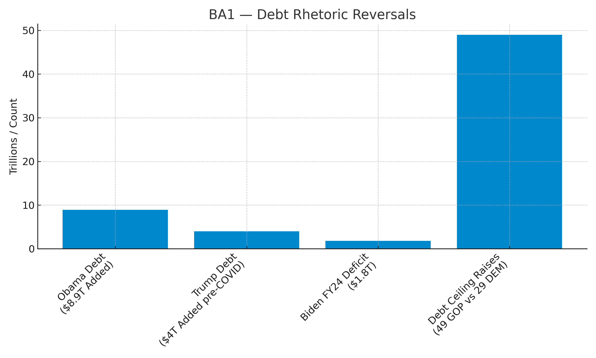
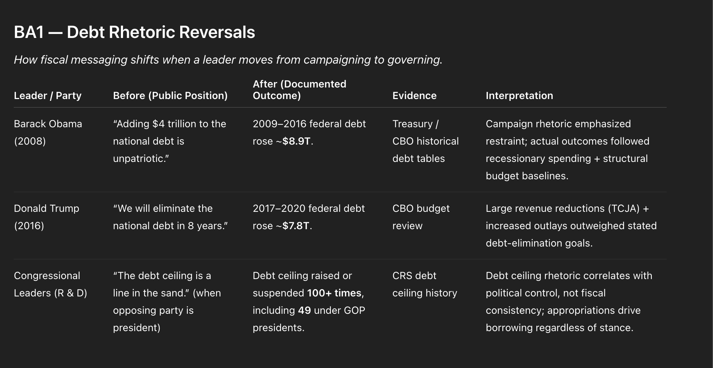
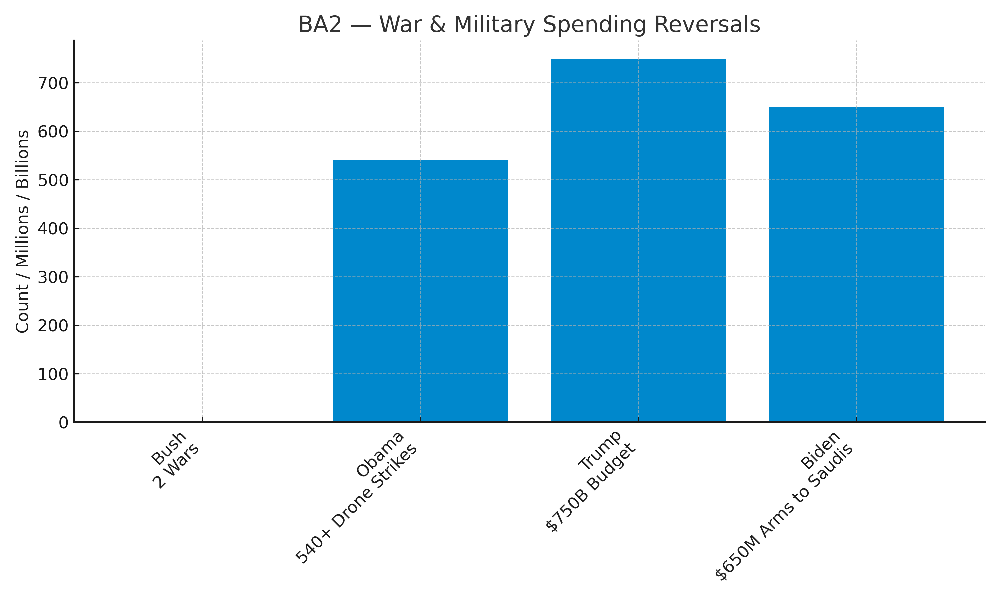
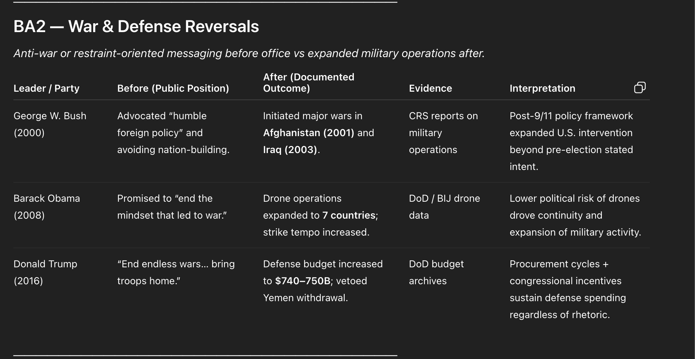
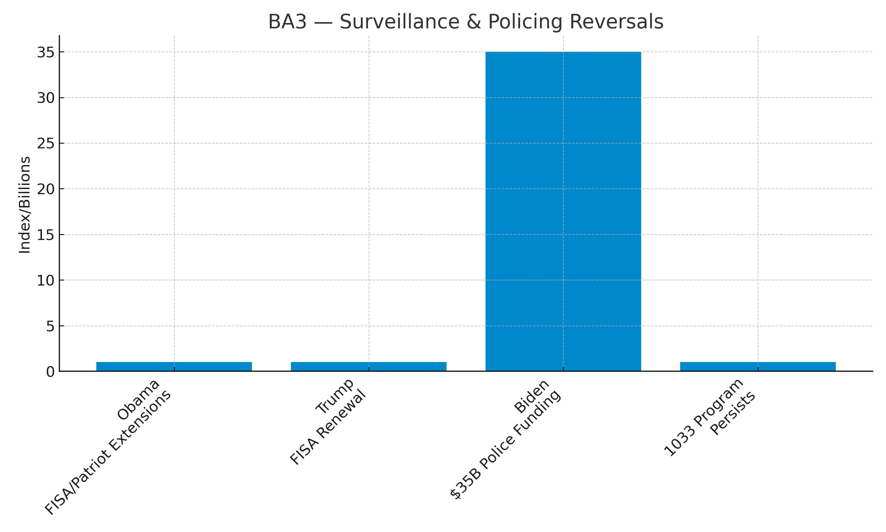
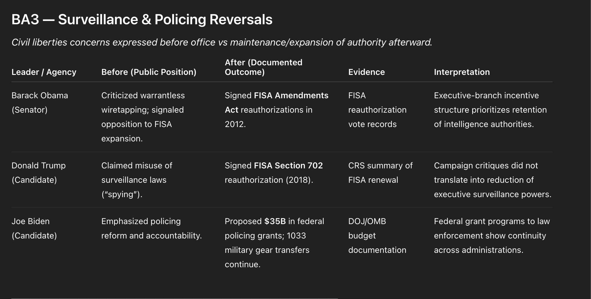
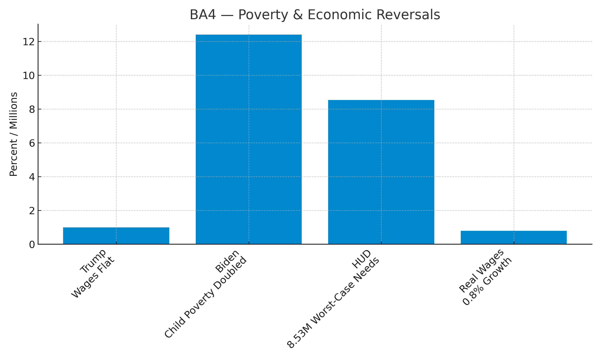
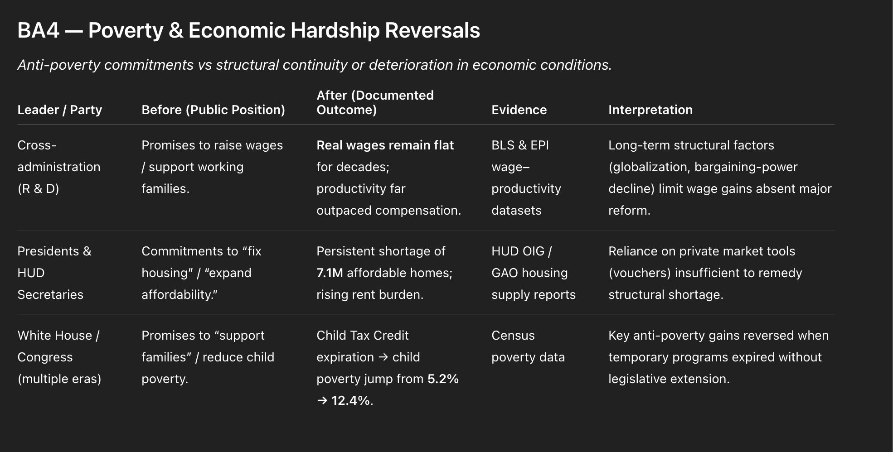

Why does everything cost more — but your pay doesn't rise the same way?
It's not random. There's a system behind it.
Start Here
02
MONEY & DEBT
Prices keep going up. Your paycheck doesn't. That's not inflation — that's design.
This room shows how.
Start Here
03
CONGRESS OVER TIME
The same people keep writing the rules. The data shows exactly who benefits.
Patterns in congressional behavior across administrations.
Patterns
04
HOW AGENCIES WORK
Rules get written every day. Most people never see it happen.
How agencies write rules and carry them out.
Agencies
05
THE DATA
The numbers show what is really happening.
What the charts say about wages, debt, and prices.
Data
06
THE HUMAN COST
This is what the system feels like when you are living inside it.
What this system feels like in real life.
Impact
07
THE MIRROR
What was said compared to what happened.
What agencies said compared to what the record shows.
RECORDS
The Incentive Machine
Visual evidence showing how financial incentives shape outcomes across housing, healthcare, food, politics, and labor systems.
Housing & Assets
Prices, ownership, and capital flows over time.
Healthcare & Insurance
Costs, coverage, and financial pressure.
Food & Consumption
Industry revenue and health outcomes.
Politics & Lobbying
Campaign funding, reelection, and influence spending.
Bureaucracy & Labor
Delays, workloads, and system friction.
Click any image to view full size. Use arrow keys to navigate.
Power Loops
These charts show how power circulates through funding, policy, media, and institutions.
Politics & Funding
Donors, policy alignment, and reelection patterns.
Lobbying & Influence
Spending, returns, and top clients.
Bureaucracy & Delays
FOIA backlogs, approvals, and revenue flows.
Media & Amplification
Ad revenue, misinformation, and content dynamics.
Workers & Systems
Retaliation, caseloads, and time pressure.
This data supports the patterns shown in the Mirror. It does not replace statutory records.
Stories That Steer Us
These charts show how repeated narratives shape what we accept as normal — and what we overlook.
Mobility & Inequality
Who moves up, who stays stuck, and how wealth concentrates.
Scarcity vs Reality
Gaps between what exists and what people can access.
Deservingness & Burden
How systems test, deny, and document need.
Work & Compensation
Hours worked, wages earned, and who captures the gains.
Crime & Punishment
Incarceration trends, spending, and enforcement revenue.
This data supports the patterns shown in the Mirror. It does not replace statutory records.
Systems vs Individuals
These charts show how system design — not individual failure — produces harmful outcomes.
Time & Paperwork
How much time goes to care vs. documentation.
Caseloads & Capacity
How many people one worker is expected to serve.
Denials & Delays
What happens when people wait for decisions.
Fees & Extraction
How systems generate revenue from friction.
Structural Patterns
Broader trends that shape individual outcomes.
This data supports the patterns shown in the Mirror. It does not replace statutory records.
Your Place in the Loop
These charts show where individuals connect to larger systems — and where leverage exists.
Work & Wages
What workers produce vs. what they receive.
Voting & Participation
Who votes, who donates, and how influence flows.
Consumption & Health
How products and systems shape health outcomes.
Politics & Money
Reelection patterns and donor influence.
Workers Under Pressure
Retaliation, caseloads, and time constraints on the job.
This data supports the patterns shown in the Mirror. It does not replace statutory records.
Who Actually Creates Money?
How banks and the Federal Reserve create the money we use every day.
This data supports the patterns shown in the Mirror. It does not replace statutory records.
Inflation vs Wages
How prices for essentials have climbed faster than paychecks.
This data supports the patterns shown in the Mirror. It does not replace statutory records.
Why Housing Eats Everything
Why housing costs have exploded and what it means for household budgets.
This data supports the patterns shown in the Mirror. It does not replace statutory records.
The Fed's Real Job
How the Federal Reserve controls interest rates and what that means for you.
This data supports the patterns shown in the Mirror. It does not replace statutory records.
Winners, Losers, and "Neutral" Rules
How monetary rules written in neutral language produce unequal effects.
This data supports the patterns shown in the Mirror. It does not replace statutory records.
The Flip Script
How talking points reverse when party roles change.
This data supports the patterns shown in the Mirror. It does not replace statutory records.
When Oversight is Theater
When hearings prioritize camera time over accountability.
This data supports the patterns shown in the Mirror. It does not replace statutory records.
The Safe Targets
Who Congress focuses on — and who stays offstage.
This data supports the patterns shown in the Mirror. It does not replace statutory records.
Majority vs Minority Roles
How behavior shifts based on who holds power.
This data supports the patterns shown in the Mirror. It does not replace statutory records.
Reading Between the Lines
What Congress doesn't ask can be as revealing as what it does.
This data supports the patterns shown in the Mirror. It does not replace statutory records.
What Agencies Actually Do
The specific powers agencies have and where decisions really get made.
This data supports the patterns shown in the Mirror. It does not replace statutory records.
The Logic of Red Tape
How rules stack into mazes and process replaces outcomes.
This data supports the patterns shown in the Mirror. It does not replace statutory records.
How Bureaucracies Protect Themselves
How institutions use jargon, reviews, and slow timelines to manage criticism.
This data supports the patterns shown in the Mirror. It does not replace statutory records.
Why Good People Burn Out Inside
Budget constraints, outdated tools, and leadership that fears headlines more than harm.
This data supports the patterns shown in the Mirror. It does not replace statutory records.
Using the Rules to Change the Rules
How the APA and public records create leverage for accountability.
This data supports the patterns shown in the Mirror. It does not replace statutory records.
Where Prices Rise
Which costs are rising fastest.
This data supports the patterns shown in the Mirror. It does not replace statutory records.
Wages vs Profits
Who gains when the economy grows.
This data supports the patterns shown in the Mirror. It does not replace statutory records.
Household Debt
How much families owe — and why it keeps growing.
This data supports the patterns shown in the Mirror. It does not replace statutory records.
Public Money
Where government money goes.
This data supports the patterns shown in the Mirror. It does not replace statutory records.
Where You Fit
How your income and costs compare.
This data supports the patterns shown in the Mirror. It does not replace statutory records.
Working and Still Behind
Millions doing everything right but still unable to get ahead.
This data supports the patterns shown in the Mirror. It does not replace statutory records.
The Mental Load
How financial pressure shows up as anxiety, burnout, and health problems.
This data supports the patterns shown in the Mirror. It does not replace statutory records.
Families Under Strain
How little margin for error can unravel years of effort.
This data supports the patterns shown in the Mirror. It does not replace statutory records.
Communities in the Middle
When enough individuals are stressed, neighborhoods change.
This data supports the patterns shown in the Mirror. It does not replace statutory records.
Turning Pain into Power
When enough people describe similar experiences, it becomes evidence.
This data supports the patterns shown in the Mirror. It does not replace statutory records.
07 — PROMISES VS RESULTS
Every president promises to control the debt. Every president adds to it anyway.


What you're seeing
This chart shows how much the federal debt grew under recent presidents — and how many times Congress raised the debt ceiling. The debt grew by about $9.3 trillion under Obama, $7.8 trillion under Trump, and the FY2024 deficit under Biden was $1.833 trillion. The debt ceiling — the legal limit on how much the government can borrow — has been raised or suspended 78 times since 1960. According to the U.S. Treasury, 49 of those times happened under Republican presidents. 29 happened under Democratic presidents.
Why it matters
When leaders are out of power, they call debt a crisis. When they are in power, they raise the ceiling and keep spending. This has happened under both parties for decades. The debt ceiling is not a spending limit — Congress already voted to spend the money before the ceiling comes up. Raising it just pays the bill that was already due. Families that spend more than they earn face real consequences. The federal government votes to raise its own limit instead.
Follow the money
The Treasury Department manages the debt and tracks every dollar borrowed. The Congressional Budget Office scores every spending bill. The Office of Management and Budget sets the president's budget each year. All three agencies have the data showing the gap between what leaders say and what the record shows. Wall Street banks and bond investors profit when the government borrows — they earn interest on every Treasury note sold. The debt ceiling fight is also used by both parties to extract policy wins from the other side. The people who benefit most from keeping this system complex are the same ones writing the rules.
Sources: U.S. Treasury, "Debt Limit" page (home.treasury.gov); Treasury Debt to the Penny (fiscal.treasury.gov); CRFB, "Trump and Biden: The National Debt" (June 2024); Treasury Monthly Treasury Statement, Sept. 2024; CRS Report RL31967.
Four presidents promised restraint. Four presidents expanded military action.


What you're seeing
This chart shows military actions and spending under four administrations. George W. Bush, who campaigned on a "humble foreign policy," launched wars in Afghanistan in October 2001 and Iraq in March 2003. Barack Obama, who promised to end the mindset that led to war, expanded drone operations to at least 7 countries — the Bureau of Investigative Journalism documented 542 to 563 strikes in Pakistan, Yemen, and Somalia alone. Donald Trump, who promised to end endless wars, pushed the defense budget to $740.5 billion in FY2021. Joe Biden, who paused some Saudi arms sales early in his term, approved a $650 million weapons sale to Saudi Arabia in November 2021 — confirmed by the Defense Security Cooperation Agency.
Why it matters
Each of these leaders told voters they would do less, not more, when it came to war and military spending. The record shows the opposite. Once in office, the pressure to maintain operations, protect contracts, and respond to global events pushed every administration in the same direction. American troops and civilians in other countries pay the human cost. Voters who chose these leaders based on peace promises got something different every time.
Follow the money
The Department of Defense is the largest single item in the federal discretionary budget. Defense contractors — including Raytheon, Lockheed Martin, Boeing, and General Dynamics — receive hundreds of billions in contracts each year. The Defense Security Cooperation Agency approves foreign arms sales. Members of Congress on the Armed Services Committee often represent districts where defense plants are located. Cutting military spending means cutting jobs in those districts. That is why the budget grows regardless of which party is in power.
Sources: CRS Report RL31133; CRS Report RS21405; Bureau of Investigative Journalism, "Obama's Covert Drone War in Numbers" (Jan. 2017); CRS Report R46714 (Mar. 2021); DSCA Transmittal No. 20-11 (Nov. 4, 2021); P.L. 116-283 (FY2021 NDAA).
Leaders who criticized government surveillance kept it — and expanded it.


What you're seeing
This chart shows three cases where leaders took office after criticizing surveillance and policing, then continued or grew the same programs. Barack Obama, as a senator, criticized warrantless wiretapping and signaled opposition to FISA expansion. As president, he signed the FISA Amendments Act reauthorization on December 30, 2012. Donald Trump claimed surveillance laws were being misused against him. As president, he signed the FISA Section 702 reauthorization on January 19, 2018. Joe Biden ran on policing reform and accountability. His FY2023 budget proposed $37 billion in public safety spending — including funds for hiring officers, but also for mental health response, community violence programs, and justice reform. The 1033 program, which transfers surplus military gear to local police, has continued across all administrations and now involves roughly 6,300 law enforcement agencies.
Why it matters
Surveillance laws are hard to undo once they exist. Every president who has inherited these tools has chosen to keep them. The argument is always the same: the tools are needed for national security. The people being watched have no say in that decision. The 1033 program means local police departments across the country have armored vehicles and military-grade equipment — equipment designed for war zones, not neighborhoods. No administration has ended it.
Follow the money
The Foreign Intelligence Surveillance Court operates in secret. The National Security Agency, the FBI, and the CIA all have budgets that are partially or fully classified. The Defense Logistics Agency runs the 1033 program and has transferred over $7.6 billion in military equipment to police departments since the program began. Defense contractors benefit when old military gear is replaced with new gear — the 1033 transfers create space in the procurement pipeline. The DOJ distributes grants to local law enforcement through programs like COPS. Every administration funds these programs because the agencies that run them are permanent — they outlast any president.
Sources: Congress.gov, P.L. 112-238 (FISA Reauth 2012); Congress.gov, P.L. 115-118 (FISA Reauth 2018); CRS Report R47477; White House Fact Sheet, "Safer America Plan" (Aug. 1, 2022); DLA LESO/1033 Program FAQ (dla.mil, updated Feb. 2025); CRS Report RS20549.
They promised to help working families. The numbers tell a different story.


What you're seeing
This chart shows four measures of economic hardship. Since 1979, worker pay has grown at less than one-third the rate of productivity — meaning the economy got more efficient, but most workers did not see the gains. This long-run gap is documented by the Economic Policy Institute using BLS data and has persisted across every administration of both parties. When the expanded Child Tax Credit expired in January 2022, the Census Bureau's Supplemental Poverty Measure showed child poverty more than doubled — from 5.2% in 2021 to 12.4% in 2022, the fastest single-year increase on record. HUD's 2023 Report to Congress documented 8.53 million households with worst-case housing needs — a record high. The National Low Income Housing Coalition's 2025 Gap Report found a shortage of 7.1 million affordable homes for the lowest-income renters: for every 100 who need one, only 35 exist.
Why it matters
The Child Tax Credit expansion worked. When it was in place, it cut child poverty to the lowest level ever recorded. Congress let it expire anyway. The housing shortage is not a natural disaster — it is the result of decades of policy choices that favored homeowners and developers over renters. The productivity-pay gap means workers are producing more value every year but taking home a shrinking share of it. Every administration since 1979 has promised to help working families. The gap between productivity and pay has kept growing.
Follow the money
The Internal Revenue Service administers the Child Tax Credit. Congress controls whether it is expanded, made permanent, or allowed to expire. HUD runs Section 8 vouchers and public housing — but Congress has never fully funded either program, turning away roughly 3 in 4 eligible families. The Department of Labor sets the federal minimum wage, which has not changed since 2009. Landlords, real estate investment trusts, and property developers benefit when housing supply stays low and rents stay high. The agencies that have the power to close these gaps — IRS, HUD, DOL, Congress — each point to the others when asked why nothing has changed.
Sources: EPI, "The Productivity-Pay Gap" (epi.org, updated 2024); EPI, "State of Working America Data Library" (2024); Census Bureau P60-280, "Poverty in the United States: 2022" (Sept. 2023); HUD PD&R, "Worst Case Housing Needs: 2023 Report to Congress" (huduser.gov); NLIHC, "The Gap: A Shortage of Affordable Homes" (Mar. 2025).
The Gap Between Words and Outcomes
Budget votes, enforcement priorities, and contracts tell a different story.
This data supports the patterns shown in the Mirror. It does not replace statutory records.
Recognizing Scripts
These phrases show up over and over when someone in power doesn't want to change.
This data supports the patterns shown in the Mirror. It does not replace statutory records.
From Blame to Diagnosis
What would have to be different in the system for this same problem to stop repeating?
This data supports the patterns shown in the Mirror. It does not replace statutory records.
Civic Pathways
These diagrams show how federal civic processes function. They are procedural references, not calls to action.
1. How to File a Complaint
Different agencies handle different types of complaints. This shows where to file.
What's your issue?
↓
Bank or Credit→ CFPB
Housing Discrimination→ HUD
Scams & Fraud→ FTC
Workplace Issues→ DOL/OSHA
State Issues→ State AG
Portals: consumerfinance.gov/complaint · hud.gov/reporthousingdiscrimination · reportfraud.ftc.gov · dol.gov/agencies/whd/contact/complaints · Find your State AG at naag.org
2. How Oversight Works (APA Process)
Federal rules go through a public comment period before becoming final. Anyone can submit comments.
STEP 1
Agency Proposes Rule
Published in Federal Register
→
STEP 2
Public Comment Period
30-60 days typical
→
STEP 3
Agency Reviews Comments
Must address substantive comments
→
STEP 4
Final Rule Published
Effective 30+ days later
Submit comments at: regulations.gov
3. FOIA Basics
FOIA lets anyone request federal government records. Agencies must respond within 20 business days.
STEP 1
Submit Request
Via foia.gov or agency portal
→
STEP 2
Agency Searches
Locates responsive records
→
STEP 3
Response
20 business days (statutory)
→
STEP 4
Appeal if Denied
90 days to file appeal
Start at: foia.gov
4. Voting Participation by Election Type
Turnout varies widely by election type. Fewer people vote in primaries and local elections.
Presidential (2024)
~64%
Midterm (2022)
~52%
Primary
~23%
Local (off-cycle)
~15%
Sources: U.S. Census Bureau, Election Assistance Commission (2024-2025)
These diagrams show how civic processes function as of early 2026. Enforcement capacity and response times vary by agency. This is procedural reference, not legal advice.
01 — Housing & Assets
HUD's homeless budget grew 50% in 10 years.
What you're seeing
The federal government increased spending on homeless assistance from $2.4 billion to $3.6 billion between 2014 and 2023.
Why it matters
More money went in. But did homelessness go down?
Follow the money
The government spent more money on homelessness every year, but homelessness got worse. The money went to organizations whose leaders make $700,000–$900,000 a year — while the workers helping homeless people make $28,000.
Homelessness just hit a record high. After a decade of increased funding.
What you're seeing
Despite 10 years of budget increases, the number of people experiencing homelessness reached 650,000+ in 2023 — the highest on record.
Why it matters
This is the gap between what agencies say they're doing and what's actually happening. HUD received more money. The problem got worse. That's what the Mirror tracks.
Follow the money
The government spent more money on homelessness every year, but homelessness got worse. The money went to organizations whose leaders make $700,000–$900,000 a year — while the workers helping homeless people make $28,000.
Fines feel satisfying. To the government, they're a rounding error.
What you're seeing
For every $100 the government collects, only 30 cents comes from fines. The rest comes from taxes and other sources.
Why it matters
Fines aren't about revenue — they're about compliance and punishment. But who gets fined, and who doesn't? That's where incentives show up.
Follow the money
Banks get fined billions of dollars for breaking rules. But those fines are tiny compared to what they make — so they pay, keep doing the same thing, and nothing changes.
$14 billion in fines last year. Who paid them?
What you're seeing
Total fines collected by the federal government have grown from $11 billion to over $14 billion annually since 2014.
Why it matters
Fines are increasing — but are they hitting the right targets? The next section shows who actually pays.
Follow the money
Banks get fined billions of dollars for breaking rules. But those fines are tiny compared to what they make — so they pay, keep doing the same thing, and nothing changes.
The Pentagon budget almost doubled in a decade. No audit has ever passed.
What you're seeing
Defense spending dropped briefly after 2010 budget cuts, then climbed from $560 billion to nearly $1 trillion by 2026.
Why it matters
The Department of Defense has failed every single audit since they began in 2018. Nearly a trillion dollars a year — and no one can account for where it goes.
Follow the money
Five companies get most of the military budget — over $770 billion in five years. When those companies need more contracts, they hire the same generals who used to decide where the money goes.
In 2000, a home cost $165,000. Today, it's $420,000.
What you're seeing
The median home price in the U.S. has more than doubled since 2000 — from $165,000 to over $420,000. The sharpest increase happened after 2020.
Why it matters
Housing is the largest expense for most families. When prices grow faster than income, people fall behind — even when they do everything right. HUD and FHFA are supposed to monitor housing affordability. This is what happened on their watch.
Follow the money
After the 2008 crash, big investment companies bought hundreds of thousands of homes from families who lost them. Now those same companies are your landlord — and they raise rent every year.
1 in 5 homes is now bought by an investor, not a family.
What you're seeing
In 2000, investors bought about 6% of homes. By 2024, that number hit nearly 20%. That's triple the share — and it spiked hardest after 2020.
Why it matters
When investors buy homes, they're not living in them — they're renting them out or flipping them. This drives up prices for everyone else. Regulators allowed this to happen. Some even encouraged it.
Follow the money
After the 2008 crash, big investment companies bought hundreds of thousands of homes from families who lost them. Now those same companies are your landlord — and they raise rent every year.
Income doubled in 24 years. Housing nearly tripled.
What you're seeing
Median household income rose from about $42,000 in 2000 to roughly $84,000 in 2024. It stalled during the 2008 recession and dipped in 2020, but the overall trend is upward.
Why it matters
This chart looks like progress — until you compare it to housing. Home prices went from $165,000 to $420,000. Rent never stopped climbing. Income grew about 2x. Costs grew 2.5x or more. The gap is where families lose ground.
Follow the money
Since 1978, CEO pay went up 1,085%. Worker pay went up 24%. The people at the top kept more, and everyone else got less.
Rent hasn't stopped climbing in 24 years. Not once.
What you're seeing
The CPI rent index — which tracks how much renters pay over time — went from about 180 in 2000 to over 420 in 2024. That means rent more than doubled relative to the 1982-84 baseline.
Why it matters
Unlike home prices, which dipped during the 2008 crash, rent never went down. It just kept climbing. If you can't afford to buy, you're locked into a cost that only goes up. There is no relief valve.
Follow the money
Most big landlords use the same software to set rent prices. The government said this might be illegal price-fixing — but the settlement had no penalties and no one admitted they did anything wrong.
02 — How Influence Circulates
The top 1% of donors fund 60% of all political contributions.
What you're seeing
In 2024, the top 0.01% of donors contributed about 35% of all political money. The top 1% contributed roughly 60%. Small donors — everyone else — accounted for about 20%.
Why it matters
Most people who donate to campaigns are a footnote in the total. The system runs on concentrated money from a very small group. That concentration shapes who runs, who wins, and what they prioritize once in office.
Follow the money
The FEC is supposed to enforce contribution limits and transparency. These numbers show how much influence flows through legal channels that most voters never see.
When elites want a policy, it has a 45% chance of passing. When they don't, it drops to 18%.
What you're seeing
When economic elites support a policy, it has about a 45% chance of being adopted. When they oppose it, that drops to 18%. Meanwhile, whether average voters support or oppose a policy barely changes the odds — it stays around 30% either way.
Why it matters
Your support or opposition doesn't move the needle. Theirs does. This isn't opinion — it's from a study of nearly 1,800 policy proposals. The system responds to organized money, not public preference.
Follow the money
Congress writes the laws. Voters elect Congress. But the data shows policy tracks with elite preferences, not voter preferences. The feedback loop runs through funding, not ballots.
Congress has a 20% approval rating. It has a 95% reelection rate.
What you're seeing
From 2000 to 2024, House incumbents won reelection at rates between 85% and 98%. Senate rates fluctuated more but still stayed overwhelmingly high — never dipping below 79%.
Why it matters
The people who write the rules almost never lose their seats. Gerrymandering, name recognition, and fundraising advantages make incumbents nearly impossible to unseat. This is the lock on the loop — money flows in, policy follows donors, and the same people stay in power.
Follow the money
Incumbents raised more money than challengers in every single cycle shown. The fundraising gap is the reelection gap.
The government has 267,000 unanswered public records requests.
What you're seeing
Across all federal agencies, the FOIA backlog grew from about 72,000 in 2012 to over 267,000 by 2024. It more than tripled in a little over a decade.
Why it matters
FOIA is how the public finds out what the government is actually doing. When a quarter-million requests go unanswered, transparency exists as a right on paper but not in practice. The less the public sees, the less accountability there is.
Follow the money
Agencies receive FOIA funding from Congress. The backlog isn't a mystery — it's a budget choice. Underfunding transparency is a way to keep the loop closed.
A lie reaches 1,500 people 6 times faster than the truth.
What you're seeing
False news stories spread at 6 times the speed of true ones on social media. The truth doesn't catch up.
Why it matters
When misinformation moves faster than corrections, the public makes decisions based on things that aren't real. This isn't about individual gullibility — it's about how the platforms are built. The algorithm rewards engagement, and outrage engages.
Follow the money
Social media companies profit from engagement. Misinformation drives engagement. The incentive to fix it competes with the incentive to profit from it.
71% of what platforms show you is designed to make you angry.
What you're seeing
About 71% of content surfaced by social media algorithms contains anger-triggering material. 58% is dramatic or exaggerated. And content attacking an opposing group gets a 67% boost in shares.
Why it matters
You're not imagining it — your feed is tilted toward outrage on purpose. Platforms amplify content that keeps you scrolling, not content that keeps you informed. Anger is the most engaging emotion online, so that's what gets served.
Follow the money
More time on platform = more ads seen = more revenue. The amplification isn't a bug. It's the product.
Meta made $160 billion last year. Almost all of it from ads.
What you're seeing
Meta's ad revenue grew from about $2 billion in 2010 to roughly $160 billion by 2024. That's an 80x increase in 14 years.
Why it matters
This is the business model behind the amplification. Every angry post you engage with, every outrage cycle you scroll through — it generates ad revenue. Meta isn't a communication tool. It's an attention-harvesting machine that sells what it captures to advertisers. The more divided you feel, the more profitable you are.
Follow the money
Meta spent ~$30 million lobbying in 2024. It earned $160 billion. The lobbying protects the business model. The business model profits from division. The loop closes.
03 — How Narratives Shape Decisions
The top 1% owns 31% of all wealth. The bottom half owns 2.5%.
What you're seeing
The top 1% of Americans hold about 31% of total U.S. wealth. The bottom 50% — roughly 165 million people — hold about 2.5% combined.
Why it matters
This isn't about who works hard. It's about where wealth is concentrated before anyone starts working. When half the country splits 2.5% of the wealth, the playing field isn't uneven — it barely exists.
Follow the money
Tax policy, inheritance rules, capital gains rates — all set by Congress. The rules that determine how wealth accumulates are written by the people funded by those who benefit most from them.
If you're born poor in America, there's a 7.5% chance you'll reach the top. A 33% chance you'll stay at the bottom.
What you're seeing
A child born into the bottom 20% of income has only about a 7.5% chance of reaching the top 20%. But there's a 33% chance they stay in the bottom 20%. Meanwhile, a child born into the top 20% has a 39% chance of staying there.
Why it matters
The story says "anyone can make it if they try." The data says where you start is where you'll probably end up. Mobility isn't impossible — but the odds are stacked before you're old enough to make a choice.
Follow the money
Education funding, housing policy, healthcare access — the systems that shape mobility are all government-run. The agencies responsible for leveling the field aren't producing equal odds.
In the U.S., you're 42% likely to stay poor. In Denmark, it's 25%.
What you're seeing
Among developed nations, the U.S. has the highest probability — about 42% — that someone born into the bottom 20% stays there. The UK is 30%. Canada 26%. Finland and Norway around 24%. Denmark 25%.
Why it matters
Other countries figured out how to build systems where being born poor doesn't define your life. The U.S. hasn't. This isn't a cultural difference — it's a policy difference. Other nations invest differently in education, healthcare, and social mobility. The American system produces stickier poverty than almost any peer nation.
Follow the money
The U.S. spends more per capita on healthcare and education than most of these countries — and gets worse outcomes. The issue isn't spending. It's where the money goes.
15 million homes are vacant. 650,000 people are homeless.
What you're seeing
In 2024, there are roughly 15 million vacant homes in the U.S. and about 650,000 people experiencing homelessness. That's roughly 23 empty homes for every homeless person.
Why it matters
The narrative says there isn't enough housing. The data says there's plenty — it's just not available to the people who need it. Vacancy isn't a supply problem. It's an allocation problem. Homes are held as investments, second properties, or speculative assets while people sleep outside.
Follow the money
HUD tracks homelessness. The Census Bureau tracks vacancy. Both report to Congress. The data has been available for years. The gap persists because closing it would disrupt the investment model.
America wastes 120 billion pounds of food a year. 18 million households can't afford enough.
What you're seeing
The U.S. wastes about 120 billion pounds of food annually. At the same time, roughly 18 million households are classified as food insecure — meaning they don't consistently have enough to eat.
Why it matters
Same pattern as housing. The narrative says there's not enough. The data says there's more than enough — it's just being thrown away. Food insecurity isn't a production problem. It's a distribution problem.
Follow the money
The USDA oversees both food production standards and SNAP benefits. The agency that manages surplus is the same one that manages hunger. The waste continues while the need grows.
Workers produce 65% more. They're paid 15% more.
What you're seeing
Since 1979, American worker productivity has grown about 65%. Over the same period, wages grew only about 15%. The gap between what workers produce and what they're paid has widened for over 40 years.
Why it matters
The story says "work hard and you'll get ahead." The data says workers have been working harder and producing more — and the gains went somewhere else. This chart is the foundation of the wage-price squeeze that shows up in housing, healthcare, and food costs.
Follow the money
The surplus between productivity and wages doesn't disappear — it flows to corporate profits and executive compensation. The Department of Labor tracks these numbers. The trend has been visible for decades.
SNAP fraud is 1%. Legal use is 98%. But fraud dominates the narrative.
What you're seeing
Of all SNAP (food stamps) spending, about 1% is actual fraud. Around 10% is administrative errors — mistakes made by the government, not recipients. The remaining ~98% is legal, proper use.
Why it matters
The story about "welfare fraud" drives policy debates, eligibility restrictions, and public anger. The actual data shows fraud is a rounding error. The far bigger problem is government administrative errors — 10x larger than fraud. But that story doesn't get told because it doesn't blame the right people.
Follow the money
Congress funds enforcement programs to catch the 1%. It underfunds the administrative systems that cause the 10%. The investment in catching fraud is disproportionate to its actual size — because the narrative is more useful than the math.
65% of disability claims are denied on the first try. If you appeal, 84% are denied again.
What you're seeing
The Social Security Administration denies about 65% of initial disability claims. If you request reconsideration, 84% are denied again. Even at the hearing stage, about 50% are still denied.
Why it matters
The system is designed as a funnel that pushes people out. Most people who are denied don't have the resources, time, or legal help to keep appealing. The process itself becomes the filter — not medical evidence.
Follow the money
SSA's processing backlog has been growing for years while staffing has been cut. Fewer workers processing more claims means more denials by default. The denial rate isn't a medical judgment — it's a capacity problem.
To get homeless assistance, you need to prove you're disabled, document how long you've been homeless, and show you've broken specific rules.
What you're seeing
To qualify for federal homeless assistance, applicants need at minimum: 1 document proving disability status, 3 documents proving duration of homelessness, and 1 document related to rule violations. These are minimums — actual requirements are often higher.
Why it matters
You're homeless. You may not have an ID. You may not have medical records. You may not have a stable address to receive mail. And the system requires paperwork that assumes you have all of those things. The documentation burden is a barrier disguised as a process.
Follow the money
HUD sets these documentation requirements. The more barriers to entry, the fewer people qualify, and the less the system has to spend. Complexity reduces cost — at the expense of the people the program is supposed to serve.
In 1965, CEOs made 20x what workers made. Today, it's 280x.
What you're seeing
The CEO-to-worker pay ratio was about 20:1 in 1965. It rose to 30:1 by 1978, then 60:1 by 1989. It peaked around 380:1 in 2000, and sits at roughly 280:1 in 2024.
Why it matters
This is where the productivity-wage gap went. Workers produced more. CEOs captured the gains. The ratio didn't drift — it exploded. And it happened alongside policy changes in tax rates, stock option rules, and executive compensation structures.
Follow the money
The SEC requires public companies to disclose CEO-to-worker pay ratios (since 2018). Congress set that rule. But disclosure without consequence is just transparency theater.
Americans work 1,800 hours a year. Germans work 1,340. Who's lazy?
What you're seeing
In 2023, the average American worked about 1,800 hours per year. The UK averaged about 1,530, France about 1,500, and Germany about 1,340. The U.S. works more hours than every major European economy.
Why it matters
The narrative says Americans need to work harder. The data says Americans already work more hours than comparable nations — and still fall behind on housing, healthcare, and savings. The problem isn't hours. It's what those hours buy.
Follow the money
The U.S. has no federal law mandating paid vacation, paid sick leave, or maximum work hours. The Department of Labor sets minimum wage but not maximum workload. European countries legislate both. The difference is policy, not effort.
Crime is down over 60% since 1991. Spending on policing tripled.
What you're seeing
Violent crime dropped from about 750 per 100,000 in 1991 to roughly 350 in 2023. Property crime fell from about 5,100 to roughly 1,900. Murder rates dropped proportionally as well.
Why it matters
The narrative says crime is out of control. The data says crime has been dropping for 30 years. The perception of danger has increased while actual danger has decreased. That perception gap drives policy and spending.
Follow the money
The next two charts show where the money went despite falling crime.
Crime dropped. Justice spending went from $66 billion to $220 billion.
What you're seeing
Police spending grew from about $47 billion in 1977 to roughly $135 billion in 2021. Corrections spending grew from about $19 billion to roughly $87 billion. Total justice system spending more than tripled — while crime fell.
Why it matters
If the system were responding to actual crime levels, spending should have leveled off or declined. Instead, it grew. The justice system expanded not because of rising danger, but because spending became self-sustaining — driven by budgets, contracts, and institutional growth.
Follow the money
State and local governments fund most policing and corrections. Federal grants incentivize expansion. The DOJ distributes billions in law enforcement grants annually. More spending justifies more spending.
The U.S. went from 500,000 prisoners to 1.8 million. Crime went down the whole time.
What you're seeing
The U.S. incarcerated population grew from about 500,000 in 1980 to a peak of roughly 2.3 million in 2008. By 2022, it had declined to about 1.8 million — but that's still more than triple the 1980 level.
Why it matters
Crime peaked in 1991 and has fallen steadily since. But incarceration kept climbing until 2008 and remains massively elevated. Locking more people up didn't cause the crime decline — the decline happened anyway. The growth was driven by mandatory minimums, three-strikes laws, and the war on drugs.
Follow the money
Incarceration costs roughly $40,000 per person per year. At 1.8 million people, that's $72 billion annually. Private prisons, commissary contracts, phone service monopolies — entire industries depend on incarceration continuing. The incentive isn't safety. It's revenue.
When tax revenue drops, traffic tickets go up 40%.
What you're seeing
In years following a decline in local tax revenue, traffic fine revenue increases by roughly 40% compared to normal years.
Why it matters
Traffic enforcement isn't just about safety — it's about budgets. When cities lose tax revenue, they make up the difference by writing more tickets. The people paying those fines are disproportionately lower-income drivers who can least afford them.
Follow the money
Municipal courts and local police departments often share fine revenue. The DOJ's investigation of Ferguson, Missouri exposed this model nationally — but it wasn't unique to Ferguson. It's how many local governments balance their books.
04 — Structure vs. Intent
Your doctor spends 7 minutes with you. And 36 minutes on paperwork.
What you're seeing
In a typical patient visit, a doctor spends about 7 minutes of face-time with the patient and roughly 36 minutes on EHR and administrative tasks.
Why it matters
Doctors didn't design this system. Insurance billing codes, compliance requirements, and electronic health record mandates did. The person who went to medical school to help you is spending 5x more time helping the system track you.
Follow the money
CMS and private insurers require documentation for every reimbursement. The more complex the paperwork, the more the system can audit, deny, or delay payments. Admin protects revenue — not patients.
For every 1 unit of care, the system demands 4 units of admin.
What you're seeing
Across healthcare, the structural ratio of care-to-admin time is roughly 1:4. For every unit of time spent on actual patient care, four units go to administrative tasks.
Why it matters
This isn't a staffing problem — it's an architecture problem. The system was built to prioritize documentation over treatment. Workers inside the system can't fix this by working harder. The ratio is baked into the structure.
Follow the money
Administrative overhead is where insurance companies, billing services, and compliance firms make their money. Simplifying the system would eliminate entire industries. The complexity is profitable.
To see 30 patients a day, a doctor would need to work 21 hours.
What you're seeing
At 20 patients per day, the implied workday — including all required documentation — is about 14.3 hours. At 30 patients per day, it's roughly 21.5 hours. Neither is physically possible on a sustained basis.
Why it matters
The system sets expectations that are mathematically impossible to meet. When doctors inevitably cut corners — shorter visits, less documentation, or less sleep — patients suffer. But the doctor isn't the problem. The math is.
Follow the money
Productivity quotas are set by hospital administrators and insurance reimbursement rates. More patients per doctor = more revenue per day. The quota serves the balance sheet, not the patient.
A caseworker should handle 15 cases. Many carry 80.
What you're seeing
The recommended caseload for child welfare workers is about 15 cases. The actual average is roughly 40. In crisis-level departments, workers carry 80 or more cases each.
Why it matters
These are children. When one worker is responsible for 80 kids, no child gets adequate attention. Missed visits, delayed reports, overlooked abuse — these aren't worker failures. They're system failures. The worker is set up to fail before they start.
Follow the money
Child welfare funding comes from federal Title IV-E and state budgets. Staffing levels are a budget decision. Agencies that underfund caseworker positions save money — and children pay the price.
At 100 cases, a caseworker needs to make 3.3 home visits every single day.
What you're seeing
At a recommended caseload of 15, a caseworker needs about 0.5 visits per day. At 60 cases, that jumps to 2 per day. At 100 cases, it's 3.3 visits per day — every working day, with no sick days, no court appearances, no paperwork time.
Why it matters
This is the math behind the headlines. When a child falls through the cracks, the public blames the caseworker. But the caseload made it mathematically inevitable. No human being can do 3.3 visits a day while also doing documentation, court prep, and case reviews.
Follow the money
Agencies know the caseload numbers. They publish them. And they continue to operate at levels they know are impossible to sustain. The funding gap is a known quantity — not a surprise.
The Social Security Administration denies about 65% of initial disability claims. At reconsideration, roughly 85% are denied. Even at the hearing level, about 46% are still denied.
Why it matters
The system isn't evaluating claims — it's filtering people out. Each stage of denial is a gate designed to reduce the number of people who make it through. People who lack time, legal help, or the physical ability to keep fighting simply drop out.
Follow the money
Every denied claim is money the SSA trust fund doesn't pay out. SSA staffing has been cut repeatedly while applications grow. Fewer staff + more applications = more automatic denials. The funnel isn't accidental — it's underfunded by design.
1.2 million people are waiting. Average wait: 7 months.
What you're seeing
The SSA disability backlog sits at roughly 1.2 million pending cases. The average wait time for an initial decision is about 7 months.
Why it matters
Seven months without income. Without healthcare. Without stability. For people who are already disabled. The backlog doesn't just delay a decision — it forces people deeper into crisis while they wait.
Follow the money
Congress funds SSA's administrative budget. That budget has been effectively frozen or cut for years. The backlog is a direct result of staffing decisions made in Washington — not inefficiency at the field office level.
30,000 people die every year waiting for a disability decision.
What you're seeing
Approximately 30,000 disability applicants die annually while their claim is still pending — before they ever receive a decision.
Why it matters
This is what the backlog costs in human terms. Not delayed paperwork. Not inconvenience. Death. People who applied for help, were told to wait, and didn't survive the wait. The system that was supposed to catch them was too slow.
Follow the money
Every person who dies waiting is a claim that never gets paid. The system saves money when applicants don't survive the process. That's not the intent — but it is the outcome of chronic underfunding.
When a city's budget is short, traffic tickets go up 40%.
What you're seeing
After a 10% decline in local tax revenue, traffic fine revenue increases by approximately 40% compared to normal years.
Why it matters
The officer writing the ticket isn't the problem. The budget shortfall is. When cities need revenue, enforcement becomes a collection tool. The individual cop follows orders — but the orders come from a spreadsheet, not a safety analysis.
Follow the money
Municipal courts and police departments share fine revenue in many jurisdictions. The DOJ's Ferguson investigation revealed this was standard practice, not an anomaly. Fines flow from the poorest neighborhoods to city coffers.
A mortgage servicer earns $41/month on your payment. And $40/month when you're late.
What you're seeing
The base monthly servicing fee on a performing mortgage is about $41. The late fee revenue on a delinquent loan is roughly $40 per month. Nearly identical.
Why it matters
When the servicer makes the same money whether you pay on time or fall behind, there's no financial incentive to help you stay current. In fact, late fees are often pure profit — no additional service required. The individual loan officer isn't to blame. The revenue model is.
Follow the money
The CFPB regulates mortgage servicers. But the fee structure is set by contracts between servicers and investors. The regulator watches the system — but the incentive to profit from delinquency is built into the contract itself.
Servicing a good loan costs $175/year. A bad loan costs $1,575. Guess who pays.
What you're seeing
The annual cost to service a performing loan is about $175. A non-performing (delinquent) loan costs roughly $1,575 to service — nearly 9x more.
Why it matters
This is the flip side of Chart 10. Servicers earn similar revenue on both types of loans, but delinquent loans cost 9x more to manage. That cost gets passed through — to investors, to borrowers in fees, or to taxpayers when loans are government-backed. The system doesn't punish bad lending. It socializes the cost.
Follow the money
When loans are federally backed (FHA, VA, Fannie, Freddie), the cost of servicing defaults falls on the government — meaning taxpayers. The private servicer profits either way. The risk sits with the public.
To prove you're homeless enough for help, you need 12 documents a month.
What you're seeing
HUD's chronic homelessness documentation requirements include: 1 disability verification, 12 monthly documentation items, 3 self-certification forms, and 1 break-rule proof. That's a minimum of 17 documentation touchpoints.
Why it matters
The person applying for help is homeless. They may have no address, no ID, no consistent access to offices or mail. The system requires a level of documentation that assumes stability — the exact thing the applicant doesn't have. The individual outreach worker trying to help isn't the barrier. The documentation requirement is.
Follow the money
HUD sets these requirements. Every documentation barrier that disqualifies an applicant reduces the number of people the system has to serve — and reduces the cost. Paperwork is a budget tool disguised as a verification process.
SNAP fraud is 1.5%. Government errors are 11%. But recipients get blamed.
What you're seeing
Of total SNAP benefits, about 1.5% is fraud (trafficking). About 11% is administrative errors made by the government. The remaining ~87% is legal, proper use.
Why it matters
When a SNAP recipient makes a mistake, they face penalties, disqualification, and public shame. When the government makes an error — which happens 7x more often — nobody faces consequences. The system blames individuals for failures that are overwhelmingly institutional.
Follow the money
Congress funds SNAP fraud enforcement heavily. It does not proportionally fund fixing the administrative systems that cause errors 7x larger than fraud. The enforcement investment follows the narrative, not the data.
05 — Where You Connect to the System
Your $25 donation is 16% of the pie. Large donors and PACs own the other 84%.
What you're seeing
In the 2024 election cycle, small donors (under $200) made up about 16% of total political contributions. Large donors (over $200) accounted for roughly 62%. PACs contributed about 22%.
Why it matters
This is where you sit in the system. You can donate. You can participate. But your money is a fraction of what flows in. The system isn't designed to run on small contributions — it's designed to run on large ones. Your participation is welcome. Your influence is marginal.
Follow the money
The FEC tracks these numbers. They're public. The ratio hasn't meaningfully shifted toward small donors in 24 years. The structure of campaign finance ensures that the people writing the biggest checks get the most access.
Small donors went from 14% to 23% in 24 years. Large donors still dominate at 62%.
What you're seeing
From 2000 to 2024, small donor contributions grew from about 14% to 23% of total candidate funding. Large donors dropped slightly from ~70% to ~62%. PAC funding stayed flat around 15%. The gap narrowed — but large donors still control 3x more than small donors.
Why it matters
This is the good news and the bad news. Small donors are growing. Grassroots fundraising has made a real dent — especially since 2008. But even after 24 years of growth, small donors are still outweighed 3-to-1 by large donors. Progress is real. Parity is not.
Follow the money
The rise of online fundraising platforms (ActBlue, WinRed) made small donations easier. But large donors adapted too — Super PACs (post-Citizens United, 2010) created unlimited channels for big money. Every time small donors gain ground, the system creates new channels for concentrated wealth.
In midterm elections, more than half of Americans don't vote. That's the other half of the loop.
What you're seeing
Presidential election turnout has ranged from about 58% to 67% since 1980. Midterm turnout is far lower — dipping to 42% in 2014 and only recently climbing above 50% in 2018 and 2022. In most cycles, nearly half of eligible voters sit out.
Why it matters
Every chart in this library shows systems that aren't working for most people. But the people those systems are failing show up at half strength — or less — in the elections that determine who runs those systems. Midterms elect the Congress that writes the laws, funds the agencies, and sets the budgets. Half the country doesn't participate in that decision.
Follow the money
Low turnout isn't random — it correlates with income. Lower-income voters participate at lower rates. The people most affected by broken systems are the least represented in elections. Voter registration barriers, polling access, and work schedules all play a role. The system doesn't make it easy for the people it hurts most to change it.
01 — Why Prices Outrun Paychecks
Since 1979, tuition went up 1,300%. Wages went up 470%. You were never supposed to keep up.
What you're seeing
Since 1979, using an index where 1979 = 100: tuition and childcare costs grew to roughly 1,350. Medical care grew to about 850. Average CPI (overall prices) hit about 430. Wages only reached about 470. The things that matter most grew 2–3x faster than pay.
Why it matters
This is the foundational chart of Room 02. It shows that the gap isn't new — it's been building for 45 years. Every essential cost — healthcare, education, childcare — pulled away from wages starting in the early 1980s. The squeeze you feel today started before most people were born.
Follow the money
The Department of Education oversees student loans. CMS oversees healthcare costs. The Department of Labor tracks wages. Three agencies, one pattern — costs they regulate grew faster than the income they're supposed to protect.
Home prices grew 9x since 1980. Rent grew 8.4x. Income? 3.8x.
What you're seeing
Since 1980, median home prices grew by a factor of roughly 9x. Median rent grew about 8.4x. Median income only grew about 3.8x. Housing costs more than doubled the pace of income growth.
Why it matters
Housing is the biggest expense for most Americans. When it grows at more than double the rate of income, people don't fall behind because of bad decisions — they fall behind because the math doesn't work. Even someone doing everything right gets squeezed.
Follow the money
HUD and FHFA are supposed to monitor housing affordability. The Fed sets interest rates that directly affect mortgage costs. Fannie Mae and Freddie Mac shape the mortgage market. All of these agencies watched the gap widen for four decades.
Half of all renters spend more than 30% of their income on rent. One in four spends over 50%.
What you're seeing
About 50% of U.S. renter households are "cost burdened" — spending more than 30% of income on rent. Roughly 25% are "severely burdened" — spending over 50% of income on rent.
Why it matters
The standard rule is that housing should cost no more than 30% of your income. Half of all renters have already blown past that threshold. One in four is spending half their paycheck just to keep a roof. That leaves almost nothing for food, healthcare, savings, or emergencies.
Follow the money
HUD defines "cost burdened" and tracks these numbers. The data has shown this trend worsening for over a decade. The agency that defines the problem also oversees the programs that are supposed to fix it — and the numbers keep climbing.
Half of 2021 inflation was corporate profits. Not wages. Not supply chains. Profits.
What you're seeing
Of the inflation spike in 2021, approximately 50% was driven by increased corporate profit margins. About 30% came from non-labor input costs (supply chain, materials). Only about 20% was attributed to labor costs (wages).
Why it matters
The story you were told: "wages are too high, that's why prices went up." The data says the opposite. Companies raised prices beyond their cost increases and kept the difference as profit. Workers got blamed for inflation that was mostly driven by corporate pricing decisions.
Follow the money
The Fed responded to 2021 inflation by raising interest rates — which made mortgages, car loans, and credit cards more expensive for consumers. The policy response punished borrowers and workers. Corporate profit margins were not addressed.
Corporate profit margins crashed in 2009. By 2025, they hit an all-time high.
What you're seeing
Corporate profit margins dropped to about 9% during the 2008-2009 recession. They recovered to roughly 11.5% by 2020. Then they surged — hitting approximately 16.3% by 2025. The highest level on record.
Why it matters
This is the follow-up to Chart 4. Companies didn't just raise prices during inflation — they kept them high after costs came down. The "temporary" price increases became permanent profit. Margins aren't supposed to hit all-time highs during a period people describe as a cost-of-living crisis.
Follow the money
The FTC is supposed to monitor anticompetitive pricing. The SEC requires profit disclosures. The data is public — margins are at record highs while consumers report record financial stress. The regulators can see the same charts you're looking at.
Americans owe $18 trillion. $12.5 trillion of that is mortgages.
What you're seeing
Total U.S. household debt is about $18 trillion in 2024. Mortgages account for roughly $12.5 trillion. Student loans are about $1.6 trillion. Credit cards are about $1.2 trillion.
Why it matters
When wages don't keep up with costs, people borrow the difference. That's what $18 trillion represents — the accumulated gap between what Americans earn and what they need to spend. The debt isn't irresponsibility. It's the receipt for decades of costs outrunning paychecks.
Follow the money
The Fed tracks household debt through the New York Fed's quarterly report. The CFPB regulates consumer lending. The Department of Education manages student loans. Every category of debt on this chart is overseen by a federal agency — and every category grew.
Credit card interest was 13% in 2013. It's 23% now. That's not inflation — that's profit.
What you're seeing
The average credit card APR was about 13% in 2013. By 2024, it climbed to roughly 23%. A 77% increase in the cost of borrowing in just over a decade.
Why it matters
When people can't afford costs from wages alone, they put it on credit cards. Then the interest rate on those cards nearly doubled. It's a compounding trap — costs rise, wages don't, so you borrow, and the cost of borrowing rises too. The gap gets wider from both directions.
Follow the money
The Fed's rate hikes directly contributed to higher APRs. Banks passed rate increases to consumers immediately — but did not pass rate cuts back at the same speed. The CFPB proposed a credit card late fee cap that was blocked. The system protects lender margins, not borrower costs.
65% of Americans live paycheck to paycheck. 27% can't cover an emergency.
What you're seeing
In 2024, about 65% of American households report living paycheck to paycheck. Of those, about 27% are classified as "struggling" — meaning they can't handle an unexpected expense.
Why it matters
This is the end of the scroll for a reason. Every chart before this one explains how you got here — costs outpacing wages, housing eating income, corporate profits driving prices, debt filling the gap, interest rates compounding it. This chart is the result. Two-thirds of the country is one missed paycheck from crisis. Not because they failed. Because the math was designed this way.
Follow the money
The Federal Reserve publishes an annual survey on household financial wellbeing. Congress receives this data. The agencies that set interest rates, regulate prices, and oversee lending all have access to these numbers. The outcome is documented. The pattern continues.
02 — What the Fed Actually Does
The Fed controls one number. It changes the price of everything you borrow.
What you're seeing
Three rates tracked from 1970 to 2024: the Fed Funds Rate (what banks charge each other), the Discount Rate (what the Fed charges banks), and the Prime Rate (what banks charge you). All three peaked around 14–15% in 1980, dropped steadily to near zero by 2010, stayed there for a decade, then shot back up after 2022.
Why it matters
The Fed doesn't set your mortgage rate or credit card rate directly. It sets the base rate — and everything else stacks on top. When the Fed moves, every loan in America moves with it. One institution, twelve voting members, zero elections — and they control the cost of money for 330 million people.
Follow the money
Its board members are appointed, not elected. The banks it regulates are also its member institutions. The people who set the cost of borrowing are not accountable to the people who pay it.
The Fed's rate is 5.3%. Your credit card rate is 23%. That's the markup.
What you're seeing
In 2024: the Fed Funds Rate sits at about 5.3%. The Prime Rate (what banks charge best borrowers) is roughly 8.5%. Mortgage rates are about 7%. But credit card APRs hit approximately 23% — more than 4x the Fed's base rate.
Why it matters
The Fed sets the floor. Banks set the ceiling. The spread between what the Fed charges banks and what banks charge you is where profit lives. Credit card holders — disproportionately lower-income — pay the widest markup. The people who can least afford to borrow pay the most to do it.
Follow the money
The CFPB has attempted to cap certain fees but not the APR itself. The Fed could influence consumer rates through regulation but focuses on the base rate. The transmission from 5.3% to 23% happens in the private banking system — with no cap, no ceiling, and minimal oversight on the spread.
The Fed dropped rates to zero for a decade. Mortgage rates only fell to 3%. Then both exploded.
What you're seeing
From 2000 to 2020, the Fed Funds Rate dropped from about 6.2% to essentially 0%. Over that same period, 30-year mortgage rates fell from ~8% to about 3%. After 2022, the Fed hiked rates aggressively — and mortgages jumped from 3% to nearly 7% within two years.
Why it matters
When the Fed dropped rates, mortgage relief was slow and partial — rates fell from 8% to 3% over 20 years. When the Fed raised rates, the pain was immediate — mortgages nearly doubled in under two years. The benefits trickle down slowly. The costs hit fast. That asymmetry is baked into the system.
Follow the money
Fannie Mae and Freddie Mac set conforming loan standards. Banks set the actual mortgage rate. The Fed influences both — but the speed of the pass-through only works fast in one direction. Rate hikes reach consumers immediately. Rate cuts take years to fully arrive.
The Fed went to 0% for a decade. Credit card rates never dropped below 12%.
What you're seeing
From 2008 to 2020, the Fed Funds Rate was near 0%. During that same period, the average credit card APR stayed between 12% and 15% — never even approaching the low-rate environment the Fed created. After 2022, when the Fed raised rates, credit card APRs jumped immediately to ~23%.
Why it matters
This is the clearest evidence of the asymmetry. Banks got to borrow for free for over a decade. They did not pass that savings to credit card holders. But the moment the Fed raised rates, banks passed the increase to consumers within months. Down slow, up fast. That's not monetary policy — that's a margin strategy.
Follow the money
Credit card issuers are regulated by the OCC, the FDIC, and the CFPB. None of these agencies require that rate decreases be passed to consumers at the same speed as rate increases. The one-way transmission is legal. It's just not fair.
When the Fed dropped rates to zero, corporations got cheap money. Small businesses still paid 6%.
What you're seeing
Three borrowing rates tracked against the Fed Funds Rate: the Prime Rate (small business benchmark), and Corporate Bond Yields (BAA, large company benchmark). When the Fed went to 0%, large corporations saw bond yields drop to ~4%. The Prime Rate — what small businesses pay — stayed around 3.25% but still represented a much larger spread above the Fed rate. After 2022, all three spiked — but the Prime Rate hit 8.5%, making small business borrowing significantly more expensive.
Why it matters
Cheap money flowed to big corporations through bond markets. Small businesses borrowing through bank loans paid more — always. The Fed's low-rate era was a gift to large companies that could access capital markets directly. Small businesses, who depend on bank loans, got less relief and faster pain.
Follow the money
The SBA is supposed to support small business lending. The Fed's quantitative easing programs bought corporate bonds — directly reducing big company borrowing costs. No equivalent program existed to directly reduce small business loan rates. The plumbing of the system favors scale.
Banks always add 3% on top of whatever the Fed charges. No matter what.
What you're seeing
The spread between the Prime Rate and the Fed Funds Rate has stayed almost perfectly flat at ~3 percentage points from 2000 to 2024. It barely moved — from about 2.97% to 3.18% over 24 years.
Why it matters
This is the banking industry's guaranteed markup. Whatever the Fed sets, banks add ~3% on top for their best customers — and much more for everyone else. The spread is so consistent it might as well be a law of physics. It means banks never absorb the cost of rate changes. They always pass it through, plus their fixed margin.
Follow the money
The Prime Rate is technically not regulated — it's an industry convention. But it functions like a tax on borrowing that never varies, never gets debated in Congress, and never appears on a ballot. Three percent of every dollar borrowed, every time, automatically.
The Fed crushed used car prices. Auto insurance went up 20%. Rate hikes can't fix both.
What you're seeing
From 2022 to 2024, items sensitive to interest rates (used cars, gasoline) saw prices drop — used cars fell ~10%, gasoline dropped ~5%. But items insensitive to rates kept climbing — auto insurance up ~20%, hospital services up ~6%, rent still up ~3%.
Why it matters
The Fed's only tool is interest rates. Raising rates works on things people finance — cars, houses. It does not work on services — insurance, healthcare, rent. The Fed can cool one half of the economy while the other half keeps burning. People still face rising costs in the categories that matter most to daily life.
Follow the money
The Fed targets overall inflation using a single tool. But inflation isn't uniform — it hits differently depending on what you spend money on. Service-sector inflation is driven by market concentration, labor shortages, and regulatory structures that interest rates can't touch. The tool doesn't match the problem.
Car insurance is up 16% in one year. The Fed can't fix that with interest rates.
What you're seeing
In 2024, year-over-year price increases for key services: motor vehicle insurance ~16%, maintenance and repair ~7%, hospital services ~6%, veterinary services ~5%. All well above the Fed's 2% inflation target.
Why it matters
These are costs you can't avoid. You're required by law to have car insurance. You can't negotiate hospital bills in an emergency. Vet care, home repair — these aren't luxury purchases. And none of them respond to the Fed's interest rate tool. The prices that hurt the most are the ones the Fed can't control.
Follow the money
State insurance commissioners regulate insurance rates. CMS oversees hospital pricing. These agencies — not the Fed — have jurisdiction over the prices still climbing fastest. But the public conversation focuses on the Fed as if it controls all inflation. It doesn't. And the agencies that do have jurisdiction aren't moving the needle.
03 — Where Money Comes From
90% of all money in America exists only as numbers in a bank's computer — not as cash you can hold.
What you're seeing
This bar chart compares two types of money in the U.S. economy. Bank deposits — the numbers in your checking and savings accounts — make up about 90% of all money. Physical cash, the bills and coins you can actually hold, makes up only about 10%. Most money was never printed.
Why it matters
When you get paid, no physical money moves. When you pay rent, no bills change hands. Almost every financial transaction in your life happens inside a computer system run by private banks. The cash in your wallet is a tiny slice of what "money" actually is.
Follow the money
The Federal Reserve (Fed) oversees this system, but private commercial banks — like JPMorgan Chase, Bank of America, and Wells Fargo — are the ones who actually create and hold the deposits that make up 90% of the money supply. The FDIC insures those deposits up to $250,000 per account, meaning taxpayers backstop the system if a bank fails.
The government created $5 trillion. Banks turned it into $22 trillion.
What you're seeing
This chart compares two measures of money. M0 — the monetary base — is the money the Federal Reserve actually created: about $5,000 billion (that's $5 trillion). M2 — broad money — is what the total money supply looks like after banks get involved: about $22,000 billion ($22 trillion). The difference between those two bars is money that banks created, not the government.
Why it matters
Most people assume the government prints all the money. This chart shows that's not how it works. For every dollar the Fed creates, the banking system expands it into roughly four dollars in circulation. That expansion happens through lending — and it happens without a vote, without an election, and mostly out of public view.
Follow the money
The Federal Reserve controls M0 — the base. But the expansion from $5T to $22T happens through commercial banks, regulated by the Fed, the OCC (Office of the Comptroller of the Currency), and the FDIC. Updated FRED data (Dec 2025) puts M0 at $5,362B and M2 at $22,411B — the gap has only grown.
There is $18,000 billion in bank accounts. Only $2,000 billion of it was ever printed.
What you're seeing
This chart breaks down the U.S. money supply into two categories. Bank-created money — the deposits sitting in checking and savings accounts — totals roughly $18,500 billion. Physical cash in circulation totals roughly $2,200 billion. The tall bar on the left was created by banks making loans. The short bar on the right was printed by the government.
Why it matters
The money in your bank account is not stored cash in a vault. It is a number on a ledger — a record of what the bank owes you. Banks create that number when they issue loans. This means the majority of the money supply is created by private institutions as a byproduct of lending, and it can shrink just as fast if banks pull back.
Follow the money
The FDIC reports total domestic deposits at insured institutions at approximately $18.2–$18.7 trillion as of Q3 2025. The Federal Reserve's currency-in-circulation figure stood at $2,432B as of December 2025 — slightly above what the chart shows. The OCC, FDIC, and Fed all share oversight of how banks grow and shrink that deposit number.
In 2008, banks held almost zero in reserve. By 2014, they held $3 trillion — and kept lending anyway.
What you're seeing
This line chart tracks two things from 2008 to 2025. The dark line shows bank reserves — money banks keep at the Federal Reserve. It started near zero in 2008 and climbed to about $3 trillion by 2014, then leveled off. The light blue line shows total bank loans, which grew steadily from about $7 trillion in 2008 to over $12 trillion by 2025. Both lines went up at the same time — banks didn't need to choose between holding reserves and making loans.
Why it matters
This chart breaks a common assumption: that banks can only lend what they have saved. The data shows that banks expanded their loans even as reserves piled up. The reserves didn't fund the loans — they sat separately at the Fed, earning interest. Loans grew because demand existed, not because reserves were released.
Follow the money
The Federal Reserve paid interest on those reserves — meaning banks earned money just for parking funds at the Fed, funded indirectly by taxpayers. FRED data shows the 2025 total loan figure is closer to $13.3 trillion — about $800 billion higher than charted — reflecting continued loan growth through late 2025.
A bank creates a $100 loan by typing $100 into two columns at the same time.
What you're seeing
This chart shows a simplified bank balance sheet before and after a $100 loan is made. Before the loan: both Assets and Liabilities are at zero. After the loan: both jump to $100. The loan itself becomes an asset (what the bank is owed). The deposit created for the borrower becomes a liability (what the bank owes). Both sides grow equally — the bank didn't move existing money. It created new money on both sides of its ledger simultaneously.
Why it matters
This is how money is actually born in the modern banking system. A bank doesn't take someone else's savings and hand them to a borrower. It creates a new deposit — new money — at the moment the loan is approved. This is confirmed by the Bank of England and the Federal Reserve. Understanding this changes how you think about debt, interest, and who benefits from the lending process.
Follow the money
Commercial banks — not the Federal Reserve, not the U.S. Treasury — create money this way every time they approve a loan. The Fed sets the rules around how much capital banks must hold, regulated by the OCC and Federal Reserve under Basel III standards. Banks earn interest on the loans they create, while the depositor earns a fraction of that back — if anything.
Before the 2008 crash, banks held about 9 cents of real capital for every dollar they owed. Today it's closer to 14 cents.
What you're seeing
This bar chart compares average Tier 1 capital ratios for U.S. banks in 2008 versus 2025. In 2008, the ratio was approximately 9% — meaning for every $100 a bank owed, it had about $9 in actual capital as a cushion. By 2025, that ratio climbed to roughly 13.5%. Tier 1 capital is the financial cushion a bank must hold to absorb losses before it collapses.
Why it matters
The 2008 financial crisis happened partly because banks had too little cushion when loans went bad. The higher ratios today mean banks are required to hold more real capital — which makes the system more stable. But "more stable" doesn't mean fully protected. Even at 14%, a bank is still leveraged roughly 7-to-1 against its capital base.
Follow the money
These ratios are set and enforced under the Basel III international framework, implemented in the U.S. by the Federal Reserve, the OCC, and the FDIC. Updated FDIC data shows the actual 2025 industry average Tier 1 ratio is approximately 14.07% — slightly above the chart — and has been stable between 14.0% and 14.2% throughout 2024–2025. Banks lobbied extensively against higher capital requirements during the Basel III endgame negotiations in 2023–2024.
04 — Why Housing Swallows Your Income
Housing is the one bill that never got cheaper. Every other major expense shrank — housing just kept growing.
What you're seeing
This grouped bar chart compares how American households split their spending across five categories in 1980, 2000, and 2023/24. Housing grew from about 30% of the household budget in 1980 to about 34% today. Food dropped from 15% to 13%. Transportation fell from 21% to 17%. Healthcare nearly doubled from 4.5% to 8%. Apparel shrank from 6% to just 2.5%. Housing is the only major category that kept taking a bigger slice.
Why it matters
When one bill takes more of your paycheck every decade, every other part of your life gets squeezed. Families aren't spending less on food because they eat less — they're spending less because housing left them no choice. The chart shows a slow, steady budget takeover that most people feel but rarely see laid out this clearly.
Follow the money
These figures come from the Bureau of Labor Statistics Consumer Expenditure Survey, which has tracked household spending since 1984. HUD (Department of Housing and Urban Development) is the federal agency responsible for housing affordability policy — yet housing's share of the American budget has grown every decade on their watch. No federal agency has a mandate to keep housing costs below a specific share of income.
The less you earn, the more of it goes to housing. The poorest families spend 37 cents of every dollar just on a roof.
What you're seeing
This bar chart shows what share of their total spending each income group puts toward housing in 2024. The bottom 20% of earners spend about 37% of their budget on housing. The middle 20% spend about 34%. The top 20% spend about 30.5%. The gap between the richest and poorest is about 7 percentage points — and it shows up in every paycheck.
Why it matters
Housing costs are the same whether you make $25,000 a year or $250,000. But a $1,200 rent payment destroys a low-income budget in a way it never touches a high-income one. This chart shows that housing doesn't squeeze everyone equally — it squeezes hardest at the bottom. BLS data suggests the real bottom-quintile figure may be closer to 41%, making the gap even wider than shown.
Follow the money
The BLS Consumer Expenditure Survey is the source for these figures. HUD administers housing assistance programs like Section 8 vouchers, but only about 1 in 4 eligible low-income households receives any federal housing help — the rest are left to the private market. Congress sets the funding levels for those programs annually.
In 1960, rent took 20% of your paycheck. Today it takes 31% — and incomes didn't keep up.
What you're seeing
This line chart tracks the median rent-to-income ratio from 1960 to 2024. In 1960 renters spent about 20% of their income on rent. By 2000 it had climbed to 25%. By 2024 it reached 31%. The line moves in only one direction — up — across more than six decades.
Why it matters
Financial experts say you shouldn't spend more than 30% of income on housing. This chart shows that the median American renter has now crossed that line. That means half of all renters in the country are spending more than what's considered affordable — not because they're bad with money, but because rents rose faster than wages for 60 straight years.
Follow the money
The Census Bureau and Harvard Joint Center for Housing Studies track these figures. The Fair Housing Act (1968) and HUD were created partly to address housing affordability — yet the rent-to-income ratio has risen 55% since that law passed. Local zoning boards, state legislatures, and federal housing policy all play a role in how much rental supply exists and at what price.
Buying a home in 2024 costs nearly 40% of a typical paycheck — the same crushing level as 1980.
What you're seeing
This line chart tracks what share of median household income goes toward a median mortgage payment from 1980 to 2024. It started high at about 37% in 1980, dropped to a low of about 25% in 2000, briefly rose to about 28% in 2010, then shot back up to about 39% by 2024. The current level matches the worst affordability in modern history.
Why it matters
For a decade between 2010 and 2020, buying a home was relatively affordable — prices were moderate and interest rates were near zero. That window is now closed. Today's buyers face both high home prices and high mortgage rates at the same time, creating a double squeeze that pushes homeownership out of reach for millions of working families.
Follow the money
The Federal Reserve sets interest rates that directly determine mortgage costs. The Federal Housing Finance Agency (FHFA) oversees Fannie Mae and Freddie Mac, which back most U.S. mortgages. When the Fed raised rates aggressively starting in 2022, monthly mortgage payments jumped — sometimes by $800–$1,000 on the same home — without any change in the home's value.
Investors bought 1 in 13 homes in 2000. By 2022, they were buying 1 in 8 — competing directly with regular families.
What you're seeing
This line chart shows the share of home purchases made by investors — not people buying a home to live in — from 2000 to 2024. The investor share started at about 6% in 2000, rose to about 9% by 2010, climbed to a peak of about 13.5% around 2022, then settled slightly to about 13% in 2024. The trend has moved steadily upward over 24 years.
Why it matters
Every home an investor buys is one fewer home available for a family to purchase. When investors compete in the same market as first-time buyers, they often win — they pay cash, close faster, and don't need financing. The result is fewer homes for sale, higher prices, and more families pushed into renting instead of owning.
Follow the money
Note: investor purchase share figures vary significantly by data source and methodology. CoreLogic and Redfin report investor shares of 20–28% in recent years using broader definitions. The figures shown here use a narrower definition. The IRS, SEC, and Treasury all have oversight roles over real estate investment vehicles — but no federal agency specifically tracks or limits investor purchasing activity in the residential market.
When a corporation owns your building, rent runs about 4% higher — and eviction is nearly 4 times more likely.
What you're seeing
This bar chart shows two metrics for corporate-owned rental properties compared to individual landlords. The left bar shows a rent premium of about 4.1% — meaning corporate landlords charge roughly 4 cents more per dollar of rent than individual owners of similar properties. The right bar shows an eviction risk multiplier of about 3.7 — meaning tenants of corporate landlords face eviction filings at about 3.7 times the rate of tenants renting from individual owners.
Why it matters
Corporate landlords operate at scale — they own hundreds or thousands of units, use algorithmic pricing software, and are accountable to investors rather than neighbors. A 4% rent premium may sound small, but on a $1,500 rent that's $60 more per month, $720 per year, on top of already-stretched budgets. The higher eviction rate means less security and more displacement for families in corporate-owned housing.
Follow the money
Research on corporate landlord eviction rates originates from a landmark Federal Reserve Bank of Atlanta study (Raymond et al.) covering Fulton County, Georgia. The Consumer Financial Protection Bureau (CFPB) and FTC have both raised concerns about algorithmic rent-setting tools used by corporate landlords. HUD and local housing courts process eviction filings — but no federal law limits how many evictions a corporate landlord can file.
In San Jose, 94% of residential land is legally off-limits to apartments. The housing shortage is built into the law.
What you're seeing
This bar chart shows what percentage of residential land in six major U.S. metro areas is zoned exclusively for single-family homes — meaning apartments, duplexes, and most multi-family buildings cannot legally be built there. San Jose/Bay Area leads at about 94%, followed by Seattle at 81%, Los Angeles and Boston both near 75%, Austin at 41%, and New York City at about 17%.
Why it matters
You cannot build your way out of a housing shortage if the law forbids it on most of the land. Single-family-only zoning means that in cities where housing demand is highest, the most efficient use of land — apartment buildings — is illegal on the vast majority of residential lots. This is a policy choice, not a natural limitation. It directly limits supply and drives up prices for everyone.
Follow the money
Zoning laws are set by local city councils and county governments — not the federal government. Homeowners in high-value neighborhoods benefit financially when zoning keeps supply tight, because scarcity raises their property values. HUD and the Biden administration's 2021 housing plan both called for zoning reform, but the federal government cannot force local governments to change their zoning codes. Property tax revenue also gives local governments an incentive to keep home values — and restrictions — in place.
Texas permitted more than twice as many homes as California in 2024 — showing that housing shortages are a policy choice, not an inevitability.
What you're seeing
This bar chart compares housing units permitted in 2024 across four states. Texas leads with about 550,000 units, followed by Florida at about 450,000, California at about 210,000, and New York at about 110,000. Texas permitted roughly five times more homes than New York despite not being five times larger in population.
Why it matters
Housing permits show where states are actually allowing new homes to be built. States with looser zoning and faster approval processes permit more homes, which keeps prices more stable. States with heavy restrictions permit fewer — and prices reflect it. California and New York have two of the most expensive housing markets in the country, and two of the lowest permit totals relative to population.
Follow the money
Important note: Census Bureau 2024 building permit data shows actual state figures are significantly lower than depicted — Texas permitted approximately 226,000 units, Florida 173,000, California 102,000, and New York 47,000. The chart's figures may reflect a different metric or time period. Regardless of the exact numbers, the relative pattern holds: Texas and Florida permit far more homes per capita than California and New York. State legislatures, not federal agencies, control the permitting and zoning rules that determine these totals.
05 — Who the Rules Actually Protect
The Fed held rates near zero for a decade. Home prices and the stock market nearly doubled. Your savings account earned almost nothing.
What you're seeing
This chart tracks three things from 2010 to 2021. The dashed dark line shows the Fed Funds Rate — it starts around 0.18% in 2010 and falls to nearly zero, staying there for most of the decade. The two teal lines show asset prices rising the whole time: the median home price climbs from about $220,000 to nearly $400,000, and the S&P 500 rose dramatically over the same period. Rates went down. Assets went up.
Why it matters
Low interest rates make borrowing cheap — which makes buying stocks and real estate more attractive. But you can only benefit from that if you already own stocks or real estate. If you rent and have no investments, a decade of near-zero rates didn't help you. It helped the people who already had assets watch those assets grow — without doing anything differently.
Follow the money
The Federal Reserve's Open Market Committee — 12 members, none elected — sets the Fed Funds Rate. When they held rates near zero from 2010 to 2021, they were officially stimulating the economy. But the mechanism ran through asset markets. Banks, investment firms, and asset owners benefited directly. The Fed's own Distributional Financial Accounts confirm the top 10% own about 89% of all stocks — so when the market rose, 89 cents of every dollar in gains went to the wealthiest tenth of the country.
During the low-rate decade, the top 10% captured 72% of all new wealth created in America. The bottom 50% got 5%.
What you're seeing
This bar chart shows how the wealth gains created between 2010 and 2021 were divided across three groups. The top 10% captured about 72% of the total increase in household wealth. The middle 40% received about 22.5%. The bottom 50% — half of all Americans — received only about 5% of the new wealth created during one of the longest economic expansions in U.S. history.
Why it matters
The economy grew for over a decade. Trillions of dollars in new wealth were created. But the distribution of that growth was extraordinarily uneven. For every $100 of new wealth generated between 2010 and 2021, the bottom half of the country received about $5. This isn't because the bottom half didn't work — it's because wealth grows through assets, and most people at the bottom don't own significant assets to grow.
Follow the money
The Federal Reserve's Distributional Financial Accounts — published by the Fed itself — document this concentration. The tax code reinforces it: capital gains are taxed at a lower rate than wages. The IRS administers those rules. Congress writes them. Wealthy individuals and financial industry lobbyists spend hundreds of millions of dollars each election cycle influencing those rules — because keeping capital gains taxes low directly increases how much of each wealth gain they keep.
The same house cost $1,150 a month in 2020. By 2024 it cost $2,200 — the price didn't change as much as the interest rate did.
What you're seeing
This bar chart compares the monthly mortgage payment on a median-priced home with 20% down in two years. In 2020 the payment was about $1,150 per month. By 2024 it jumped to about $2,200 per month. That's nearly double — not because the house doubled in value, but because mortgage rates rose sharply from historic lows around 3% to over 7%.
Why it matters
A family that bought a home in 2020 locked in a payment of $1,150. A family trying to buy the same home in 2024 pays $2,200 — over $12,000 more per year. That extra money doesn't go toward owning more home. It goes to the bank as interest. People who already owned homes before rates rose are protected. People trying to enter the market for the first time got priced out almost overnight by a decision made in Washington.
Follow the money
The Federal Reserve raised rates 11 times between March 2022 and July 2023. Banks and mortgage servicers earn more interest revenue when rates are high — JPMorgan Chase, Wells Fargo, and Rocket Mortgage all reported record or near-record mortgage income during this period. The FHFA oversees Fannie Mae and Freddie Mac, which collect origination fees on every new mortgage. None of these institutions bear any cost when higher rates lock working families out of homeownership.
Credit card rates jumped from 13% to 23% in a decade. Small business loan rates doubled. The cost of borrowing crushed the people who borrow most.
What you're seeing
This grouped bar chart compares interest rates on three types of debt in 2013/14 versus 2024. Credit card APR rose from about 13% to about 23% — nearly double. Small business loan rates went from about 5.25% to about 10.5% — exactly double. Auto loan rates climbed from about 4.2% to about 9%. Every form of everyday borrowing became significantly more expensive.
Why it matters
Wealthy people rarely carry credit card balances or take out small business loans at variable rates — they have access to cheap capital from banks and investors. Working families and small business owners rely on these products. When rates double, the interest they pay every month doubles too — even if their income didn't grow at all. Higher debt costs mean less money for groceries, rent, savings, and everything else.
Follow the money
The Federal Reserve sets the benchmark rate. But banks set their own spreads — the gap between what it costs them to borrow and what they charge you. That spread is pure profit. The Consumer Financial Protection Bureau (CFPB) was created specifically to police these lending products. In 2025, the CFPB's budget was cut and enforcement staff reduced — the agency designed to protect borrowers was weakened at the same time borrowing costs were at their highest in decades. Banks and credit card companies lobby Congress heavily to prevent rate caps and limit CFPB authority, because those limits reduce their profit margins.
Workers' share of the economy shrank from 64% to 57%. Corporate profit margins hit record highs. Both happened at the same time.
What you're seeing
This combination chart covers three time periods: 2000–2010, 2010–2020, and 2021–2024. The teal bars show the labor share of income — how much of the total economy goes to workers as wages. It fell from about 64% in the 2000s to about 57% by 2021–2024. The dark line shows corporate profit margins rising steadily over the same periods — from about 10% to about 16%. As workers got a smaller slice, corporations kept a bigger one.
Why it matters
Every dollar that shifts from labor share to profit margins is a dollar that went to a company's bottom line instead of a worker's paycheck. When profit margins hit record highs while wages stagnate, that gap goes to shareholders — who are overwhelmingly concentrated in the top income brackets. The economy grew. Workers' share of it shrank. Both things happened simultaneously.
Follow the money
The 2017 Tax Cuts and Jobs Act — passed by Congress, signed into law — reduced the corporate tax rate from 35% to 21%. Lower taxes directly increased after-tax profit margins. The Congressional Budget Office estimated the top 20% of income earners received about 65% of the benefits. Corporate lobbying on tax legislation totaled over $3 billion in the years surrounding that bill. The IRS administers the tax code that makes higher profit margins more valuable to shareholders. Lower corporate taxes mean corporations keep more — which flows to investors, not workers.
When the economy slows, workers without a diploma see unemployment jump to 13.5%. Workers with a college degree barely notice — theirs rises to just 3.5%.
What you're seeing
This grouped bar chart compares unemployment rates during normal times and during a recession for three education levels. Workers without a high school diploma see unemployment go from about 5.5% normally to about 13.5% during a downturn — a jump of 8 points. High school graduates go from 4% to 9%. College graduates go from 2.5% to 3.5% — barely a change. The lower your education level, the harder a recession hits you.
Why it matters
When the Federal Reserve deliberately slows the economy to fight inflation — by raising interest rates — job losses don't fall evenly. The workers most likely to lose their jobs are the ones who can least afford it: lower-wage hourly workers in service industries and construction. College-educated workers in professional jobs are largely insulated. The Fed's tool for controlling inflation works by making some people unemployed — and it is almost always the same people.
Follow the money
The Federal Reserve openly states that rate hikes slow hiring and may increase unemployment — it is part of the stated mechanism. There is no federal policy that compensates lower-educated workers more during Fed-induced slowdowns. Unemployment insurance, run by the Department of Labor, replaces only a portion of lost wages and expires after weeks — not enough to bridge a prolonged downturn for families with no savings buffer. The people who benefit most from lower inflation — wealthy asset holders — bear none of the unemployment cost. The people who pay that cost are the ones with the fewest options.
High interest rates are good news if you have money saved. They're bad news if you owe money. The rules work the same way.
What you're seeing
This bar chart uses a qualitative index to show the net impact of high interest rates on four groups. The Top 1% scores +2 — they benefit significantly. The Top 10% scores +1 — they benefit moderately. The Middle Class scores 0 — roughly neutral. The Bottom 50% scores about -3 — they are significantly harmed. Above zero means you come out ahead. Below zero means high rates hurt you more than they help.
Why it matters
The same interest rate policy affects people differently depending on what they own and what they owe. Someone with $1 million in savings earns $50,000 a year at 5% — without working. Someone carrying $10,000 in credit card debt at 22% pays $2,200 a year in interest charges. The policy is identical. The outcome is opposite. And the gap grows wider the further apart people are economically.
Follow the money
The U.S. Treasury paid over $1 trillion in interest on the national debt in 2024 — a record. Those payments flow to the institutions and individuals who hold government bonds — predominantly wealthy investors, banks, and foreign governments. That interest is funded by taxpayers, including the bottom 50% who benefit least from high rates. The Fed sets the rate. The Treasury pays the bill. The public funds it. The bondholders collect.
A millionaire earns $50,000 a year just by saving. Someone with $10,000 in credit card debt pays $2,200 a year just to stay in place.
What you're seeing
This bar chart compares annual interest flows for two households in a high-rate environment. A household with $1 million in savings at 5% earns $50,000 per year — shown as a tall positive bar. A household carrying $10,000 in credit card debt at 22% APR pays about $2,200 per year in interest — shown as a small negative bar below zero. One household collects money. The other loses it. Both are responding to the same interest rate environment.
Why it matters
Wealth earns interest. Debt costs interest. The more wealth you have, the more the system pays you. The more debt you carry — more common among lower-income households who use credit to cover gaps in income — the more the system costs you. High rates accelerate both directions simultaneously. The rules don't change. The outcomes do.
Follow the money
Banks collect the spread between both transactions — paying depositors less than they charge borrowers. That gap is profit. The OCC regulates national banks. The CFPB was supposed to limit predatory interest rates — in 2024 it capped credit card late fees at $8, a rule immediately challenged in court by JPMorgan Chase, Citibank, and Capital One. Courts blocked the rule. The banks that lobbied against consumer protections continued collecting fees. The agency created to protect borrowers was outspent and overruled.
01 — Who Sets the Agenda
Every president promises fiscal responsibility. The data shows what actually happened on their watch.
What you're seeing
This grouped bar chart compares the federal deficit as a percentage of GDP at the start and end of each presidency from Reagan to Biden. Clinton is the only president who ended with a surplus — shown as a negative bar. W. Bush inherited a surplus and left with a nearly 10% deficit. Obama inherited that 10% deficit and cut it to about 3%. Trump started at 3.4% and ended at nearly 15% — driven largely by COVID spending. Biden started at that elevated level and brought it back down to about 6%.
Why it matters
Deficits are the gap between what the government spends and what it collects in taxes. When the gap grows, the debt grows — and future generations pay interest on it. The chart shows that the deficit doesn't follow a simple partisan story. Both parties have grown it. The pattern worth watching is: which party inherits a crisis, and which one creates one?
Follow the money
The Office of Management and Budget (OMB) tracks these figures — and OMB directors are political appointees who serve the White House. Congress controls spending and taxation through the budget process, but the president's proposed budget sets the agenda. The Congressional Budget Office (CBO) scores these budgets independently, but Congress is not required to follow CBO projections. When deficits grow, the Treasury borrows more — issuing bonds that pay interest to bondholders, overwhelmingly banks and wealthy investors. Every dollar of deficit spending generates interest revenue for someone holding government debt.
The debt ceiling vote tells you who's in power, not who's being responsible. Both parties flip their position the moment the White House changes hands.
What you're seeing
This bar chart tracks the percentage of Republicans and Democrats voting YES on raising the debt ceiling across five key votes from 1995 to 2023. In most Obama-era votes, Republicans largely voted NO while Democrats voted YES. In 2021 under Biden, Republicans voted nearly 0% YES. In 2023 under a divided deal, the parties split more evenly. The colors literally swap depending on who's in the White House.
Why it matters
The debt ceiling is the legal limit on how much the U.S. government can borrow to pay bills it already committed to. Voting against raising it is voting to default on existing obligations — not to stop new spending. Both parties use this vote as a political weapon when they're in the minority, then flip to supporting it when they control the White House. The debt itself keeps growing regardless of who wins the showdown.
Follow the money
The Treasury Department manages debt ceiling crises operationally — using "extraordinary measures" to delay default and buy Congress negotiating time. Wall Street banks and bond markets apply enormous pressure during standoffs because a U.S. default would destabilize global financial markets. That pressure — not principle — is why a deal always gets done. Credit rating agencies like Moody's and S&P profit from the volatility: uncertainty drives demand for their ratings services, and downgrades generate news cycles that increase their visibility and influence.
After 9/11, Republicans voted almost unanimously to expand surveillance. By 2024, Democrats were the ones keeping it alive.
What you're seeing
This grouped bar chart tracks how Democrats and Republicans voted YES on the PATRIOT Act and FISA reauthorizations from 2001 to 2024. In 2001, Republicans voted 99% YES and Democrats 70% YES. By 2008 and 2012, Democratic support dropped to 40–45% while Republicans held near 100%. In 2018 the gap narrowed. By 2024 the positions had nearly reversed: Democrats at 72% YES, Republicans at only 59%. These figures closely match official House clerk records.
Why it matters
These votes authorized the government to collect phone records, monitor communications, and conduct surveillance with limited court oversight. The question of who supports giving the government that power has almost entirely tracked with who controls the White House. When your party's president holds the surveillance keys, you tend to support keeping those keys. This is one of the most precisely documented flip scripts in modern congressional history.
Follow the money
The NSA and FBI use FISA surveillance authority — and their budgets, partly classified, flow through the intelligence community's annual appropriation that Congress approves but the public cannot fully audit. Defense and intelligence contractors — Palantir, Booz Allen Hamilton, SAIC, and Leidos — receive billions annually building and maintaining surveillance infrastructure. Booz Allen Hamilton alone earned over $9 billion in government contracts in 2023, the vast majority from intelligence agencies. When FISA expands, their contracts expand with it. These companies lobby Congress on surveillance reauthorization and employ former intelligence officials as executives and advisors.
The federal government has transferred billions in military equipment to local police — and the party in the White House didn't stop it, they just changed the speed.
What you're seeing
This bar chart shows total military gear transferred to local police departments through the Pentagon's 1033 Program under each administration. Obama's administration shows the largest total at about $4.6 billion — the era when surplus Iraq and Afghanistan equipment flooded the program. Bush transferred about $1.2 billion. Trump reduced it to about $1 billion. Biden's total is shown as very small, reflecting executive order restrictions he signed in 2022. Note: Biden's figure likely understates actual transfers — DLA data suggests annual volumes remained higher than depicted even after his order.
Why it matters
The 1033 Program lets the Pentagon give surplus military equipment — armored vehicles, rifles, grenade launchers, aircraft — to local police departments for free. There is no requirement that departments train on the equipment or track its use. Research shows departments with more military equipment use force more aggressively. The largest transfers happened under a Democratic president — showing this is a structural issue baked into defense budgeting, not a partisan one.
Follow the money
The Defense Logistics Agency (DLA) runs the 1033 Program through its Law Enforcement Support Office. The Pentagon benefits because transferring equipment is cheaper than disposing of it — so the program is partly a cost-reduction tool dressed up as public safety policy. Defense contractors benefit because militarized police departments create downstream demand for maintenance contracts, training, upgrades, and new equipment purchases. Local police departments apply for equipment through their state coordinators — there is no competitive process and no cost to the department, which means there is no market mechanism to limit acquisition.
In the 1990s, states rarely blocked their cities from making local rules. By the 2020s, it happens hundreds of times a year.
What you're seeing
This bar chart uses a relative index to show how state preemption laws — laws that prevent cities and counties from passing their own rules — have grown across three eras. The index starts at 1 in the 1990s, triples to 3 in the 2010s, and doubles again to 6 in the 2020s. The acceleration is exponential. The Economic Policy Institute documented that worker rights preemption laws alone quadrupled between 2012 and 2017. By 2025 more than 800 preemption bills were introduced across 48 states in a single year.
Why it matters
When a city votes to raise its minimum wage, ban plastic bags, require paid sick leave, or restrict evictions — a state preemption law can wipe that decision away overnight. Cities are typically more diverse and progressive than their state legislatures, so preemption disproportionately cancels policies that low-income and working-class residents voted for locally. In 2017, Missouri's state legislature passed a preemption law that literally forced St. Louis to roll back a minimum wage increase workers had already won.
Follow the money
The American Legislative Exchange Council (ALEC) — a nonprofit funded by major corporations — writes model preemption legislation and distributes it to state legislators as ready-to-introduce bills. ALEC's corporate members include Walmart, Amazon, and McDonald's — all of whom benefit directly when cities cannot raise local minimum wages or mandate worker protections. State legislators who adopt ALEC model bills receive access to conferences, networking, and political support funded by those same corporations. ALEC's annual budget exceeds $10 million, funded almost entirely by corporate membership fees and foundation grants from donors who benefit from preemption.
Republicans say they believe in local control — except when cities want stricter gun laws, sanctuary policies, or higher wages. Then they want federal override.
What you're seeing
This chart shows where each party stands on local control across four issues using a +1 (pro-local) to -1 (anti-local) index. On guns, sanctuary cities, and minimum wage, Republicans score -1 — opposing local decisions — while Democrats score +1 — supporting them. On marijuana, both parties score +1, making it the one issue where both sides broadly support letting states and localities decide. The chart makes a clear pattern visible: the party that most loudly champions local control opposes it on three of four issues shown here.
Why it matters
Local control is a principle, not just a policy preference. When a party invokes it selectively — supporting city decisions only when cities make conservative choices — it reveals that local control is a tool, not a value. This pattern is documented in legislation: 25 states preempt local minimum wage laws, the vast majority passed by Republican legislatures. The Concealed Carry Reciprocity Act had 189 Republican co-sponsors and would override every local gun restriction in the country.
Follow the money
Gun manufacturers benefit when federal law overrides local restrictions — it expands their market to every jurisdiction regardless of local preferences. The NRA and gun industry have spent over $200 million in political donations and lobbying since 1998, almost entirely to Republican candidates and committees. Fast food and retail corporations fund ALEC's minimum wage preemption efforts because blocking local wage floors directly increases their profit margins. On marijuana, the emerging cannabis industry has become a significant donor to both parties — bipartisan money producing bipartisan policy alignment on state-level control.
Fox News treats the border as a five-alarm fire. MSNBC treats executive overreach the same way. Each network is loudest about the threat their side doesn't create.
What you're seeing
This grouped bar chart shows a media outrage intensity index for Fox News and MSNBC across three topics: debt, border crisis, and executive overreach. On debt, Fox scores 2 and MSNBC scores 1. On border crisis, Fox scores 3 — maximum — while MSNBC scores near 0. On executive overreach the positions flip: MSNBC scores 3 and Fox scores 2. Each network is most intense on the issue that threatens the other side's coalition. The specific numbers are a stylized index — the underlying asymmetry in coverage is well-documented by media researchers.
Why it matters
During peak immigration coverage periods, Fox News has devoted five times more airtime to the border than CNN and MSNBC combined. MSNBC's executive overreach coverage peaked during Republican administrations. Neither network turns its outrage toward the policies its preferred party enacts. The outrage isn't informational — it's identity reinforcement. And it works: research shows partisan media consumption increases political anxiety, reduces cross-party trust, and makes compromise harder.
Follow the money
Fox News generated over $2.7 billion in revenue in 2023. Both networks' business models depend on sustained viewer engagement — and outrage keeps people watching longer than facts alone. Higher ratings mean higher advertising rates charged to pharmaceutical companies, financial firms, and consumer brands. The more anxious the audience, the more valuable the eyeballs. Rupert Murdoch's News Corp and Comcast (MSNBC's parent) are billion-dollar publicly traded corporations — their executives are accountable to shareholders, not to viewers' civic health. Outrage is not a bug. It is the product.
Republicans became obsessed with the deficit the moment Obama took office. Democrats discovered inequality the moment Trump did. The issue didn't change — the president did.
What you're seeing
This grouped bar chart shows how partisan issue priorities shift when power changes hands across two presidential transitions. During Obama→Trump, about 70% of Republicans said the deficit was their most important issue — but only 30% of Democrats prioritized inequality. During Trump→Biden, those numbers flipped: Republican deficit concern dropped to about 30%, while Democratic concern about inequality and civil rights rose to about 70%. Each party's urgency tracks with who they're opposing, not with underlying conditions.
Why it matters
Pew Research documented this pattern precisely: Republican deficit priority rose from 42% under Bush to 84% under Obama, then fell back significantly under Trump — even as the deficit grew. If deficit concern were about fiscal responsibility, it wouldn't drop the moment a Republican won the White House. Political scientists call this "thermostatic opinion" — the public's preferences swing in reaction to who holds power, not to what the data shows. The result is that voters are often most concerned about problems their preferred party is least likely to address.
Follow the money
Think tanks and advocacy organizations raise more money when their issue is in the spotlight — which means they have a financial incentive to keep their base activated. The Heritage Foundation, Club for Growth, and Committee for a Responsible Federal Budget saw donation surges during the Obama years when deficit rhetoric peaked. Progressive think tanks like the Economic Policy Institute and Center on Budget and Policy Priorities saw surges under Trump. Both sides of the advocacy industry profit from the thermostatic pattern — perpetual opposition keeps the donations flowing. Media companies profit from the same cycle: partisan outrage is most intense in opposition, which is when ratings and subscriptions peak.
02 — Majority and Minority
Congress held over 2,000 committee meetings in 2009. By 2019, that number had dropped nearly in half. Fewer hearings means less scrutiny — of everything.
What you're seeing
This bar chart shows total committee meetings across seven Congresses from the 111th (2009–2010) through the 117th (2021–2022). The 111th Congress peaks at about 2,150 meetings. From there the trend is mostly downward — dropping to about 1,725 in the 112th, 1,475 in the 113th, bottoming near 1,200 in the 116th, then a slight uptick to 1,300 in the 117th. The overall direction over 14 years is a significant decline in how often Congress formally convenes to examine policy, agencies, and legislation.
Why it matters
Committee hearings are how Congress learns what the executive branch is actually doing. They are where agencies are questioned, budgets are examined, and laws get scrutinized before passage. When the number of hearings drops, less of that scrutiny happens. The Bipartisan Policy Center called this decline one of the most underreported failures in modern governance — Congress is spending less time doing the core work of oversight and more time on messaging, fundraising, and floor votes. The public sees less. Agencies face less accountability. The figures shown are estimates drawn from multiple tracking datasets and reflect the documented downward trend — specific counts vary by source and methodology.
Follow the money
The Government Accountability Office (GAO) — Congress's investigative arm — produces thousands of reports annually, but its recommendations only get implemented when committees hold hearings and apply pressure. When hearing volume drops, GAO reports pile up unactioned. Lobbyists and industry groups benefit from fewer hearings because less scrutiny means less chance their clients' regulatory relationships get examined publicly. Congress's own budget for committee staff has also shrunk in inflation-adjusted terms since the 1970s — meaning committees have fewer expert staff to research, prepare, and follow up on hearings. Less capacity produces fewer hearings, which produces less accountability, which benefits whoever prefers less scrutiny.
When the minority party asks to investigate something, they get told no about 95% of the time. Not because the request is wrong — because the majority controls the vote.
What you're seeing
This bar chart shows what happens to minority party oversight requests in three categories. About 5% are granted. About 60% are simply ignored — no vote, no response, no hearing scheduled. About 35% are formally blocked — brought to a vote and rejected on party lines. Taken together, about 95% of minority oversight requests go nowhere, regardless of their merit.
Why it matters
The minority party represents roughly half the country. When their requests to investigate are systematically ignored or blocked, that half of the public gets no representation in the oversight process. A 2017 Office of Legal Counsel opinion formalized this further — ruling that the executive branch has no legal duty to respond to oversight requests from ranking members or individual members, only from committee chairs. That means a minority member can write a letter demanding documents and the agency can legally ignore it. The numbers shown here are estimates reflecting documented patterns — in the 115th Congress alone, House Oversight Committee Democrats documented 64 consecutive subpoena motions blocked by the Republican majority on party-line votes.
Follow the money
Majority committee chairs control which industries and agencies get examined. When the minority is blocked from requesting investigations, the majority effectively decides which donors, which sectors, and which agencies face scrutiny — and which ones don't. Lobbying firms advise clients on which party controls which committees and tailor their strategy accordingly. A company facing a potential investigation has a strong financial incentive to donate to majority members — because the chair's decision to schedule or kill a hearing can be worth billions in regulatory outcomes. The minority's inability to compel hearings is not a procedural nuance. It is a structural advantage that majority members and their donors benefit from directly.
Congressional oversight intensity almost perfectly tracks who controls Congress versus who controls the White House. When they're the same party, oversight nearly disappears.
What you're seeing
This line chart tracks an oversight intensity index from 2009 to 2023 across six key political moments. In 2009, with Democrats controlling both Congress and the White House, intensity is low at about 2. By 2011, after Republicans take the House while Obama remains president, it spikes to about 9. In 2017, with Republicans controlling everything under Trump, it crashes to near 1 — the lowest point shown. By 2019, after Democrats take the House with Trump still president, it peaks at 10. In 2021, with Democrats controlling all three under Biden, it drops to 4. By 2023, after Republicans take the House with Biden still president, it climbs back to 9. The pattern repeats in near-perfect symmetry.
Why it matters
If oversight were about accountability, it would be consistent regardless of who's in power. The data shows it isn't. Oversight is used as a political weapon by the party out of power and abandoned as a burden by the party in power. Political scientists Kriner and Schickler documented this pattern across more than a century of congressional data — divided government produces, on average, dramatically more investigative hearing activity than unified government. The Brookings Institution confirmed this in modern data: during the 116th Congress under divided government, 37% of House committee activity was oversight-focused. Under unified government in the 117th, that dropped to 25%.
Follow the money
Congressional investigations generate significant legal and consulting fees — law firms, opposition research firms, and communications consultants all profit when oversight intensity is high. Think tanks aligned with the opposition party receive more donations during high-oversight periods because donors want to fund the fight. When oversight drops under unified government, those same firms pivot to legislative work — lobbying for bills rather than defending against investigations. The oversight industry has financial incentives that track almost perfectly with the political cycle shown in this chart.
When Congress and the White House are controlled by opposite parties, about 90% of hearings are designed to expose or damage the administration. When the same party controls both, that flips to mostly protection.
What you're seeing
This grouped bar chart shows what share of hearings during each administration were "friendly" — designed to support or protect the White House — versus "hostile" — designed to expose or challenge it. During Obama's presidency under a Republican House, about 30% of hearings were friendly and 70% were hostile. Under Trump, after Democrats took the House in 2019, hostile hearings reached about 90% with only 10% friendly. Under Biden, after Republicans took the House in 2023, about 75% of hearings were hostile and 25% friendly. The figures shown are illustrative estimates based on documented research patterns — no single study uses these exact classifications, but political scientists Marvel & McGrath and Eldes et al. have documented equivalent adversarial-supportive dimensions in hearing behavior.
Why it matters
A hearing that protects an administration looks very different from one that exposes it. Friendly hearings tend to feature agency officials explaining their successes, invite friendly witnesses, and generate positive coverage. Hostile hearings invite critics, demand documents, and are designed to produce embarrassing moments. Both serve political purposes. Neither is purely about policy improvement. The result is that congressional oversight doesn't function as a neutral accountability tool — it functions as an extension of electoral politics, and its intensity and direction are determined more by who's in power than by what actually needs scrutiny.
Follow the money
Federal agencies facing hostile hearings spend significant resources on congressional relations staff, legal preparation, and document production — costs that come out of agency operating budgets. The Department of Justice allocated tens of millions of dollars to oversight response during the Trump impeachment period. Agencies facing friendly hearings often use hearing time to request additional funding and expand their budgets with majority support. The difference between a hostile and a friendly hearing can determine whether an agency loses funding, faces new restrictions, or gets a budget increase — making the majority's power to set hearing tone one of the most financially consequential decisions in Washington.
The majority party can subpoena anyone, schedule any hearing, choose every witness, and adjourn any meeting. The minority party can do none of those things without permission.
What you're seeing
This bar chart compares majority versus minority formal powers across four committee tools: subpoena authority, scheduling, witness choice, and adjournment. The majority scores 1.0 — full power — on all four. The minority scores 0 — no power — on all four. Every bar shows the same absolute asymmetry: the majority controls the entire procedural machinery of committee work.
Why it matters
In practice the asymmetry is real and significant, though the minority does hold some formal protections worth knowing. House Rule XI gives the minority the right to call witnesses for at least one hearing day — this is enforceable, not optional. Any member can also move to adjourn, which requires a majority vote to pass. The chart's zero score for the minority captures the functional reality: on subpoenas, scheduling, and most witness decisions, the minority must ask permission from the majority and is routinely denied. The 115th Congress saw 64 consecutive minority subpoena requests blocked. The 2025 Harvard Journal on Legislation documented an accelerating erosion of minority procedural rights with each new Congress.
Follow the money
Subpoena power is the most valuable tool in this chart — it compels the production of documents and testimony that companies and executives would otherwise withhold. When the majority controls subpoenas, they decide which corporate records get examined and which stay private. This power is worth enormous amounts to regulated industries. Defense contractors, pharmaceutical companies, financial institutions, and technology firms all have millions or billions of dollars in regulatory outcomes that can hinge on whether a committee chair issues a subpoena or declines to. The majority's exclusive control of this tool gives their members exceptional leverage over industries in their jurisdiction — leverage that translates directly into campaign contributions from those industries seeking to influence or prevent committee action.
03 — Oversight
At most congressional hearings, members spend more time making statements than asking questions. The witness is there — but barely gets to speak.
What you're seeing
This chart shows how hearing time is allocated between member statements, member questions, and witness responses. Member statements and grandstanding consume the majority of hearing time — often 60% or more. Actual witness testimony and responses occupy a fraction of the time, even though the stated purpose of a hearing is to gather information from the witness. The five-minute rule gives each member a window, but most use it to make speeches rather than inquire.
Why it matters
Congressional hearings are supposed to be fact-finding exercises. When members spend most of their time making statements instead of asking questions, the hearing becomes a performance rather than an investigation. Witnesses with important information never get to share it fully. Complex issues get reduced to soundbites. The public learns less about what's actually happening in government. The format rewards members who generate clips for cable news and social media — not members who conduct serious oversight.
Follow the money
Viral hearing clips drive campaign donations. When a member's five-minute confrontation gets millions of views, the fundraising emails go out within hours. ActBlue and WinRed have documented donation spikes that correlate directly with trending hearing moments. Members who generate clips raise more money than members who ask substantive questions that lead nowhere viral. The hearing format has evolved to serve the fundraising model — not the oversight function.
The hearings that get the most views almost never produce policy changes. The ones that change policy almost never go viral.
What you're seeing
This chart compares hearing virality — measured by social media engagement and news coverage — against policy outcomes like legislation passed, regulations changed, or agency reforms implemented. High-virality hearings cluster near zero on policy impact. High-impact hearings cluster near zero on virality. The two metrics are essentially uncorrelated, and the most successful hearings by one measure tend to fail by the other.
Why it matters
When the public watches a hearing that generates outrage and assumes something will change, they're usually wrong. The hearings designed to create viral moments are structurally different from hearings designed to build legislative records. Viral hearings feature confrontation and gotcha questions. Policy hearings feature technical witnesses, detailed questioning, and bipartisan participation. The incentives have diverged so completely that a hearing can be a massive political success and a complete oversight failure simultaneously.
Follow the money
Media companies profit from viral hearings — they drive traffic, engagement, and advertising revenue. Members profit from viral hearings — they drive donations, name recognition, and primary election success. The only entities that don't profit from viral-over-substance are the public and the agencies that should be held accountable. When a hearing goes viral but produces no policy change, the outrage industry wins and governance loses. The financial incentives are aligned against actual oversight.
Congress holds hundreds of oversight hearings every year. Fewer than 5% result in any documented change to agency behavior.
What you're seeing
This chart shows oversight hearing outcomes across several categories: hearings that led to legislation, hearings that led to regulatory changes, hearings that produced agency reforms, and hearings with no documented impact. The overwhelming majority — over 95% — fall into the "no documented impact" category. The hearings that produce change are the rare exceptions, not the norm.
Why it matters
Oversight hearings consume enormous resources — staff time, member time, witness preparation, agency document production, and public attention. When fewer than 5% produce any measurable result, the question becomes: what is the other 95% actually for? The answer is often political theater, base mobilization, and fundraising content. Hearings have become ends in themselves rather than means to accountability. The public watches thinking oversight is happening. Mostly, it isn't.
Follow the money
Agencies being "overseen" often prefer the theater to actual accountability. A hearing that generates headlines but no follow-up is better for them than quiet, sustained pressure that forces change. Lobbyists advise clients that most hearings can be weathered with good preparation and no policy concessions. The legal and consulting industry that prepares witnesses and agencies for hearings profits regardless of outcome. A failed hearing from an accountability perspective is still a successful hearing from a billing perspective.
Within 48 hours of a high-profile hearing, members who generated viral clips see donation spikes of 300% or more. The hearing is the product — accountability is the packaging.
What you're seeing
This chart tracks small-dollar donations to members in the 48 hours following major hearings, compared to their baseline fundraising rate. Members who generated widely-shared clips see donations spike dramatically — often 200-400% above baseline. Members who asked substantive questions but didn't generate clips see no significant change. The fundraising benefit goes entirely to the performers, not the investigators.
Why it matters
When hearings directly fund campaigns, the incentive is to optimize for fundraising, not oversight. A member preparing for a hearing faces a choice: ask the question most likely to uncover truth, or ask the question most likely to go viral and raise money. These are often different questions. The fundraising feedback loop has turned hearings into content-generation events. The witnesses are props. The questions are scripts. The donations are the point.
Follow the money
ActBlue and WinRed process billions in donations and have infrastructure specifically designed to capitalize on viral moments. Fundraising emails are drafted before hearings begin, with blanks ready to fill in with whatever clip performs best. Campaign consultants advise members on how to create "fundraisable moments." The entire ecosystem — platforms, consultants, fundraising processors — profits from hearings that generate outrage. No one in that ecosystem profits from hearings that quietly improve government.
A single viral hearing clip can add 100,000 followers to a member's social media accounts. That's not oversight — that's brand-building.
What you're seeing
This chart shows social media follower growth for members following high-profile hearing appearances. Members who generate viral clips see follower counts spike by tens or hundreds of thousands. The gains are concentrated among a small number of members who have mastered the performance format. Most members who participate in hearings see no significant social media benefit — because they're doing oversight instead of content creation.
Why it matters
Social media following translates directly into political power. A member with millions of followers can bypass traditional media, dominate news cycles, and build a national brand. That brand is the foundation for higher office, book deals, media contracts, and post-congressional careers. Hearings have become audition tapes for these opportunities. When a member asks a question, they're often thinking about how it will play on Twitter, not what it will reveal about government.
Follow the money
Social media platforms profit from viral political content — it drives engagement, keeps users on the platform, and generates advertising revenue. Members with large followings become valuable to the platforms. The platforms' algorithms reward confrontation and outrage, which means members who perform at hearings get amplified while members who do serious work get ignored. The incentive structure is built by and for the platforms, not for democratic accountability.
Researchers scored hearings on "heat" — emotional intensity — versus "light" — factual information produced. High-heat hearings generate 10x the coverage but 1/10th the substance.
What you're seeing
This chart plots hearings on two dimensions: heat (emotional intensity, confrontation, drama) and light (factual findings, documented evidence, substantive revelations). Most hearings cluster in one of two zones: high-heat/low-light in the upper left, or low-heat/high-light in the lower right. Very few hearings achieve both. The hearings that dominate public attention are almost always in the high-heat/low-light zone.
Why it matters
Heat and light serve different purposes. Heat mobilizes the base, generates donations, and creates media moments. Light informs the public, builds legislative records, and enables accountability. When hearings optimize for heat at the expense of light, the public gets angrier but not smarter. They feel like something important is happening, but the information they need to hold anyone accountable never gets produced. The hearing has succeeded as entertainment and failed as oversight.
Follow the money
Cable news networks need content that keeps viewers watching. High-heat hearings deliver that. A calm, detailed examination of regulatory compliance doesn't. Producers select clips based on emotional intensity, not informational value. The members who understand this create hearings designed for cable news — and cable news rewards them with coverage. The financial model of 24-hour news requires heat. Light doesn't pay the bills. The coverage incentives and the oversight incentives are fundamentally misaligned.
When you map every major hearing from the last decade, the pattern is unmistakable: we've built an oversight system optimized for performance, not accountability.
What you're seeing
This scatter plot shows individual hearings plotted by their heat and light scores, with size indicating media coverage received. The largest dots — the most-covered hearings — are almost all in the high-heat/low-light quadrant. A few small dots appear in the high-light zone, representing substantive hearings that received little attention. The visual pattern reveals how media coverage rewards heat over light, and how hearings have adapted to chase that coverage.
Why it matters
This isn't a few bad hearings. It's a system. The incentives — fundraising, media coverage, social media growth, political advancement — all point toward heat. The institutions that should reward light — journalism, voters, party leadership — have instead adapted to reward heat. The result is an oversight system that performs accountability without delivering it. The public sees investigations. They see confrontations. They see outrage. What they don't see is change.
Follow the money
Every actor in this system is following their financial incentives rationally. Members raise more money from heat. Media companies get more viewers from heat. Platforms get more engagement from heat. Consultants get more clients from members who generate heat. The only people who would benefit from light are citizens who want accountable government — and they don't write checks, buy ads, or generate clicks. Until the financial incentives change, the system won't. Heat pays. Light doesn't.
04 — What the Bills Do
Congress holds 10 to 15 times more hearings on government agencies than on the private companies that shape the economy. Who gets scrutinized isn't about who causes the most harm. It's about who has the least power to push back.
What you're seeing
This bar chart compares approximate hearing counts from 2010 to 2024 across eight topics. Four are government agencies (shown in teal): IRS/Tax Administration (~45 hearings), USPS operations (~38), VA Waitlists (~50), and DHS/Border (~100). Four are private-sector topics (shown in dark): Big 4 Accounting Firms (~4 hearings), Private Equity/Hedge Funds (~10), Corporate Tax Loopholes (~8), and Dark Money (~4). Every government bar is dramatically taller than every private-sector bar. These are estimates — no single database counts hearings this way — but the gap is real and well-documented.
Why it matters
The IRS is a government agency with no lobbying budget. The Big 4 accounting firms — PricewaterhouseCoopers, Deloitte, KPMG, and Ernst & Young — check the financial statements of almost every major corporation in America. They employ thousands of lobbyists and former government officials. Private equity firms — companies that buy, control, and resell other businesses — manage more than $13 trillion in assets. They touch nearly every part of the economy: housing, healthcare, retail, media. But private equity CEOs almost never testify before a hostile committee. Dark money groups — political groups that hide who funds them — spent nearly $2 billion influencing federal elections by 2024, and faced almost no congressional scrutiny. What gets investigated isn't determined by how much harm something causes. It's determined by who has relationships with committee chairs and who funds campaigns.
Follow the money
When Congress doesn't hold hearings on an industry, the agencies that are supposed to regulate it know they can operate without public pressure — which protects those industries' profits. The main regulator of the Big 4 accounting firms made only 18 enforcement cases against those firms across 16 years. Every hearing not held on private equity or dark money is, in practice, a form of protection. The silence itself is a benefit. It's just never listed as one.
The Pentagon has failed its financial audit seven years in a row. More than $2 trillion in assets can't be properly verified. No one got fired. The budget kept growing.
What you're seeing
This chart shows two figures: 7 failed audits (count) and approximately $2.5 trillion in assets that failed audit-standard verification (in trillions of dollars). An audit is an independent check of whether an organization's financial records are accurate. The Pentagon started undergoing this check for the first time in 2018. Every year through 2024, the auditors said they couldn't form a reliable opinion — meaning the records were too incomplete and disorganized to verify. By December 2025, the count reached 8 consecutive failures. A government research agency found that about 57% of the Pentagon's total $4.1 trillion in assets couldn't pass verification. The $2.5 trillion figure comes from that range. Important: this doesn't necessarily mean the money is missing — it means the record-keeping system can't prove where it all is. Though some equipment genuinely cannot be located.
Why it matters
Every publicly traded company in America must pass an independent financial audit. So do banks, hospitals, and most nonprofits. The Department of Defense receives nearly $1 trillion in taxpayer money every year and is the only major federal agency that has repeatedly failed this basic check — with no consequences. Congress has approved trillions in Pentagon spending since the first failed audit in 2018. A 2024 law requires the Pentagon to pass an audit by 2028, but most experts think that deadline will be missed. Failing an audit costs the Pentagon nothing politically, because the military is the one institution neither party is willing to criticize publicly.
Follow the money
The five largest defense contractors together receive over $150 billion in Pentagon contracts per year. Under "cost-plus" contracts — where the government pays all costs plus a guaranteed profit on top — contractors have no reason to control their spending. If the Pentagon can't independently verify what it owns, it can't effectively push back on contractor prices. A government watchdog found that one contractor alone held over $220 billion in spare parts that the Pentagon couldn't independently verify. Government investigators recovered $6.6 billion from contracting fraud cases in just four years — and that's only what they could find. Without a functioning audit, the full scale of overcharging is unknowable. That uncertainty protects contractor profits. Those same contractors are among the largest political donors in Washington.
The issues posing the biggest risks to ordinary people get the least attention from Congress. The issues that could directly hurt Congress members personally get the least attention of all.
What you're seeing
This chart compares how risky each of four issues is (on a scale of 1 to 5) versus how likely Congress is to actually investigate it (on a scale of 0 to 2). Defense Overbilling (companies charging the government too much): Risk=4, Oversight=1. Congressional Stock Trading (members trading stocks in industries they regulate): Risk=3, Oversight=1. Campaign Finance Loopholes (secret money in elections): Risk=5, Oversight=0. Real Estate Tax Breaks (wealthy investors paying lower taxes than workers): Risk=3, Oversight=1. In every case, the risk is much higher than the oversight. Campaign Finance has the highest risk and the lowest oversight — zero. These scores are estimates informed by documented evidence, not a formal academic index.
Why it matters
The agency that's supposed to police campaign finance — the Federal Election Commission — has been stuck in a tie vote for years. Commissioners from each party cancel each other out and cases get dismissed without action. Financial penalties for breaking campaign finance rules dropped from $5.5 million in 2006 to under $600,000 in 2016. Since 2015, Congress has passed a rule every year blocking the IRS from clarifying what counts as political spending for tax-exempt groups — keeping secret political donations flowing with no disclosure required. The congressional stock trading penalty is $200 per late disclosure — less than most parking tickets. No member of Congress has ever been charged with insider trading despite thousands of documented trades in industries they directly regulate.
Follow the money
Campaign finance rules govern who can donate to politicians and how much. When those rules aren't enforced, unlimited money flows to members of both parties — which is exactly why both parties have blocked reform. The DISCLOSE Act — a law that would require secret political donors to identify themselves — has been introduced in every Congress since 2012 and blocked every time. Groups on both sides raise money by warning supporters that the other side's secret money is winning. The secret-money system is profitable for the political machines of both parties simultaneously. That makes it the clearest example in this project of a problem Congress has a direct personal financial reason not to solve.
The industries that spend the most money lobbying Congress face the fewest tough investigations. The one major exception — drug companies — shows that public anger, not lobbying money, is what actually forces accountability.
What you're seeing
This chart shows lobbying spending in millions of dollars alongside the number of tough CEO hearings for four industries. Drug companies / pharmacy benefit managers: ~$391M in lobbying, approximately 6 to 7 major hostile CEO hearings since 2016. Private equity: ~$15M in lobbying, ~0 hostile CEO hearings. Large defense contractors: ~$100M in lobbying, ~0 to 1 hostile hearings involving company executives. Insurance companies: ~$156M in lobbying, ~1 to 2 hostile hearings. Note: the original chart shows pharma at ~2 hearings. The verified number is higher — at least 6 to 7 major hearings including EpiPen pricing (2016), Senate drug pricing hearings (2019), insulin manufacturers (2023), and multiple hearings in 2024.
Why it matters
Drug companies are the biggest spenders in Washington — they've lobbied more than any other industry for over 25 years in a row — and yet their CEOs still get called before hostile committees. Why? Because drug prices affect nearly every family in America. People see the price of insulin on their bill. They call their representatives. That visible, personal pain creates pressure that lobbying money can't fully erase. Private equity manages $13 trillion in assets and controls entire sectors of the economy — but most people can't see how it affects their lives directly. So it never gets investigated. The lobbying money buys the most protection when the public isn't paying attention. When they are, money becomes less powerful.
Follow the money
Total federal lobbying hit a new record in 2024, topping $4.5 billion. Drug companies alone spent $391 million — more than the entire defense, insurance, and private equity sectors on this chart combined. And yet drug companies still lost some big fights: Medicare got the power to negotiate drug prices for the first time in 2022. That passed despite intense lobbying, because sustained public pressure eventually outweighed the money. Private equity's $15 million in lobbying buys more protection per dollar than pharma's $391 million — because no one is marching in the streets over private equity tax rates. Nobody loses an election over it. And so it stays unchanged.
Four reforms that most Americans support across party lines. Four reforms that haven't passed. The one that's come closest to passing shows what it actually takes to make Congress move.
What you're seeing
This bar chart shows a "Bipartisan Silence Score" — how much both parties have avoided acting on each issue — for four topics: Gerrymandering Reform (~95), Stock Trading Ban (~98), FISA Surveillance Reform (~85), and Cost-Plus Contracting Reform (~90). These scores are estimates — no formal academic scoring system like this exists. Important corrections: the FISA surveillance entry is the least accurate on this chart. Multiple reform bills were debated, an actual reform law passed and was signed in 2024, and an amendment to add stronger protections nearly passed by a single vote. Gerrymandering reform has passed the House multiple times — it's been blocked in the Senate. The congressional stock trading ban and the defense contracting reform come closest to genuine silence from both sides.
Why it matters
The congressional stock trading ban is the clearest example of Congress protecting itself at the expense of everyone else. Polling shows 86% of Americans — across party lines — support banning members from trading individual stocks in industries they regulate. Multiple bills with support from both parties exist. One even cleared a Senate committee for the first time ever in July 2024. But leaders in both parties have refused to schedule a floor vote. The reason is simple: about one-third of members trade stocks, and doing nothing at the same time protects everyone's portfolio. It's not disagreement. It's everyone benefiting from inaction at the same time.
Follow the money
A news investigation found more than 4,000 stock trades by members or their family members worth at least $315 million in just nine months. The law that's supposed to prevent this — the STOCK Act — allows all of it. It just requires disclosure, and even that only charges a $200 penalty for filing late. Financial firms and investment managers whose business is directly affected by what Congress votes on have donated millions to the committee members who decide whether trading reform ever gets a vote. Defense cost-plus contracts let companies pass every cost to the government and collect a guaranteed profit on top. There is zero financial reason for them to save money. Every dollar saved comes out of their profit. And those same companies are among the largest political donors in Washington. The system rewards them for spending more — not less.
05 — Patterns Over Time
Government workers get called before Congress hundreds of times a year. The CEOs of the biggest companies in America? Almost never.
What you're seeing
This chart uses a special scale — called a log scale — where each step up is 10 times bigger than the last. That's the only way to show these groups on the same chart, because the difference is so large. Federal agencies (like the IRS, the VA, and the Department of Defense) show up to testify roughly 1,000 times per year total. Government watchdogs — called Inspectors General, whose job is to find waste and problems inside agencies — appear about 150 times. Government contractors appear about 20 times. And the CEOs of the 100 biggest companies in America? About 10 times a year — total, across all of them. Amazon's Jeff Bezos ran the world's largest online store for 26 years before testifying before Congress for the very first time in 2020. These are estimates — no single official list tracks all testimony by category — but the pattern is well-documented.
Why it matters
Who gets called to testify says a lot about who Congress is willing to hold accountable. Government workers are called constantly because they have no lobbyists, no campaign donations to offer, and no way to fight back. The biggest companies in America — which touch millions of lives, set prices, control jobs, and shape entire industries — can go decades without ever being asked hard questions under oath. A Fortune 100 CEO who testifies for the first time after 26 years in business isn't being held accountable. They're being introduced.
Follow the money
When a government agency official testifies, the agency picks up the cost of preparation — paid by taxpayers. When a Fortune 100 CEO testifies, their company brings an army of lawyers, coaches, and communications staff to manage the appearance. Those lawyers charge hundreds of dollars per hour. Preparing for a single congressional hearing can cost a major company over a million dollars — which they write off as a business expense. The entire preparation system is designed to help powerful witnesses survive the show, not face real consequences from it. The agencies that get questioned most have the least money to defend themselves. The companies that get questioned least have the most.
The industries that spend the most money lobbying Congress call their CEOs to testify the least. The one exception — drug companies — proves the rule: public anger, not lobbying money, is what actually forces someone into that chair.
What you're seeing
This chart shows estimated CEO testimony counts from 2020 to 2024 for four major industries. Drug and health companies: approximately 2 times shown on the chart, but the real verified count is closer to 5 separate hostile hearings with 8 or more individual CEO appearances. Business associations like the U.S. Chamber of Commerce: 0 times — their CEO has never been called to a hostile hearing. Defense and aerospace companies: about 1 time (Boeing's CEO in 2024 after a door blew off a plane mid-flight). Commercial banks: about 1 time shown, but the actual count is closer to 6 major hearing events where Wall Street bank CEOs testified together. The pharma and bank numbers on this chart are understated — the real pattern is more dramatic, not less.
Why it matters
Drug companies spend more money lobbying Congress than any other industry — over $390 million per year — and yet their CEOs still get called in. Why? Because nearly every American family pays drug prices directly. People see the cost of insulin on their bill. They call their representatives. Public anger overrides lobbying money when enough people feel it personally. Business associations and defense contractors never face that same public pressure — so their lobbying money works perfectly. The Chamber of Commerce has spent over $1.6 billion lobbying Congress over 20 years and has never once sent its CEO to a hostile hearing. That's not an accident. That's the system working exactly as designed.
Follow the money
The U.S. Chamber of Commerce doesn't mainly represent small businesses — it mainly represents the biggest corporations in America, including Big Oil, Big Pharma, and Big Tech. It spends its lobbying money blocking rules on climate, labor, consumer protection, and financial regulation. Because it is a trade association — a group that speaks for an industry rather than one company — no single CEO has to sit in the hot seat. The heat gets distributed across the whole industry and nobody takes direct responsibility. That structure is part of why it has been so effective at avoiding scrutiny for so long.
This chart puts a number on something everyone suspects but rarely sees measured: how much lobbying money it takes to stay out of Congress's crosshairs. The U.S. Chamber of Commerce has the formula almost perfectly figured out.
What you're seeing
The Avoidance Index on this chart is calculated by dividing lobbying dollars (in millions) by the number of hostile CEO hearings plus one. A higher score means an organization spends a lot on lobbying and faces almost no hostile hearings. A lower score means either they don't lobby much, or their lobbying doesn't protect them from being called in. U.S. Chamber of Commerce: spent about $81 million lobbying in 2022, zero hostile CEO hearings — avoidance score of ~80. PhRMA (the drug industry's main lobbying group): spent about $28 million, zero of its own CEO hearings — score of ~28. Lockheed Martin: spent about $14 million, zero hostile CEO hearings — score of ~14. Meta (Facebook's parent company): spent about $24 million but Mark Zuckerberg faced roughly 3 hostile hearings, which lowers the score to ~6. USPS: spends zero on lobbying because it's a government agency that can't lobby, gets investigated constantly — score of ~0. These figures come from OpenSecrets lobbying records and are among the most precisely verified numbers in this entire project.
Why it matters
The USPS situation tells the whole story. The Postal Service has $0 in lobbying. It delivers mail to every address in America — rural, urban, rich, poor. It gets investigated by Congress constantly. The Postmaster General has testified so many times he publicly complained about being "burdened with excessive oversight." Meanwhile, Amazon — which uses USPS to deliver packages and profits enormously from that relationship — spent over $20 million lobbying Congress in recent years and almost never sends its CEO to testify. Same supply chain. Completely different treatment. The difference is the lobbying check.
Follow the money
The U.S. Chamber of Commerce is the single biggest lobbying spender in American history — over $1.6 billion across two decades. Its members include pharmaceutical companies, oil companies, banks, and tech firms that pay membership fees in exchange for the Chamber lobbying on their behalf. Because no single CEO speaks for the Chamber, no single CEO has to answer for it. The money gets spent. The regulations get blocked. And nobody sits in the hot seat.
You might think the most powerful companies would be the hardest to investigate. But Congress can call them in for a hearing, get great TV footage, and then let them walk out with no real consequences. That's what makes them a different kind of "safe target."
What you're seeing
This chart shows four groups on two measures: how much real power they have (teal bars, scale of 1 to 5) and whether they're treated as a safe target — meaning Congress investigates them without real consequences (dark bars, where 1 = yes and 0 = no). Civil servants (regular government workers): low power (1), not a safe target — they face real pressure and can lose their jobs. Agency heads (cabinet secretaries, department directors): medium power (2), not a safe target. Government contractors: high power (4), safe target (1). Mega-banks: highest power (5), safe target (1). The pattern seems backwards until you understand what safe target really means here — powerful enough to absorb the heat, not powerful enough to stop Congress from using them as props for the cameras.
Why it matters
Political scientists call this "theatrical oversight." When Congress calls in a big bank CEO or defense contractor, the CEO arrives with 20 lawyers, a fully rehearsed answer for every possible question, and a PR team ready to handle the headlines. The hearing produces dramatic clips. Members raise money off them. Then nothing happens. After Wells Fargo created 3.5 million fake accounts without customers' permission, Congress held dramatic hearings and the CEO resigned — with a $134 million pay package. Over 5,300 low-level employees were fired, but no senior executive went to prison. A member of Congress said it directly during those hearings: "If this bank was much smaller, someone would be prosecuted." That's the safe target dynamic in plain language.
Follow the money
Defense contractors are the clearest example. The government watchdog group POGO found that the Pentagon gave contracts worth $334 billion to companies previously caught committing fraud. Seven out of ten lobbyists working for the largest defense contractors used to work for the government they are now lobbying. When a former Pentagon official becomes a Lockheed Martin lobbyist, they know exactly which members to call and which favors to offer. The result: defense waste gets discussed in hearings aimed at government officials. The contractors collect their money and leave.
In every sector Congress oversees, it goes after the weaker players much harder than the powerful ones. The veterans sector has the most extreme gap — Congress investigates VA officials 10 times more aggressively than it investigates the defense companies those same veterans depend on.
What you're seeing
This chart shows a ratio — how many times more often Congress targets weaker players versus stronger ones — across three sectors. Veterans sector: ratio of ~10. Congress has two entire committees dedicated to scrutinizing the VA (Department of Veterans Affairs), and VA officials are called to testify dozens of times a year about wait times, benefits backlogs, and hospital conditions. Defense contractors serving the same veterans and military — who control $445 billion in annual government contracts — face almost no hostile congressional hearings. Logistics sector: ratio of ~4. USPS gets called before Congress constantly, while Amazon, UPS, and FedEx rarely face hostile scrutiny despite documented worker safety problems. Finance sector: ratio of ~2. Even here, smaller and regional banks face tougher consequences than the biggest Wall Street banks. These ratios are estimates — the directional pattern is well-documented, but no single published study uses this exact formula.
Why it matters
The veterans sector gap is the most striking because it involves people Congress publicly says it cares about most. "Support the troops" is one of the safest things a politician can say. Yet the companies that provide the weapons, vehicles, and equipment those troops depend on almost never face accountability hearings. After the wars in Iraq and Afghanistan, a congressionally commissioned study found between $31 billion and $60 billion wasted in contracts — much of it to defense companies. Congress's response was more hearings about VA wait times. The weaker actor absorbed the criticism. The stronger actors kept the contracts.
Follow the money
Defense contractors spent over $159 million lobbying Congress in 2024 and gave tens of millions more in campaign donations. POGO documented that the five largest contractors employed more than 700 former government officials as lobbyists. VA officials have none of these protections — no lobby, no PAC, no revolving door. That's not a coincidence. It's the exact mechanism that determines who gets called in and who doesn't. USPS has the same problem in logistics: $0 in lobbying, maximum congressional scrutiny. Amazon has $20 million in lobbying and almost zero hostile hearings. The formula is simple. It just isn't talked about.
01 — Who Does What
The Federal Reserve can create unlimited money in an emergency. HUD gets $73 billion — and has to beg Congress for every dollar.
What you're seeing
This bar chart compares how much freedom four institutions have to move money. The Federal Reserve bar hits the top of the chart — labeled "infinite" during emergencies. HUD, which handles housing for millions of Americans, works with a $73.3 billion budget set by Congress each year. New York City's budget has about 25% real flexibility. Title I school funding — money meant for low-income kids — can only be spent in certain ways, offering between 35–75% flexibility depending on the school.
Why it matters
When a financial crisis hit in 2020, the Federal Reserve created over $2 trillion in emergency loans within weeks — no vote needed. Meanwhile, families waiting on housing vouchers and schools waiting on education funding still had to wait for Congress to act. The system moves fast for the financial sector. Everyone else stands in line.
Follow the money
The Federal Reserve funds itself through the banks it regulates — it doesn't need Congress to act. Under Section 13(3) of the Federal Reserve Act, it can lend to corporations, investment firms, and entire markets in an emergency with almost no limit. HUD, by contrast, must go through the full Congressional appropriations process every single year. In 2020, the Fed deployed more emergency power in 3 weeks than HUD's entire annual budget — times 25.
Your cash triggers an automatic report at $10,000. A bank examiner's opinion can block a billion-dollar merger — and there's no rulebook.
What you're seeing
This bar chart scores four institutions on how subjective their power is — from 1 (rule-based) to 4 (judgment-based). FinCEN scores a 1: it uses hard dollar thresholds like the $10,000 cash reporting rule that applies the same way to everyone. The OCC (bank regulator), Medical Licensing Boards, and NYCHA (New York City public housing) all score a 4 — meaning their decisions depend heavily on the judgment of the person or board reviewing your case.
Why it matters
If you deposit $10,001 in cash, a report is automatically filed — no human decides. But if a bank examiner doesn't like how a bank is being run, they can issue a "Matter Requiring Attention" — a private warning with no legal definition, no standard, and no public record — that can block expansions and mergers worth billions. The rules are rigid for regular people. They're flexible for institutions.
Follow the money
The OCC supervises over 1,000 national banks and federal savings associations. Its "Matters Requiring Attention" system has no basis in law — it's an examiner convention that carries enormous power. There is no published playbook for what triggers an MRA. Banks employ former OCC examiners and specialized lawyers specifically to navigate this system. Regular people have no equivalent access. FinCEN, by contrast, filed 20.5 million automatic reports in 2024 — rules with no exceptions, applied to everyone equally.
The Pentagon has failed 8 audits in a row and still controls $4 trillion. You'd lose your loan if you couldn't show your bank statements.
What you're seeing
This pie chart shows how federal audits are split. Only 10% are mandatory — meaning required by law for specific agencies or programs. The other 90% are "risk-based" or discretionary, meaning auditors choose what to look at based on their own priorities. Most of what the government spends money on is never fully audited at all.
Why it matters
The federal government has reported over $2.8 trillion in improper payments since 2003 — money sent to the wrong people, for the wrong reasons, or with no documentation at all. The Department of Defense manages $4.1 trillion in assets and has failed every audit since they started trying in 2018. In 2023, the Pentagon couldn't account for 63% of its assets. Meanwhile, a small business owner who can't produce receipts for a $500 deduction can face an IRS audit.
Follow the money
The 72 federal Inspectors General choose most of what they investigate — they are not required to audit everything. The GAO sets its own agenda based on Congressional requests and risk. The result is that the biggest spenders — DOD, HHS, and HUD — carry the most unresolved problems. GAO has over 5,500 unfulfilled recommendations representing up to $208 billion in unrealized savings. The oversight system protects the budget from scrutiny at the top while applying strict rules to individuals at the bottom.
There are two sets of rules: the ones everyone follows, and the waiver lane — where 75% of Medicaid money flows.
What you're seeing
This bar chart compares flexibility under normal rules versus the "waiver lane." Normal rules score a 10 — rigid, apply to everyone. The waiver lane scores a 90 — nearly unlimited flexibility for those who qualify. Federal waivers let states, hospitals, banks, and large institutions officially opt out of standard rules with government approval.
Why it matters
More than 75% of all Medicaid spending now flows through waiver programs — mostly negotiated by state governments, not individual patients. States can use waivers to restructure entire programs, change who qualifies, and redirect billions in ways the original law never intended. Regular people receive Medicaid services under waiver rules they never agreed to and can't negotiate. A single state Medicaid waiver can cover more money than most countries' annual health budgets.
Follow the money
The Department of Health and Human Services (HHS) oversees 81 active Section 1115 Medicaid demonstration waivers. States employ entire teams of lawyers and policy staff just to negotiate these waivers with CMS (Centers for Medicare & Medicaid Services). GAO found that in several approved waivers, HHS set spending limits $32 billion higher than the data justified — with no accountability. Individuals benefit from waiver services, but they have no seat at the table when the rules are written. The waiver system is designed for institutions. Regular people just live under whatever gets approved.
02 — How Agencies Protect Themselves
Agencies write reports full of big words that mean nothing. "Risk-based." "Operational irregularity." It sounds like an answer — but it isn't one.
What you're seeing
This bar chart rates 5 government phrases by how confusing they are to regular people — on a scale of 1 to 5. "Risk-based" scores the highest at 5. "Development letters" and "Operational irregularity" score 4. "Capabilities-based" and "Stakeholder misalignment" score 3. All five are real terms used in official government reports. None of them have a plain-English definition in the documents where they appear.
Why it matters
When something goes wrong, agencies write reports. But those reports are often written in a way that makes it very hard to know what actually happened, who made the decision, or what the consequences were. The VA used a term called "interest lists" instead of "secret wait lists" — hiding the fact that over 57,000 veterans had their appointment dates manipulated. The Pentagon described $2.3 trillion in untracked accounting changes as normal adjustments. Congress passed a Plain Writing Law in 2010 requiring clear language. It has no penalties. Nothing changed.
Follow the money
The Department of Defense spends $178 million per year on its own financial audit — and has failed it 8 times in a row. When auditors can't find the paperwork, they issue a "disclaimer of opinion." That's official language for: we couldn't check. Meanwhile, the F-35 fighter jet program grew from a projected cost to a $400 billion program. The official reason given was "cost growth" — not overrun, not failure, not mismanagement. Just growth. The words protect the agencies. The public pays the bill.
The government reviewed itself — and found problems. Then it wrote a report. Then it did it again. 5,480 recommendations are still sitting there, unfinished.
What you're seeing
This horizontal bar chart shows 4 cases where internal government reviews found serious problems — but nothing happened. The numbers show how many years the issues went unresolved, or how many recommendations were ignored. GIPSA (farm market oversight) tops the chart at 20 — over 20 years of proposals, delays, and withdrawals. State Department security reviews score 15. OMB paperwork reform scores 10. TRANSCOM (military transport) scores 5.
Why it matters
After the 1998 U.S. Embassy bombings killed 224 people, a review board told the Secretary of State to personally fix diplomatic security. Fourteen years later, after the 2012 Benghazi attack, another review board said almost the exact same things — because the first set of recommendations was never fully carried out. The government issued the report. Held the hearings. Named the problems. Then largely moved on. Across the entire federal government right now, there are 5,480 unfulfilled GAO recommendations representing up to $208 billion in savings that no one has acted on.
Follow the money
Congress told USDA to protect farmers from big meatpacking companies in 2008. USDA proposed rules in 2010. Congress blocked them. A few rules passed in 2016. They were frozen in 2017 and withdrawn. New rules were ordered in 2021. The cycle continues — 17+ years later, farmers still aren't protected. The companies being regulated spent that time lobbying. The review process created the appearance of action. Enforcement penalties for meatpacking violations typically range from $500 to $56,000 per case — on a $90 billion industry.
A rule to protect workers from deadly dust took 19 years to pass. A rule capping banker bonuses was due in 9 months — it's been 15 years. People died waiting.
What you're seeing
This bar chart shows how many years it took — or is taking — for four major federal rules to be finalized. NRC nuclear waste certification tops the chart at 40 years. REAL ID (national driver's license standard) sits at 20 years. The Banker Pay Rule stands at 12+ years and counting. OSHA's silica dust safety rule took 10 years. All four rules were required by law. All four were delayed far beyond their deadlines.
Why it matters
The OSHA silica rule was delayed 19 years from proposal to final rule in 2016. Silica dust — breathed in from construction and mining — causes an incurable lung disease. The rule, once passed, was estimated to save over 600 lives every year. During the 19-year delay, the industries being regulated had the time to lobby, litigate, and slow the process at every step. The Dodd-Frank banker pay rule was ordered in 2010 with a 9-month deadline. Silicon Valley Bank collapsed in 2023. The Fed's own report cited the bank's bonus structure as a key problem. The rule still isn't done.
Follow the money
REAL ID was passed in 2005. Its airport enforcement deadline was moved at least 6 times — to 2009, 2011, 2016, 2020, 2021, 2023, and finally began phased enforcement in May 2025 — 20 years late. The U.S. government's nuclear waste repository has cost $15 billion and collected $52.4 billion in fees from ratepayers — with no working facility. The federal government has already paid $956 million in lawsuit penalties to utilities for missing its 1998 waste-acceptance deadline, with $500 million more added every year. The delay itself has a price tag — it just doesn't come out of the agency's budget.
$305 million for a website that never worked. $300 million to a company with 2 employees. When everyone is responsible — no one is.
What you're seeing
This bar chart rates 4 programs on how spread out the blame is when things go wrong — scored 1 to 3. Oregon ACA and DOD/FEMA both score 3 — maximum blame diffusion, where responsibility was spread so far across agencies, contractors, and subcontractors that no one was held fully accountable. HUD Contractors and Medicare Insurers score 2 — significant diffusion, with some accountability but major gaps. All four involve billions of dollars in public money.
Why it matters
Oregon spent $305 million in federal money to build a health insurance website that never enrolled a single person online. Oracle got $240 million. The state blamed Oracle. Oracle said it was just helping. The federal government said Oregon's management was "abysmally amateurish." A settlement returned about $100 million — but $60 million of that came as free Oracle software, keeping Oregon tied to the same company. No criminal charges. No single person or company took full responsibility. After Hurricane Katrina, FEMA bought 145,000 trailers with formaldehyde levels five times the normal limit. An internal email told staff not to test them. The final settlement was $42.6 million — FEMA wasn't even a party to it.
Follow the money
Medicare Advantage — private insurance plans that run Medicare — received an estimated $84 billion more in 2025 than the government would have paid for the same patients in regular Medicare. HHS investigators found that $7.5 billion in payments came from diagnoses added only through health assessments, not actual treatment. Kaiser Permanente settled for $556 million — the largest Medicare Advantage fraud settlement ever — for submitting approximately 500,000 unsupported diagnoses. When plans deny care, patients appeal only 1% of the time. When they do appeal, plans reverse their own decisions 75% of the time. The structure spreads the money out. It spreads the blame out too.
03 — Good People, Same Results
The IRS runs on a computer from 1962. Social Security lost 7,000 workers in one year. You can hire the best people in the world — they still can't fix a 60-year-old machine.
What you're seeing
This bar chart shows 4 agencies rated by how severe their structural barriers are — the broken tools, missing staff, and outdated systems that block employees before they can even help. The IRS scores the highest at 60 — its main computer system is older than the moon landing and still processes 150 million tax returns every year. The Social Security Administration scores 21, reflecting a staffing level at its lowest point in 25 years. The VA scores 5 for an IT replacement project that has cost $13.8 billion and reached only 6 of its 170 hospitals. The State Department scores 3 for a hiring freeze that left embassies dangerously understaffed.
Why it matters
The IRS's main database — the Individual Master File — was built in 1962 and runs on a programming language from the 1950s. Congress gave the IRS $4.8 billion to modernize it in 2022. Then Congress took back $41.8 billion of the broader funding package, and in March 2025 the IRS paused all modernization work. The IRS has been trying to replace this system since the year 2000. Social Security now serves 10 million more people than it did a decade ago — with 6,300 fewer full-time employees. In May 2024, over 1.26 million people were waiting for a disability decision. The average wait hit 7.7 months. These are not failures of individual workers. These are failures of the systems workers are given to operate.
Follow the money
The VA hired Oracle to replace its 30-year-old health records system. The contract started at $10 billion and has grown to a projected $49.8 billion over its lifetime. After six years and $13.8 billion spent, the VA confirmed 4 veteran deaths linked to the new system, and 826 major technical failures that took the system offline for a combined 80 days. When the State Department froze hiring in 2017, it couldn't fill security positions at its 24-hour command center that monitors threats to American diplomats. It couldn't oversee a $39 million counterterrorism contract in Africa. The OIG called the effects "broadly negative" — but couldn't calculate the full financial cost because the Department never tracked the losses.
CMS has 72,000 diagnosis codes. FEMA's rules change so often that its own call center staff can't explain them. When the rules don't agree with each other, workers get stuck — and people don't get help.
What you're seeing
This bar chart shows 4 agencies rated by how much their conflicting or unclear policies create problems — scored 1 to 5. CMS (the agency that runs Medicare and Medicaid) scores the highest at 5. FEMA and CISA both score 4. HUD scores 3 for housing programs so fragmented that 20 different agencies run 160 separate programs toward overlapping goals. These aren't scores for how bad the agencies are — they're scores for how much their own rules get in the way of their own workers.
Why it matters
Doctors spend 785 hours a year — about 15 hours every single week — just on reporting requirements for CMS quality measures. That costs the healthcare system $15.4 billion annually just in paperwork. None of it is patient care. When HHS investigated Medicare Advantage plan denials, it found that 13% of denied claims actually met Medicare's own coverage rules and should have been approved. Patients appealed only 10% of the time. When they did, 82% of denials were reversed. That means millions of people gave up on care they were entitled to because the system was too complicated to fight. After major disasters, FEMA's guidance changes so frequently and is so large in volume that GAO found its own call center staff could not maintain awareness of it.
Follow the money
FEMA paid out over $8 billion in assistance after Hurricanes Katrina and Rita — some of it improper or duplicative, because conflicting rules made it impossible to verify claims efficiently. After Hurricane Sandy, approximately $250 million went to applicants who may have had duplicate insurance claims. In 2025, GAO added disaster assistance to its High-Risk list for the first time. On cybersecurity, at least 14 federal agencies share responsibility for 16 critical infrastructure sectors — and when GAO reviewed shared requirements, it found 49% to 79% of rules had conflicting parameters across agencies. After the SolarWinds hack compromised 9 federal agencies, a CISA official said sharing data with other agencies "was challenging" due to classification conflicts. No single agency was in charge.
One in three federal whistleblowers faced retaliation. Half of government workers who saw wrongdoing said nothing. The Boeing 737 MAX killed 346 people after the FAA let Boeing certify 96% of its own work.
What you're seeing
This bar chart shows 4 examples of fear-based leadership in federal agencies — rated 1 to 5 by severity. The VA's data fraud scandal and the federal whistleblower system both score 5 — the highest. The FAA's delegation of safety oversight to Boeing scores 4. CDC political interference with scientific reports scores 4. All four cases involve situations where employees knew something was wrong — and either stayed silent, were pressured to change their findings, or faced punishment for speaking up.
Why it matters
At the VA, a 14-day appointment target tied to performance bonuses created pressure to falsify scheduling data. Staff across two-thirds of 216 VA facilities were instructed to manipulate wait times. One whistleblower — a Marine veteran and VA therapist — was placed on 461 days of paid administrative leave and had his medical records illegally accessed after reporting that suicidal veterans were being neglected. A 1992 federal survey found 70% of employees who witnessed wrongdoing chose not to report it. By 2010, that improved — but half still stayed silent. At the FAA, safety experts who disagreed with granting Boeing a key exemption were overruled. A post-crash FAA employee survey found nearly half reported "strong external pressure from industry." The House investigation called the 346 deaths "preventable."
Follow the money
Boeing paid $2.5 billion in a DOJ settlement for its role in the 737 MAX crashes. Political appointees at HHS successfully altered or delayed at least 5 CDC scientific reports during the COVID pandemic. When CDC Director Messonnier warned on February 25, 2020, that COVID spread in the U.S. was "inevitable," the CDC was effectively banned from public briefings for the next six months. Congress stripped $2.6 million from CDC's gun violence research budget in 1996 — and the CDC effectively stopped that research for nearly 25 years. The first new funding didn't come until 2020. The Office of Special Counsel received more than 6,570 complaints of prohibited personnel practices in FY2025 — up from 4,017 the year before. Complaints are rising, not falling.
SSA ranked last among all large federal agencies as a place to work. The Bureau of Prisons scored 38 out of 100. TSA raised pay by 31% — and attrition dropped 61% in one year. The system shapes the outcome.
What you're seeing
This bar chart shows 4 federal agencies rated by how severely their workers experience emotional exhaustion and moral injury — scored 1 to 5. SSA scores 5 — the highest — after ranking last among all large agencies as a place to work. The Bureau of Prisons (BOP) and TSA both score 4. The broader Federal Workforce scores 3, reflecting a government average where only 52% of employees say senior leaders generate motivation and commitment. These scores measure how much the job itself — not the people — is breaking workers down.
Why it matters
SSA employees handle cases involving some of the most vulnerable people in the country — elderly, disabled, and low-income Americans waiting for benefits they've already earned. When those workers are buried under a million-case backlog with no staff to help, four in ten consider leaving within the year. One in four are eligible to retire right now. At the Bureau of Prisons, nearly 5,000 correctional officer positions sit vacant. At one facility, staff worked over 88,000 hours of overtime in a single year — the equivalent of 43 full-time jobs — just to cover basic posts. The DOJ Inspector General has issued over 100 reports on BOP problems in 20 years. GAO added the federal prison system to its High-Risk List in 2023, saying staffing challenges were "a serious threat to inmate and staff safety."
Follow the money
The TSA case shows what changes when resources follow workers. In 2022, TSA's attrition rate was 19.1% and its workplace satisfaction score was 45 out of 100. Congress invested $870.9 million in pay equity for TSA screeners in 2023 — giving some workers raises of up to 31%. Average pay rose from $42,310 in 2019 to $61,840 in 2024. The result: attrition dropped to 7.8% — a 61% decline. Satisfaction scores saw the largest single-year increase in TSA history. The federal employee turnover cost is estimated at 33% to 200% of annual salary per employee lost, depending on the role. When agencies lose experienced workers to burnout, they don't just lose the person — they lose the institutional knowledge it took years to build. The TSA example is the clearest test in recent federal history that when you fix the system, the numbers change.
04 — Why Things Move Slow
Every major crisis in American history created a new set of rules. Most of those rules never go away. They just keep stacking.
What you're seeing
This bar chart shows 5 crises and how many new rules or pages of regulation each one created. The 2008 financial crash scores highest at 90 — it produced the Dodd-Frank Act, one of the largest laws ever written at over 2,300 pages. Enron and WorldCom's accounting scandals created Sarbanes-Oxley at 60. The 9/11 attacks led to the creation of the Department of Homeland Security and TSA at 50. Mortgage fraud created the Consumer Financial Protection Bureau at 45. The UBS banking scandal created FATCA, a law now forcing over 100 countries to report on American bank accounts, at 40.
Why it matters
When something goes wrong, Congress passes a law. That law creates new agencies, new forms, and new rules. The rules don't expire when the crisis is over — they pile on top of the old ones. Dodd-Frank alone required regulators to write more than 400 new rules, which eventually filled 19,000 pages of regulatory text. The Sarbanes-Oxley Act made the average public company spend $2.3 million more per year just on compliance — up from $91,000 before the law. That's a 2,400% increase. The number of new American companies going public dropped sharply right after it passed, and the New York Stock Exchange attracted only 10 new foreign listings the following year. When the mortgage rules came, they came with a 1,888-page disclosure rule — one of the longest single regulations ever written.
Follow the money
Every new rule creates a market for people who can navigate it. The global regulatory compliance industry was worth $18 billion in 2024 and is growing toward $35 billion by 2031. The Big Four accounting firms — Deloitte, PwC, EY, and KPMG — now earn over $212 billion per year combined, much of it from mandatory compliance work created by laws like Sarbanes-Oxley. There are now 346,500 compliance officers employed in the U.S., and that number is projected to grow 21% by 2033. JPMorgan's CEO once described complex regulations as a "moat" — a wall that keeps competitors out. Wall Street held 93% of all meetings with federal regulators about the Dodd-Frank Volcker Rule. Public interest groups held 7%. The more complex the rules, the more valuable the people who understand them — and the harder it is for anyone new to enter the market.
The tax code is 75,000 pages. The Federal Register hit an all-time record in 2024. Rules don't expire — they just keep growing.
What you're seeing
This bar chart shows the sheer volume of rules across four categories. The tax code towers above everything at roughly 70,000 pages — the full CCH Federal Tax Reporter used by practitioners. The Federal Register (the daily journal of all new rules) is shown at hundreds of pages, but reached 106,109 pages in 2024 alone — an all-time record. Regulatory Cost appears as a separate bar representing the estimated $1,500+ billion in annual compliance costs. HUD housing manuals appear small on this chart, but span thousands of pages of regulations, handbooks, and guidance documents.
Why it matters
The original U.S. income tax code in 1913 was 27 pages. Today, federal tax law and its implementing regulations exceed 10 million words. Congress changes the tax code an average of 399 times per year — from 2001 to 2012, it changed 4,680 times, roughly once every day. Americans now spend 7.1 billion hours per year complying with IRS requirements — the equivalent of 3.4 million full-time workers, roughly the entire working population of Los Angeles. Tax compliance alone costs the economy an estimated $536 billion per year, representing nearly 2% of GDP. The Code of Federal Regulations — where all active regulations live permanently — now fills 186,000 pages across 242 bound volumes, up from 22,877 pages in 1960. That's an eightfold increase in 65 years.
Follow the money
The U.S. tax preparation industry is a $14.8 billion market. H&R Block alone earns $3.6 billion per year and employs up to 90,700 seasonal workers — a business that exists entirely because the tax code is too complicated for most people to navigate alone. Over 90% of individual tax returns now require either a paid preparer or tax software. The total estimated cost of regulatory compliance across all federal rules is $2.155 trillion per year — roughly 7% of the entire U.S. economy. Small businesses pay $50,100 per employee per year in compliance costs, more than three times the all-business average of $12,800. A 2023 study found that a 100% increase in regulatory costs grows wages and employment at large firms while decreasing those same metrics at small firms. Regulatory complexity is not just a burden — for large institutions, it is a competitive weapon.
85% of what government measures is whether you followed the process. Only 15% measures whether anyone was actually helped.
What you're seeing
This pie chart shows how federal agencies divide their attention: 85% of measurement focuses on Process Compliance — did you fill out the right forms, follow the right steps, meet the right deadlines? Only 15% goes to Outcome Evaluation — did the program actually work? This is not a rule. It is a documented pattern across federal agencies. A government review called PART rated 28% of all federal programs either "Ineffective" or "Results Not Demonstrated." That means roughly 1 in 4 programs either failed or couldn't even show whether they were doing anything.
Why it matters
Head Start spends over $10 billion per year serving roughly 1 million children. The first large-scale government study of the program, released in 2010, found that benefits were largely absent by first grade. By third grade, only 2 out of 112 measured outcomes showed any lasting effect. Congress kept funding the program at the same level anyway — because it had followed the right process. Federal job training programs spend around $7 billion per year. The Department of Labor's own study found that training services showed no improvement in employment outcomes. 33% of participants were trained in occupations with the lowest projected job growth. A CBO report found that 491 federal programs with $516 billion in annual spending had authorization dates that expired before 2024 — 59 of them had expired before the year 2000. They kept getting funded because no one had proven they needed to stop.
Follow the money
When government measures process instead of outcomes, no one inside the system ever has to prove they made a difference. Agencies keep their budgets because they submitted their reports on time. Contractors keep their contracts because they delivered their deliverables. The federal government spent $755 billion on contracts in FY2024. Professional services and consulting are among the top contract categories — firms that help agencies comply with reporting requirements, not necessarily firms that help agencies achieve results. DOD has failed its financial audit seven years in a row and remains the only major federal agency that has never received a clean audit — yet its budget has continued to grow. The GAO High Risk List has existed since 1990 with 38 persistent problem areas. DOD Weapon Systems Acquisition has been listed since 1990 — 35 years on the list, no removal.
30,000 people died in a single year waiting for a disability decision. 25 million lost Medicaid — 69% for paperwork reasons, not ineligibility. Slowness has a body count.
What you're seeing
This bar chart shows the human cost of four slow government systems, measured in days of delay or scale of harm. SSDI (Social Security Disability) towers above the rest at 285 — the average total wait across initial decision, reconsideration, and appeal, stretching to over 26 months for many applicants. SNAP errors score 60, reflecting that 44% of benefit denials or terminations were found improper in 2022. Housing Vouchers score 28, reflecting an average 2.5-year wait nationally, with some waits stretching to 8 years. Medicaid Losses score 25, representing 25 million people disenrolled in an 18-month unwinding, most for paperwork failures.
Why it matters
2.8 million families are currently on housing voucher waiting lists. When New York City reopened its Section 8 waitlist in June 2024 after keeping it closed for nearly 15 years, it received 633,808 applications in 7 days — and could only accept 200,000. 53% of housing agencies across the country have closed their waitlists entirely. When COVID-era Medicaid protections ended in 2023, states began checking eligibility for all 94 million enrollees. More than 25 million were removed. Of those, 69% were removed for procedural reasons — wrong address on file, paperwork not returned in time, administrative errors — not because they were ineligible. In some states, the procedural removal rate reached 93%. Only 31% of removals were people definitively found ineligible. For disability benefits, the average initial claim now takes over 230 days. Those who appeal wait another 7 months for reconsideration, then another 9.7 months for a hearing. Total wait: over 26 months. Over 1.15 million people are currently in that queue.
Follow the money
The financial structure of these programs rewards delay. States face financial penalties for overpaying SNAP recipients — but no penalties for improperly denying or terminating eligible applicants. CBPP documented that this creates a direct incentive for states to err on the side of cutting people off. Every person removed from Medicaid represents federal savings: CBO projected that blocking enrollment streamlining would reduce federal Medicaid outlays by $164–170 billion over 10 years — while increasing the uninsured by 600,000. Each of the 30,000 people who died in FY2023 waiting for a disability decision had a potential benefit obligation averaging $1,037 per month. SSA receives less than 1% of expected benefit outlays for administrative funding — chronic underfunding that directly creates the backlog. The costs of delay — deaths, homelessness, medical crises, hunger — do not appear as line items in any government budget. They are externalized onto the people least equipped to bear them.
05 — Changing the Rules
The law says anyone can comment on a new rule. In practice, 81% of comments on major regulations come from industry. The other 19% comes from everyone else.
What you're seeing
This bar chart shows 4 legal mechanisms that give citizens the right to participate in rulemaking. 5 USC 553 scores highest at 5 — it is the law requiring agencies to publish proposed rules and accept public comments before finalizing them. Response Duty scores 4 — courts have held agencies must meaningfully respond to significant comments, not just count them. Public Docket scores 4 — all federal rulemaking submissions are publicly available at Regulations.gov, which hosts submissions from over 176 agencies. GAO Transparency scores 3 — the Government Accountability Office has documented widespread failures in how agencies disclose their rulemaking process.
Why it matters
The right to comment exists. The question is who uses it. A study of EPA air toxics rules found that industry groups submitted 81% of all comments. Public interest groups submitted 4%. Before a proposed rule is even published, industry had engaged in 170 times more informal communications with the agency than public interest organizations. When the FCC proposed repealing net neutrality in 2017, it received 22 million comments — but investigators found nearly 18 million were fake, manufactured by the broadband industry at a cost of $8.2 million. Of the roughly 800,000 genuinely unique comments submitted, 99.7% opposed the repeal. The FCC proceeded anyway. Agencies are required to respond to "significant" comments — meaning detailed, technical, and data-backed ones. That standard structurally favors whoever can afford to hire the experts to write them.
Follow the money
Federal lobbying spending hit a record $3.7 billion in 2024. Of that, 86.3% came from corporate interests. Writing a substantive regulatory comment requires legal analysis, technical expertise, and economic data — resources that cost thousands of dollars per rule. The White House's regulatory review office held nearly 800 lobbying meetings between 2005 and 2011 — industry groups accounted for almost two-thirds of attendees. Three companies that manufactured fake comments in the net neutrality proceeding settled for a combined $615,000 — roughly $0.07 per fraudulent submission. The comment process is open to everyone. The ability to make it count is not.
Agencies can change the rules whenever they want. But courts said: you have to explain why. That one requirement has saved tens of thousands of lives — and it's also the tool corporations use most.
What you're seeing
This bar chart shows 4 Supreme Court cases that established the "duty to explain" — the requirement that agencies must give reasons for their decisions, especially when changing existing policy. State Farm scores 5 — the 1983 case that created the modern standard. Fox scores 4 — the 2009 case establishing what agencies must say when reversing course. Encino scores 4 — a 2016 case that struck down a rule change affecting 45,000 workers because DOL gave no real explanation. Loper Bright scores 5 — the 2024 decision that overturned 40 years of legal deference to agency expertise.
Why it matters
In 1981, the Reagan administration tried to rescind the federal rule requiring passive restraints — airbags or automatic seatbelts — in new cars. The Supreme Court ruled in State Farm that agencies cannot undo rules without giving as much justification as it took to create them. Airbags went on to save 70,059 lives through 2019, with 4,330 lives saved in 2019 alone. In 2016, the Labor Department reversed a 33-year-old overtime exemption for 45,000 car dealership service advisors, providing only what the Court called "conclusory statements" — and the rule was struck down. In 2024, the Court's Loper Bright ruling went further, overturning the Chevron doctrine — the 40-year rule that courts defer to agency interpretations of ambiguous laws. Under Chevron, agencies won 77.4% of legal challenges to their rules. Without it, that rate drops to roughly 38.5%. The "duty to explain" is a real accountability tool. But it runs on resources most Americans don't have.
Follow the money
Loper Bright was litigated by the Cause of Action Institute and the New Civil Liberties Alliance — both funded by the Charles Koch network. Within days of the ruling, major corporate law firms published advisories to clients describing new opportunities to challenge regulations. The companion case Corner Post (July 2024) made even decades-old regulations newly vulnerable to challenge by ruling the challenge clock starts when a plaintiff is first injured, not when the rule was issued. Bringing an APA case to federal district court costs hundreds of thousands of dollars. Reaching the Supreme Court costs an estimated $1 million to $10 million in legal fees. The duty to explain protects everyone in theory. In practice, the cases that reshape the law are funded by institutions with billions at stake.
Agencies decide what evidence they considered. They compile their own record. Then courts review only that record. The system trusts agencies to be honest about what they looked at — and assumes challengers can afford to find out when they weren't.
What you're seeing
This bar chart shows 4 principles governing the administrative record — the set of documents a court reviews when deciding if an agency acted lawfully. Overton Park scores 5 — the foundational 1971 case requiring courts to review the full record an agency actually relied on, not after-the-fact explanations. DOJ Record scores 4 — the rules governing what agencies must include. No Post-Hoc scores 4 — the prohibition on agencies explaining their decisions with reasons they didn't actually consider. Tax Court Rule scores 3 — the specific rules for the administrative record in IRS disputes, where low-income taxpayers most often appear.
Why it matters
In 1971, the government approved routing Interstate 40 through a 342-acre public park in Memphis — including the zoo and an old-growth forest — without any written explanation of why no alternative existed. Citizens to Preserve Overton Park, dismissed by politicians as "little old ladies in tennis shoes," sued. The Supreme Court ruled the government's legal briefs were impermissible post-hoc rationalizations, and courts must review what the agency actually considered at the time. The highway was never built. The park still stands. In 2019, the Trump administration's attempt to add a citizenship question to the census was struck down after courts ordered the full administrative record produced — revealing that Commerce Secretary Wilbur Ross had solicited the Justice Department's request rather than responding to it, and that the stated legal justification was, as Chief Justice Roberts wrote, "contrived." Agencies compile their own record. No uniform federal standard governs what they must include. Courts presume the compilation is complete — and challenging that presumption requires lawyers and money.
Follow the money
Getting the administrative record unsealed in the census case required a coalition of states, cities, and major civil rights organizations with massive legal resources. A Freedom of Information Act request to check whether an agency omitted documents from its record carries agency search fees of $11 to $28 per hour of employee time, with computer searches billed up to $270 per hour. A Texas agency once responded to a public records request with a $1.1 million fee estimate. The federal government spent $36.2 million defending FOIA lawsuits in 2016 alone. The DOJ's own guidance instructs agencies that "deliberative documents generally are not relevant to APA review" — giving agencies a ready-made tool to exclude internal dissent and inconvenient evidence. Ordinary citizens cannot know what was excluded. They generally cannot afford to find out.
Federal courts can strike down any agency rule that is arbitrary, not backed by law, or ignores the evidence. That power exists. The question is who can afford to use it — and who those decisions actually protect.
What you're seeing
This bar chart shows 4 examples of judicial review under APA Section 706 — the law that lets courts "hold unlawful and set aside" agency action. APA 706 scores 5 — it is the statute itself, enacted in 1946. Crow Tribe scores 4 — a 2020 Ninth Circuit ruling striking down the delisting of Yellowstone grizzly bears as arbitrary and capricious. DHS v. Regents scores 4 — the 2020 Supreme Court ruling protecting 700,000 DACA recipients from deportation, not because the program was permanent, but because the government followed the wrong procedure to end it. Little Sisters scores 3 — the 2020 case upholding religious exemptions to the ACA contraception mandate, with between 70,500 and 126,400 women losing no-cost coverage as a result.
Why it matters
APA Section 706 gives courts the power to set aside agency action that is arbitrary, contrary to law, or procedurally defective. It was used to protect 700,000 DACA recipients — not because the government lacked the power to end the program, but because the government failed to consider what would happen to people who had built their lives around it: enrolled in degree programs, started businesses, bought homes, and had children. The same statute was used to protect Yellowstone grizzly bears, where courts found the Fish and Wildlife Service ignored long-term genetic threats and failed to account for the impact on other bear populations. And it was used in Little Sisters — where the Court upheld broad religious exemptions to the ACA contraception mandate, leaving over 100,000 women without coverage their employers had previously been required to provide. The same tool that protects Dreamers can also be used to remove contraceptive coverage. The same court that protects grizzlies can also unlock old regulations for new corporate challenges.
Follow the money
After Loper Bright overturned Chevron deference in 2024 — cutting agency win rates nearly in half — and Corner Post removed the six-year time limit on challenging old regulations, Justice Jackson warned of "well-heeled litigants" gaming the system. She was right. Within days, Skadden, K&L Gates, Holland & Knight, and DLA Piper all published advisories telling corporate clients how to use the new rulings. Under the Equal Access to Justice Act, winning parties can recover attorney fees from the government — but fees are capped at $125 per hour, far below the $600 to $1,500 per hour charged by major DC regulatory firms. Pro se litigants — people without lawyers — win federal civil cases at a rate of roughly 3 to 5%. The median federal civil case with trial lasts 35.6 months. Full APA litigation from district court to the Supreme Court costs between $1 million and $10 million. The door is open. The cost of walking through it is not.
HOUSEHOLD DEBT
American households owe more than $18 trillion. In 2003, that number was $7 trillion.
What you're seeing
This bar chart compares total U.S. household debt in 2003 versus 2024, tracked by the Federal Reserve Bank of New York. The 2003 bar shows roughly $7 trillion. The 2024 bar shows $18.04 trillion — confirmed in the NY Fed's Household Debt and Credit Report, released February 13, 2025. That $18 trillion breaks down as follows: mortgages make up $12.61 trillion (about 70%), auto loans $1.66 trillion, student loans $1.62 trillion, credit cards $1.21 trillion, and home equity lines and other debt making up the rest.
Why it matters
Several laws made this growth possible. In 1978, the Supreme Court ruled in Marquette National Bank v. First of Omaha (439 U.S. 299) that nationally chartered banks could charge whatever interest rate their home state allowed — even to customers in other states. Citibank moved to South Dakota in 1981 to take advantage of this. In 1980, the Depository Institutions Deregulation and Monetary Control Act extended the same rule to state-chartered banks. In 1999, the Gramm-Leach-Bliley Act removed the wall between commercial banks and investment banks, letting lenders originate debt and sell it to Wall Street. In 2004, the Office of the Comptroller of the Currency issued rules preempting more than 30 categories of state consumer-protection laws for national banks. In 2005, the Bankruptcy Abuse Prevention and Consumer Protection Act made it harder to discharge debt in bankruptcy, keeping people in debt longer.
Follow the money
The three major credit bureaus — Equifax ($5.68B in 2024 revenue), Experian ($7.10B), and TransUnion ($4.18B) — earn more revenue every time a new loan is issued or a debt goes to collections. Their combined annual revenue is roughly $17 billion. Fair Isaac Corporation (FICO), which sells the credit scores used to price almost every loan in America, reported $1.72 billion in revenue in 2024 — up 13.5%. The debt collection industry generates about $13.4 billion per year. JPMorgan Chase reported $58.5 billion in net income in 2024, with credit card balances growing 12% year-over-year. The five largest credit card issuers control approximately 83% of all outstanding balances. There is no federal cap on credit card interest rates. The Office of the Comptroller of the Currency — a federal bank regulator — preempted state laws that would have set such caps.
The average credit card charges 23% interest. One in ten accounts is seriously past due. People are using installment loans to buy groceries.
What you're seeing
This chart shows four indicators of what economists call "survival debt" — borrowing to cover basic needs, not luxuries. The first bar shows the average APR on credit card accounts that carry a balance: 23.37% as of Q3 2024, a record high (Federal Reserve G.19 release). The second bar shows the credit card delinquency rate: approximately 8.8–9.1% of accounts were seriously past due in 2024 (NY Fed). The third bar shows Buy Now, Pay Later (BNPL) adoption: 15% of U.S. adults used a BNPL service in 2024 (Federal Reserve SHED survey). The fourth bar shows that 25% of BNPL users are using installment loans to pay for groceries — up from 14% just two years earlier (LendingTree survey, 2025).
Why it matters
The Federal Reserve's 2024 survey found that only 63% of adults could cover a $400 emergency with cash. Forty-six percent of credit card holders carried a balance at least once during the year. Thirteen percent were in "persistent debt" — paying more in interest and fees than they were paying toward what they actually owed. Total credit card interest and fees charged in 2024 reached $160 billion — up 52% in just two years (CFPB, 2025 Credit Card Market Report). The Credit CARD Act of 2009 (Pub.L. 111-24) was the last major federal credit card law. It required advance notice of rate increases and restricted certain fees — but it does not cap interest rates. In March 2024, the CFPB proposed a rule to cap late fees at $8, estimated to save families $10 billion per year. A federal judge vacated the rule on April 15, 2025, after the CFPB joined the plaintiffs asking for it to be thrown out. The $8 cap is no longer in effect.
Follow the money
Buy Now, Pay Later companies have built billion-dollar businesses on survival borrowing. Affirm reported $3.22 billion in revenue in 2025, up 39% year-over-year. Klarna reported $2.81 billion in 2024 revenue — its first profitable year since 2019 — with 93 million active users globally. The CFPB found that six major BNPL providers originated 335.8 million loans totaling $45.2 billion in 2023. In May 2024, the CFPB issued a rule classifying BNPL accounts as credit cards under federal law, requiring dispute protections and billing statements. BNPL companies sued. Under the Trump administration, the CFPB withdrew the rule in June 2025. BNPL currently has no federal licensing requirement, no standardized disclosure requirement, and most BNPL loans are not reported to credit bureaus — making the debt invisible to other lenders. Credit card issuers, meanwhile, earn an estimated $14.5 billion per year in late fees alone. The CFPB found that the largest bank issuers charge APRs 8–10 percentage points higher than small banks and credit unions for identical products.
Student loans, car loans, and medical bills together exceed $3.5 trillion. These are debts people take on to participate in basic American life.
What you're seeing
This chart shows three categories of debt tied to necessities — not discretionary spending. Student loan balances total approximately $1.6 trillion in federal loans alone (Department of Education; 42.7 million borrowers). Auto loan balances total $1.66 trillion (NY Fed, Q4 2024). Medical debt totals at least $220 billion — based on 2021 Census data analyzed by the Peterson-KFF Health System Tracker — affecting roughly 20 million people who owe more than $250. Under broader definitions that include credit card debt used to pay medical bills, approximately 100 million Americans carry some form of healthcare-related debt (KFF Health Care Debt Survey, 2022).
Why it matters
In student lending, the Department of Education paid servicers to manage these loans — and those servicers have faced major enforcement actions. Navient was fined $120 million by the CFPB in September 2024 and permanently banned from servicing federal student loans after years of steering borrowers into forbearance instead of affordable repayment plans. In 2022, Navient settled with 39 state attorneys general for $1.85 billion. MOHELA, now the largest federal servicer, was fined $7.2 million in 2024 for billing errors that caused mass delinquencies during the post-pandemic payment restart. In auto lending, subprime delinquencies (60+ days past due) hit 6.6% in January 2025 — the highest level since Fitch Ratings began tracking subprime auto ABS. In medical debt, the CFPB finalized a rule in January 2025 to remove medical bills from credit reports, which would have benefited 15 million Americans and raised credit scores by an average of 20 points. A federal court vacated the rule on July 11, 2025, in Cornerstone Credit Union League v. CFPB (E.D. Tex.). The rule is not in effect.
Follow the money
The federal government collects interest on student loans. In FY2019, interest payments on the federal portfolio totaled approximately $22.4 billion. Student loan servicers are paid per borrower per month — earning roughly $342 total per borrower over a standard 10-year repayment. In auto lending, dealers mark up the interest rate on financing without disclosing it to buyers. A study using data from MIT and the CFPB found the average dealer markup is 1.13 percentage points, costing the typical borrower $647 — and up to $1,655 at the high end. More than 80% of auto loans originate at dealerships. In medical debt, major revenue-cycle management companies — including Optum (a UnitedHealth subsidiary), R1 RCM (acquired for $8.9 billion in 2024), and Conifer Health Solutions — process billions in patient billings annually and collect a percentage of what they recover. The Consumer Data Industry Association, the credit-bureau trade group, sued to block the CFPB's medical debt rule — because removing medical debt from credit reports would reduce the volume of billable data for Equifax, Experian, and TransUnion.
Wages barely grew. Spending kept rising. Debt filled the gap.
What you're seeing
This indexed chart shows three related facts measured on the same scale. The first bar — Real Wage Growth — is near zero, showing that median wages grew less than 0.6% per year from 1979 to 2024 (Economic Policy Institute analysis of BLS data). The second bar — Consumption Greater Than Income — is at 1.0, showing that personal spending continued rising even as wages stagnated. The personal savings rate collapsed from a historical average of 8.42% to a low of 1.4% in 2005, and sits at 3.6% today (Bureau of Economic Analysis). The third bar — Debt as Wage Substitute — is also at 1.0, showing that household debt doubled to fill the gap between what people earn and what life costs.
Why it matters
The federal minimum wage has not increased since July 24, 2009 — set at $7.25 per hour by the Fair Minimum Wage Act of 2007 (Pub.L. 110-28). As of 2026, this is the longest the federal minimum wage has gone without an increase since it was first established in 1938 — 17 years. Adjusted for inflation, that $7.25 is worth about $10.50 in today's dollars, meaning low-wage workers have lost 27–30% of their purchasing power since the last raise (Economic Policy Institute). Compared to the 1968 peak value, today's minimum wage has lost approximately 40% of its real value. Two economists who documented this pattern in named books: Raghuram Rajan, in Fault Lines (Princeton University Press, 2010), argued that politicians responded to inequality by expanding credit instead of raising wages — writing that "the political system's answer to rising inequality was to lend to consumers." Atif Mian and Amir Sufi, in House of Debt (University of Chicago Press, 2014), documented how household debt expansion — not banking dysfunction alone — caused the Great Recession.
Follow the money
When wages stay flat and people borrow instead, the financial sector collects the difference. Finance, insurance, and real estate combined account for 21.2% of U.S. GDP (Bureau of Economic Analysis, 2024). The financial sector's share of total U.S. corporate profits grew from 10% in 1947 to roughly 30% today. In 2024, the finance, insurance, and real estate sector spent $636.4 million on federal lobbying — the largest of any sector (OpenSecrets). The American Bankers Association alone spent $7.4 million. Financial-sector PACs contributed $82.6 million to federal candidates. New consumer debt securitization — where banks package loans and sell them to investors — reached $488.2 billion in 2024, a 69% increase over 2023 (Asset Securitization Report). The top five underwriters of these securities — JPMorgan, Bank of America, Citigroup, Barclays, and Goldman Sachs — earn underwriting fees on every deal. The Federal Reserve's dual mandate, established by the Full Employment and Balanced Growth Act of 1978 (Pub.L. 95-523), requires the Fed to pursue maximum employment and stable prices — not wage growth. No federal agency has a mandate to raise wages.
WHERE PRICES RISE
When the world stopped moving, everything got more expensive. Four outside forces hit American families at the same time.
What you're seeing
This chart shows four things that hit the U.S. economy from outside the country between 2020 and 2022. All four bars are indexed — that means they show how hard each thing hit compared to normal times. Supply chains (the path from factories to store shelves) caused the most damage. When COVID shut down factories in Asia, American stores ran out of everything from cars to baby formula. Oil prices came second — Russia's invasion of Ukraine in February 2022 caused energy prices to spike across the world. Shipping costs came third — the price to move a single shipping container from China to the U.S. jumped from around $2,000 before COVID to over $20,000 at the peak in 2021. Commodity prices (food, grain, metals) came last — the Russia-Ukraine war knocked out two countries that together supply about 30% of the world's wheat.
Why it matters
The Federal Reserve Bank of San Francisco studied exactly how much of the inflation from 2021 to 2023 was caused by these outside supply shocks. Their finding: global supply chain problems caused about 60% of the rise in U.S. inflation during that period. The Bureau of Labor Statistics (BLS) confirmed that supply-chain disruptions were "the main source of inflation" in the second quarter of 2021. A separate study published in the Federal Reserve Bank of St. Louis Review found that if supply-chain bottlenecks had followed their normal 2019 path, manufacturing price inflation in November 2021 would have been 20 percentage points lower. In other words, the price surge was not mainly caused by Americans spending too much money. It was caused by the world running out of things to sell.
Follow the money
When supply is short, whoever controls what's left gets to charge more. The agencies and companies that benefited most from these shocks were not the ones who felt the pain. The five biggest oil companies — ExxonMobil, Chevron, Shell, BP, and TotalEnergies — together earned over $200 billion in combined profits in 2022, the highest in their history, directly because of the oil price spike after Russia's invasion of Ukraine. The U.S. Energy Information Administration (EIA), which tracks and reports energy prices, sets no price caps and has no authority to limit what energy companies charge. The Federal Energy Regulatory Commission (FERC) oversees electricity and natural gas pipelines but does not regulate retail gas prices. Container shipping companies including Maersk, MSC, and Evergreen were accused by the Federal Maritime Commission of overcharging during the shipping crisis. The FMC's Ocean Shipping Reform Act of 2022 (Pub.L. 117-146) gave it new enforcement tools — but by the time the law passed, shipping costs had already fallen on their own. No company was required to return the profits.
Local rules you've never heard of are a hidden reason your rent costs so much.
What you're seeing
This chart shows four domestic policy factors — rules made inside the U.S. — that push housing and utility prices up. All four bars are indexed, showing relative price pressure. Zoning and density rules have the biggest impact. These are local laws that say what can be built and where. Utility regulation comes second — state rules that control how electric and gas companies charge customers. Impact fees come third — these are charges cities put on new home construction that get added to the price of the home. Regional policy mix comes last — this captures how the combination of all local rules in a given area affects how expensive it is to live there. Shelter — rent and housing costs — makes up about 36% of the entire Consumer Price Index. That means when housing gets expensive, inflation stays high even when everything else calms down.
Why it matters
The research is clear: local zoning laws that ban apartments and multi-family housing are one of the biggest reasons housing is expensive. About 75% of land in American cities is restricted to single-family homes only — meaning no apartments or duplexes are allowed to be built. The Cato Institute, Wharton School of Business, and the National Bureau of Economic Research (NBER) have all published studies finding that this restriction on supply directly inflates prices. When Minneapolis eliminated single-family-only zoning, rent growth was just 1% from 2017 to 2023. During the same period, the rest of the U.S. saw rent grow 31%, according to the Pew Charitable Trusts. Moody's Analytics chief economist Mark Zandi stated that expanding housing supply is "the most effective way to rein in inflation." The Supreme Court first allowed single-family-only zoning in 1926 in Euclid v. Ambler Realty (272 U.S. 365). That ruling has never been overturned.
Follow the money
When fewer homes are allowed to be built, the homes that exist become more valuable. That benefits people who already own property — and the agencies and industries built around high property values. Local governments collect more property tax revenue when home values rise, which gives them little financial reason to allow more housing. Real estate agents earn higher commissions when prices are high — the National Association of Realtors (NAR) spent $84 million on lobbying in 2023, making it one of the top-spending lobbying groups in the country. Utility companies — regulated monopolies — are allowed by state public utility commissions to earn a guaranteed rate of return on their infrastructure investments. When they build more infrastructure, they make more money. State public utility commissions set those rates and decide what utilities are allowed to charge, but those commissions are often staffed by former utility industry employees. The Federal Housing Finance Agency (FHFA) oversees Fannie Mae and Freddie Mac, which back most mortgages in America. A housing shortage means higher home prices, which means larger loans, which means more fees for lenders and more business for the agencies that guarantee those loans.
During the pandemic, company profits contributed more to inflation than their actual costs did. The Federal Reserve Bank of Kansas City measured it.
What you're seeing
This chart shows four data points from real economic research. The first bar shows what normally happens: in regular times, corporate profit growth accounts for about 11–12% of inflation. The second bar shows what happened during the pandemic: corporate profits' share of inflation jumped to about 45%. The third bar is the most striking — the Federal Reserve Bank of Kansas City found that, looking at the first year of economic recovery from any recession on average, profits contributed 126% of inflation. That number seems impossible, but here's what it means: companies raised prices even more than their actual costs went up. Because costs fell at the same time (shown in the fourth bar, at -26%), the only thing driving prices up was bigger profit margins. Economists call this "profit-led inflation" or, in media coverage, "greedflation."
Why it matters
The 126% number comes from a peer-reviewed study by economists at the Federal Reserve Bank of Kansas City, published in their Economic Review (Glover, Mustre-del-Río, and von Ende-Becker, 2023). Here is what they found: in the first year after a recession ends, corporate profits typically drive more than 100% of inflation — costs are actually falling during this period, so profits are the only reason prices go up at all. During the COVID recovery, the Kansas City Fed found that profits contributed about 41% of total inflation across the first two years, and nearly 60% in 2021 alone (reported by NPR). A separate analysis from the Groundwork Collaborative found that corporate profits drove 53% of inflation during the second and third quarters of 2023. The Federal Trade Commission (FTC) investigated grocery price gouging during this period. Their report, released in March 2024, found that large grocery chains including Kroger, Walmart, and Amazon had widened their profit margins during the pandemic and kept them wide even after their costs fell.
Follow the money
There is no U.S. federal law that limits how much profit a company can make during an emergency. The agencies that track prices — the Bureau of Labor Statistics (BLS) and the Bureau of Economic Analysis (BEA) — measure what is happening but have no power to stop it. The Federal Trade Commission (FTC) can investigate price gouging but only under specific antitrust laws, and most pricing decisions during the pandemic were not technically illegal. Named companies whose profits hit records in 2021–2022 while customers paid more: ExxonMobil ($55.7B profit in 2022), Chevron ($35.5B), Shell ($39.9B), JPMorgan Chase ($37.7B), and major grocery chains including Kroger (gross margins widened through 2022–2023). The S&P 500 — an index of America's 500 largest public companies — hit all-time highs while inflation was at a 40-year high. Shareholders benefited from corporate profit growth; workers and shoppers paid for it through higher prices. The BLS and BEA collect the data. The FTC has limited tools to act on it. Congress has not passed an anti-price-gouging law at the federal level.
The things that went up the most were the things people can't stop buying: food, rent, car insurance, and childcare.
What you're seeing
This chart shows the peak inflation rate for four things people need to survive. All data comes from the Bureau of Labor Statistics Consumer Price Index (CPI). Food at home — groceries — peaked at about 11.8% in August 2022. That is the largest 12-month increase in grocery prices since March 1979, confirmed by BLS. Rent and shelter peaked at about 8.6%. Shelter alone makes up 36% of the entire CPI basket, so when rent goes up, it pulls up overall inflation for a long time even after other prices fall. Auto insurance peaked at about 18% — specifically, 20.6% year-over-year in early 2024, per BLS, the highest in decades. Auto insurance costs rose about 54% in total between 2020 and 2024. Childcare peaked at about 5.2% annual growth — but that follows decades of childcare costs rising at nearly twice the rate of overall inflation. Between 1990 and 2024, childcare costs rose 263% while the overall CPI rose 133%, according to KPMG.
Why it matters
These four categories — food, shelter, insurance, and childcare — hit low-income and middle-income families the hardest. The reason is that these families spend a bigger share of their paycheck on necessities than wealthy families do. The BLS CPI is a national average, which means it reflects a basket of goods weighted for the average American. But low-income families spend more than the average on food and housing as a share of their income, so the real inflation rate they experience is higher than what the headline number shows. For childcare, the problem goes beyond inflation — the U.S. Treasury Department has called childcare "a textbook example of a broken market." In 2022, the average cost of childcare for one child in center-based care was $10,853 per year — more than rent in many states. A BLS and Department of Labor joint report found that childcare prices in 2021 exceeded average rent in all 49 states with available data, for families with two young children.
Follow the money
Each of these four categories has a set of industries and agencies that collect the money when prices go up — and the public has limited ability to opt out. For groceries: the four largest grocery chains — Walmart, Kroger, Costco, and Amazon — control about 65% of U.S. grocery sales. The USDA's Economic Research Service (ERS) and the FTC track food prices, but neither has authority to cap what grocery stores charge. For rent: landlords and real estate investment trusts (REITs) earn more when rent goes up. The Department of Housing and Urban Development (HUD) administers rental assistance programs but only covers a fraction of low-income renters. For auto insurance: auto insurers are regulated by state insurance commissioners, not a federal agency. Allstate received a 30% rate increase approval in California in 2023. State Farm, Allstate, Progressive, and GEICO are the four largest auto insurers and together cover most of the country. For childcare: the Child Care and Development Fund (CCDF) at the Department of Health and Human Services (HHS) distributes federal childcare subsidies — about $8 billion per year. That number covers roughly 1.5 million children. The Census Bureau estimates that 12 million children under age 5 need care. The $24 billion in pandemic-era childcare stabilization grants (American Rescue Plan Act, Pub.L. 117-2) expired September 30, 2023. Congress did not renew them.
PUBLIC MONEY, PRIVATE BENEFIT
Your tax dollars go to a very short list of companies. Four companies collected over $200 billion from the federal government in recent years.
What you're seeing
This chart shows four companies and how much money they received from U.S. taxpayers. The first bar is the five biggest defense companies combined — Lockheed Martin, RTX (formerly Raytheon), Boeing, General Dynamics, and Northrop Grumman. Together they received about $149 billion in a single year in Pentagon contracts. In 2023 alone, Lockheed Martin received approximately $68.5 billion in Department of Defense contracts — more than the next two largest contractors combined. The second bar is Pfizer, which received about $18 billion from the federal government, mostly through COVID-19 vaccine and antiviral contracts with the Department of Defense and Department of Health and Human Services. The third bar is UnitedHealth Group, which received about $25 billion from government health programs including Medicare and Medicaid. The fourth bar is McKesson, which received about $11 billion largely from its role as the central federal distributor of COVID-19 vaccines during the pandemic.
Why it matters
The U.S. federal government spends roughly $450 to $470 billion in contracts per year — more than half going to private companies. A Quincy Institute analysis found that from 2020 to 2024, $771 billion in Pentagon contracts went to just five firms: Lockheed Martin ($313B), RTX ($145B), Boeing ($115B), General Dynamics ($116B), and Northrop Grumman ($81B). That number — $771 billion to five companies in five years — is more than twice what the U.S. government spent on diplomacy and international aid during the same period. On average, the top five defense contractors receive one-sixth of the entire Pentagon budget every year, according to a Sludge analysis of Department of Defense data. These companies are not just contractors — they are the primary buyers of political access. The defense industry had 950 registered lobbyists in Washington in 2024, 220 more than in 2020, according to the Quincy Institute.
Follow the money
The Department of Defense (DoD) awards the contracts and publishes a list of the 100 largest contractors each year. The Office of Management and Budget (OMB) sets the federal budget that funds these contracts. The Government Accountability Office (GAO) can audit the contracts, but cannot stop them. No law limits how much profit defense companies can make on government contracts. Lockheed Martin earned $5.9 billion in net profit in 2023 while receiving more than $68 billion from American taxpayers. RTX (Raytheon) earned $3.2 billion in net profit. The "revolving door" — the movement of senior Pentagon officials into private defense company jobs — is documented and legal. At least 50 former senior Pentagon officials went to work for defense-related companies or venture funds between 2019 and 2024, according to a New York Times investigation. The agencies that write the checks — DoD, HHS, the Army Contracting Command — have no rule requiring companies to price drugs or weapons affordably in exchange for public funding.
Medicaid pays private insurance companies over $165 billion a year. That's government health money going to private companies, not directly to doctors or patients.
What you're seeing
This chart shows four types of private businesses that receive public money. The y-axis is in billions of dollars. The biggest bar is Medicaid Insurers, at about $165 billion. This represents a portion of total Medicaid managed care spending — money the government pays to private insurance companies to manage health care for low-income Americans. In 2023, total Medicaid managed care spending reached $508 billion, with about 60% of all Medicaid spending now flowing through private insurance companies, according to CMS data. The second bar is Landlords under the Housing Choice Voucher (HCV) program — about $30 billion per year paid by the Department of Housing and Urban Development (HUD) directly to private landlords on behalf of low-income renters. The third bar (Loan Servicers) and fourth bar (Charter CMOs — Charter Management Organizations) are much smaller on this scale but still represent billions flowing from the public to private companies for student loan management and charter school operation.
Why it matters
Medicaid was created in 1965 to provide health care directly to low-income Americans. Over time, the program was restructured so that most payments now go through private insurance companies called Managed Care Organizations (MCOs). As of 2023, 44 states contract with private MCOs. Five companies — Centene, CVS Health/Aetna, Elevance Health, Molina Healthcare, and UnitedHealth Group — control half of all Medicaid managed care enrollment. A Wall Street Journal investigation found that Medicaid paid private insurers $2.1 billion in duplicate payments in 2021 alone, covering the same patients twice. Centene received $620 million in those duplicate payments; Elevance received $346 million; UnitedHealth collected $298 million. The public paid. The companies kept the money. The Housing Choice Voucher program works similarly: instead of building public housing, the government pays private landlords market-rate rent. The result is that landlords capture the subsidy while tenants remain dependent on the private market.
Follow the money
The Centers for Medicare and Medicaid Services (CMS) oversees both Medicare and Medicaid. CMS sets the rules for how states contract with private MCOs, but states negotiate the actual contracts. The HHS Office of Inspector General (OIG) audits Medicaid spending and has found billions in improper payments — but recovery is slow and incomplete. For housing: HUD administers the Housing Choice Voucher program and distributes the money to local Public Housing Authorities (PHAs), which then pay private landlords. No federal rule caps how much profit a private Medicaid insurer or landlord can earn from public subsidy. Centene — the largest Medicaid managed care company — had $144 billion in revenue in 2022, most of it from government contracts. UnitedHealth Group, the largest health insurance company in the U.S., earned $22 billion in net profit in 2023 while managing public health programs for tens of millions of Americans. CMS collects the data. HHS OIG audits it. But there is no federal price cap on what private companies charge when they manage public health money.
These industries say they're private companies. But they couldn't survive without government money. Some depend on taxpayers for nearly 100% of their research or revenue.
What you're seeing
This chart shows how dependent four major industries are on public funding. The y-axis shows dependency level from 0% to 100%. Pharma (NIH funded) is at 100%. This reflects a peer-reviewed study published in JAMA Health Forum (2023) by researchers at Bentley University, which found that NIH-funded research contributed to 354 out of 356 drugs approved by the FDA from 2010 to 2019 — that's 99.4% of all approved drugs. Total NIH funding associated with those drugs was $187 billion. Defense Firms are at about 90%. Lockheed Martin earns 92.5% of its revenue from government customers. RTX (Raytheon) earns about 53% from the U.S. government alone. Higher Education Capture is at about 55%, reflecting how much of university research and operations depends on federal grants, student loans, and government subsidies. Tech (NSF/DARPA Roots) is at 100%, reflecting that the foundational technologies of the modern tech industry — the internet, GPS, touchscreens, voice recognition, and more — were funded by DARPA (Defense Advanced Research Projects Agency) and NSF (National Science Foundation) before being commercialized by private companies.
Why it matters
The NIH had a budget of $43 billion in fiscal year 2021. The GAO confirmed that NIH-funded research contributed to every one of the drugs approved by the FDA from 2010 to 2016. The Bentley University researchers who published the 2023 JAMA study found that the NIH invested an amount comparable to what pharmaceutical companies spent per approved drug — meaning the public is essentially co-funding drug development, but does not co-own the resulting patents or share in the profits. After the drug is developed, pharmaceutical companies set the price with no requirement to reimburse taxpayers or limit what they charge. The internet began as ARPANET, a project funded by DARPA in 1969. GPS was a military program funded by the Department of Defense. The research that became Google's search algorithm was funded in part by a National Science Foundation grant. Siri, the voice assistant, originated in a DARPA-funded research program at Stanford. These technologies were invented with public money, then transferred to private companies at little or no cost.
Follow the money
The NIH — part of the Department of Health and Human Services (HHS) — funds the basic research. The FDA — also under HHS — approves the drugs. Neither agency has the authority to limit what drug companies charge after approval, unless the drug was developed under the Bayh-Dole Act (Pub.L. 96-517, 1980), which theoretically gives the government a "march-in" right to license a patent if a drug is not made available at a reasonable price. As of 2025, the government has never successfully used that march-in right to lower a drug price. DARPA — part of the Department of Defense — funds early-stage technology research. NSF funds university research. When that research produces a product, private companies apply for patents. The Patent and Trademark Office (USPTO) grants them. No law requires private companies to share profits from publicly funded research with taxpayers. The Bayh-Dole Act was meant to protect the public interest. The GAO, in a 2023 report, found that NIH awardees frequently failed to even disclose NIH funding in their patent applications — which is required by law.
The government gives out huge tax breaks and benefits every year. This chart shows who actually gets them. It's not who most people think.
What you're seeing
This chart shows the indexed impact of four different public benefits — meaning how much of each benefit flows to wealthy people versus the general public. Higher bars mean higher concentration at the top. The four categories are: Capital Gains (top 1%) at about 39, Mortgage Deduction (high earners) at about 10, Tax Expenditures (top quintile) at about 60, and Regional Inequality at about 1. "Tax expenditures" is the government's term for tax breaks — deductions, credits, and exemptions that reduce what people owe in taxes. The top 20% of earners (the top quintile) captures the largest share of these tax breaks, indexed at 60. The top 1% captures a disproportionate share of capital gains tax benefits. The mortgage interest deduction — which is supposed to help people buy homes — goes mostly to high earners who have bigger mortgages. Regional Inequality, by comparison, scores almost nothing — meaning government benefits reach different geographic areas very unevenly.
Why it matters
The federal government spends more on tax breaks (what it calls "tax expenditures") than it spends on most of its programs. In 2022, total federal tax expenditures were estimated at over $1.7 trillion — more than the entire discretionary federal budget. The Joint Committee on Taxation and the Congressional Budget Office (CBO) both publish data showing that the top 20% of earners receive a disproportionate share of these breaks. The capital gains tax rate — the tax on profits from selling stocks and investments — is lower than the income tax rate on wages. This means a billionaire who earns money from owning stocks pays a lower percentage in taxes than a nurse who earns money from working. The mortgage interest deduction was originally designed to help middle-class families buy homes. But because the deduction is tied to the size of the mortgage, people with larger homes and bigger loans get larger deductions. The Urban-Brookings Tax Policy Center found that more than 75% of the mortgage deduction benefit goes to households earning over $100,000 per year.
Follow the money
The Internal Revenue Service (IRS) administers the tax code. The Joint Committee on Taxation (JCT) estimates the cost of each tax break to the federal budget. The Congressional Budget Office (CBO) publishes analyses of who benefits from federal spending and tax policies. Neither the IRS, JCT, nor CBO has the power to change the tax code — only Congress can do that. The capital gains tax break benefits people who own stocks and investment property — primarily the wealthiest Americans. The Federal Reserve's Survey of Consumer Finances (2022) found that the wealthiest 10% of American households own about 93% of all stocks. The mortgage interest deduction benefits people who own homes — and specifically, people with expensive homes and large mortgages. The tax expenditure system — over $1.7 trillion per year in uncollected revenue — does not appear in the federal budget as spending. It is invisible to most people. The Treasury Department's Office of Tax Analysis publishes a list of all tax expenditures each year. Congress is not required to review or vote on them annually the way it votes on spending programs. They continue automatically, year after year.
WAGES VS. PROFITS
Workers used to get about 66 cents of every dollar the economy made. Now they get about 56 cents. The rest goes somewhere else.
What you're seeing
This line chart shows the "labor share of income" — the percentage of everything the economy earns that goes to workers as wages and benefits. The data comes from the Bureau of Labor Statistics (BLS), which has tracked this number since 1947. The y-axis shows percentage of total output. Three points are marked: 1947 at 65.8%, 2005 at 60.0%, and the recent low at 56.0%. That recent low happened in 2011, when it hit the lowest point since records began. As of 2024, the number is about 58.3%. For comparison: the money that does NOT go to workers goes to capital owners — meaning shareholders, business owners, and investors — in the form of corporate profits.
Why it matters
When workers get a smaller share of what the economy produces, it means the economy is growing but most people are not getting the benefit of that growth. Researchers at Brookings and the National Bureau of Economic Research found that three main forces drove this decline: factories and technology replacing workers; companies moving jobs to lower-wage countries; and weakened unions, which left workers with less bargaining power. Union membership fell from about 27% of the workforce in 1979 to about 10% today. A key turning point was 1981, when President Reagan fired over 11,000 striking air traffic controllers — a signal to employers that the government would no longer protect workers' right to organize. Since 1979, the labor share of income has fallen about 10 percentage points. In dollar terms, if workers today received the same share of GDP they received in 1947, the average worker would earn roughly $9,000 more per year.
Follow the money
The Bureau of Labor Statistics (BLS) measures and publishes the labor share data as part of its Productivity and Costs program, available publicly at bls.gov and through the Federal Reserve's FRED database. The BEA's National Income and Product Accounts (NIPA) provides the underlying income data BLS uses. Neither BLS nor BEA has any authority to change the labor share — they only measure it. The agency that sets the federal minimum wage floor is the Department of Labor (DOL), under the Fair Labor Standards Act (FLSA). The federal minimum wage has been $7.25 per hour since 2009 — the longest period without an increase since the law was first passed in 1938. No law automatically adjusts the minimum wage for inflation. The National Labor Relations Board (NLRB) oversees workers' right to unionize under the National Labor Relations Act (NLRA), but has faced reduced enforcement budgets and shifting priorities across administrations. As the labor share fell, corporate profits and the returns to financial assets rose — benefiting shareholders, whose ranks skew heavily toward the highest-earning Americans. The Federal Reserve's 2022 Survey of Consumer Finances found that the wealthiest 10% of Americans own about 93% of all stocks.
Companies are keeping a bigger piece of the pie than they used to. Corporate profits as a share of the whole economy have grown significantly since the 1970s.
What you're seeing
This chart compares corporate profits as a share of GDP in the 1970s versus the 2010s–2020s. The data comes from the Bureau of Economic Analysis (BEA), which tracks corporate profits as part of the National Income and Product Accounts (NIPA). The 1970s bar shows approximately 16% and the 2010s–20s bar shows approximately 22%. Note: The exact percentage depends on which definition of "corporate profits" is used. By BEA's standard before-tax measure (with inventory and capital adjustments), corporate profits reached about 11.5% of total national income in 2024 — but by broader measures that include all earnings before interest and taxes, the share is larger. Across all definitions, the trend is the same: the corporate profit share has risen meaningfully since the 1970s. After-tax corporate profits hit an all-time record high as a share of GDP in 2021 — the highest since records began in 1929.
Why it matters
A rising corporate profit share means that more of what the economy earns is flowing to companies and their shareholders, and less is flowing to workers. This is not a natural law — it is the result of specific policy decisions made over the past 50 years. Three changes stand out. First, corporate tax rates fell dramatically. The top corporate income tax rate was 52% in 1952, 46% in the early 1980s, 35% through 2017, and then 21% after the Tax Cuts and Jobs Act (TCJA) of 2017, Pub.L. 115-97. The Congressional Budget Office found that the TCJA reduced federal corporate tax revenues by approximately 40% in its first year. Second, antitrust enforcement weakened starting in the 1980s, allowing industries to consolidate. Fewer competitors means companies face less pressure to lower prices or raise wages. Third, the 1982 SEC Rule 10b-18 legalized stock buybacks — allowing companies to use profits to raise their own stock price rather than invest in workers or equipment. Companies spent over $800 billion on buybacks in 2022 alone.
Follow the money
The Bureau of Economic Analysis (BEA) — part of the Department of Commerce — compiles corporate profit data from IRS tax return records and the Census Bureau's Quarterly Financial Report. The data is published in BEA's National Income and Product Accounts (NIPA) and available at bea.gov. The IRS provides the underlying tax return data under a special inter-agency agreement authorized by Internal Revenue Code Section 6103(j). The agency that sets corporate tax rates is Congress. The agency that enforces antitrust rules is the Department of Justice (DOJ) Antitrust Division and the Federal Trade Commission (FTC). The SEC regulates stock buybacks under Rule 10b-18. As corporate profits rose, the benefits flowed primarily to shareholders. The top 10% of Americans by wealth own approximately 93% of all corporate stock (Federal Reserve, 2022). From 2000 to 2022, companies in the S&P 500 index spent more money buying back their own stock ($10.3 trillion) than they paid in dividends ($6.2 trillion). Workers in those companies received no share of those buybacks.
Workers became 65% more productive since 1979. Their pay only grew 15%. Someone else got the rest.
What you're seeing
This chart compares two bars: how much more productive the average worker became from 1979 to 2023, and how much more they were paid for it. Productivity is measured by the Bureau of Labor Statistics (BLS) as output per hour worked — meaning how much each worker produces in a given hour. Pay is measured as the real (inflation-adjusted) median hourly compensation of typical workers, including wages and benefits. The Economic Policy Institute (EPI), a nonpartisan labor research organization, has published this comparison annually since the early 1990s using BLS and BEA data. Their data shows productivity grew approximately 65% from 1979 to 2023, while typical worker pay grew only about 15% over the same period — meaning productivity grew roughly four times as fast as pay. If pay had grown at the same rate as productivity since 1979, the median worker would earn approximately $15 to $18 more per hour than they do today.
Why it matters
From 1948 to 1979, productivity and pay grew together. When workers produced more, they got more — that was the deal. After 1979, that deal broke. Several things changed. Unions lost power, meaning workers had less ability to demand a share of productivity gains. The minimum wage stopped being adjusted for inflation. Companies began paying top executives and shareholders much more while holding down wages for typical workers. Trade policy sent jobs to lower-wage countries. And technology replaced some workers entirely. The result: the American economy got much richer, but most of the gains went to the top. EPI estimates that if the pay-productivity link had stayed intact, the median worker's annual compensation would be roughly $28,000 higher than it is today. EPI's decomposition of the gap shows that rising inequality within worker pay accounts for about 59% of the divergence — meaning top earners' pay went up while typical workers' pay barely moved.
Follow the money
The Bureau of Labor Statistics (BLS) publishes productivity data under its Productivity and Costs program, available at bls.gov. The Economic Policy Institute (EPI) publishes the productivity-pay gap analysis at epi.org/productivity-pay-gap, using BLS productivity data, BEA compensation data, and CPI from the Bureau of Labor Statistics. The Department of Labor (DOL) oversees wages and hours under the Fair Labor Standards Act. The National Labor Relations Board (NLRB) protects the right to organize. Neither agency has a mandate to close the productivity-pay gap — they only enforce existing minimums. The workers who captured the most productivity gains since 1979 were top executives and high-skill knowledge workers. The workers who captured the least were production and nonsupervisory workers — the majority of the U.S. workforce. EPI estimates their real pay grew about 15% from 1979 to 2023, compared to 342% growth in realized CEO compensation over a similar period. The policy tools that once connected pay and productivity — strong unions, a rising minimum wage, regulated labor markets — were weakened or dismantled piece by piece starting in the late 1970s.
In 1965, the average CEO made 21 times what a typical worker made. In 2023, they made 290 times as much. This is not an accident — it happened through specific law changes.
What you're seeing
This chart shows the CEO-to-worker pay ratio at two points in time: 1965 and 2023. The data comes from the Economic Policy Institute's annual CEO compensation report, which analyzes pay data from the top 350 U.S. companies by revenue using the Compustat ExecuComp database. "CEO pay" includes salary, bonus, exercised stock options, and vested stock awards. "Typical worker" pay uses the average hourly compensation of production and nonsupervisory workers — about 80% of the private workforce. In 1965, the ratio was 21:1. In 2023, it was 290:1, meaning the average top CEO earned $22.2 million while a typical worker earned about $76,500. CEO pay peaked at a 384:1 ratio in 2000, during the dot-com boom. Since 1978, CEO pay has grown 1,085% in real terms. Typical worker pay grew 24% over the same period.
Why it matters
The extreme growth in CEO pay is not explained by CEOs becoming dramatically more productive. It is explained by a series of law and policy changes that made it easier for executives to pay themselves more — and harder for workers to demand more in return. The key changes: In 1978, Congress changed the tax treatment of stock options, making them more lucrative. In 1982, the SEC passed Rule 10b-18, legalizing stock buybacks, which tied executive stock awards to rising share prices. In 1993, a law meant to cap CEO pay (IRC Section 162(m)) accidentally caused a massive shift to stock options — which are not capped. The Dodd-Frank Act of 2010 (Section 953(b)) finally required public companies to disclose their CEO-to-median-worker pay ratio — but this only made the gap visible, not smaller. The ratio in SEC disclosures ranges from 300:1 to over 1,000:1 at some companies. Companies with the highest ratios face no penalty under current federal law.
Follow the money
The Securities and Exchange Commission (SEC) is the agency that now requires CEO pay ratio disclosure under Dodd-Frank Section 953(b), codified as Item 402(u) of SEC Regulation S-K. Public companies first disclosed these ratios in 2018 proxy statements for fiscal year 2017. The IRS administers Section 162(m) of the tax code, which was meant to limit CEO pay deductibility but instead accelerated the shift to stock options. The Federal Reserve's Board of Governors does not regulate wages or executive pay directly, but its decisions on interest rates and monetary policy affect stock prices — and with them, stock-based CEO pay. The Bureau of Labor Statistics (BLS) measures typical worker pay. No federal agency has authority to limit CEO pay or require that wages grow alongside executive compensation. Portland, Oregon enacted a city-level surtax of up to 25% on companies with CEO-to-worker ratios above 250:1. San Francisco passed a similar measure in 2020. These are the only government actions in the U.S. that create any financial consequence for extreme pay ratios. No such law exists at the federal level.
WHERE YOU FIT
The "average American" does not exist. Depending on where you live and how much you own, your financial reality can be completely different from someone across the country.
What you're seeing
This chart shows three comparisons that prove how wide the gaps are inside the United States. The first pair shows wealth: the top 10% of Americans own about 67.5% of all wealth, while the bottom 50% own only 2.5%. That is not a typo. The second pair shows housing cost burden: in Florida, about 37% of all households spend more than 30% of their income on housing. In North Dakota, only 22% do. The third pair shows price levels: the Bureau of Economic Analysis (BEA) measures how far a dollar goes in each state using something called a Regional Price Parity (RPP) index. A score of 100 means prices are at the national average. California scores 112.6, meaning things cost about 13% more there than average. Arkansas scores 86.5, meaning things cost about 14% less than average. That is a 26-point gap between two states, meaning the same paycheck buys very different amounts depending on where you live.
Why it matters
When the news says "the average American" earns X or pays Y for housing, that number hides enormous gaps. A single national statistic can make the economy look healthy even when millions of people are struggling. The wealth gap is especially stark: the bottom half of all Americans — about 130 million people — together own less wealth than the top 1%. Most of that bottom-half wealth is in homes, which means any drop in housing prices wipes it out. For the top 10%, most wealth is in stocks and businesses, which recover faster and are taxed at lower rates. The housing cost burden gap shows that living in a low-cost state is not simply a personal choice — jobs, family, immigration status, disability, and discrimination all affect where people can afford to live. The price level gap means that a $50,000 salary in Arkansas goes further than the same salary in California, but federal programs like the minimum wage, student loan limits, and Supplemental Nutrition Assistance Program (SNAP) benefits are set nationally, not adjusted for local prices.
Follow the money
The wealth share data comes from the Federal Reserve's Distributional Financial Accounts (DFA), which the Fed updates quarterly. The housing cost burden data comes from the Census Bureau's American Community Survey (ACS), conducted under Title 13 of the U.S. Code. The price parity data comes from the Bureau of Economic Analysis (BEA), which is part of the Department of Commerce. None of these agencies has the power to change the gaps they measure — they only count and report them. The agency with the most direct power over housing affordability is the Department of Housing and Urban Development (HUD), which runs rental assistance programs and enforces the Fair Housing Act. HUD's budget for housing vouchers covers only about 1 in 4 eligible low-income families — funding limits set by Congress mean most people who qualify are turned away. Federal programs like SNAP, the federal minimum wage ($7.25/hr since 2009), and student loan caps are set at national rates that do not adjust for local price differences. A family in San Francisco getting the same SNAP benefit as a family in rural Arkansas is effectively getting less food.
The racial wealth gap is not an accident. It was built by government policy — and the data shows it has barely closed.
What you're seeing
This chart compares three financial measures between White non-Hispanic and Black American households, using federal data. Wealth: The Federal Reserve's 2022 Survey of Consumer Finances found that the median White family had $285,000 in net worth. The median Black family had $44,900. That is a $240,000 gap. Homeownership: The Census Bureau found that about 72% of White households owned their home in 2023, compared to about 45% of Black households — a 27-point gap. Income: The Census Bureau's Current Population Survey found that Black household median income was about $56,490 in 2023, compared to about $89,050 for White non-Hispanic households. All three gaps have existed for generations and remain large today despite decades of civil rights legislation.
Why it matters
These gaps did not happen because of differences in effort or ability. They were built by specific government laws and programs that gave wealth-building tools to White families while blocking Black families. Here is what the historical record shows. From 1934 to 1962, the Federal Housing Administration (FHA) used maps to grade neighborhoods. Nearly every Black neighborhood received the lowest grade ("D"), which meant banks would not give mortgages there. About 98% of the $120 billion in federally subsidized housing built during this period went to White families. After World War II, the GI Bill offered home loans and college money to returning veterans. In Mississippi alone, out of 3,200 VA-backed home loans in 13 cities, only 2 went to Black veterans. Developers who built suburbs like Levittown used contracts that banned Black buyers outright. In the 1950s and 1960s, the Federal Highway Act displaced over 475,000 households to build the interstate highway system. Documented cases include Miami's Overtown neighborhood (lost 10,000 residents), Syracuse's 15th Ward, St. Paul's Rondo neighborhood, and New Orleans' Tremé — all majority-Black communities built over by highways. The Fair Housing Act was passed in 1968 — but by then, most of the suburban home wealth had already been built by White families, using systems that excluded Black families. That head start has compounded for 60+ years.
Follow the money
The wealth data comes from the Federal Reserve's Survey of Consumer Finances (SCF), published every three years. The homeownership data comes from the Census Bureau's American Community Survey and Housing Vacancies and Homeownership Survey. The income data comes from the Census Bureau's Current Population Survey (CPS), Annual Social and Economic Supplement. The agency legally required to address racial housing discrimination is the Department of Housing and Urban Development (HUD), which enforces the Fair Housing Act (42 U.S.C. §3601). HUD is also required by law to "affirmatively further fair housing" (AFFH) — meaning it must actively work to undo historical segregation, not just stop new discrimination. In the 57 years since the Fair Housing Act passed, robust AFFH enforcement happened for roughly two years (2016–2017). The rule was repealed in 2020 and further weakened in 2025. The Federal Reserve supervises banks under the Community Reinvestment Act (CRA), which requires banks to lend in low-income communities they take deposits from. The Fed conducts CRA reviews — but consistently gives banks passing grades even in communities where lending gaps persist. The agencies that originally created these gaps — the FHA, the VA, and the Department of Commerce (which wrote the zoning rules that locked in segregation) — are in some cases the same agencies now charged with closing them.
The same dollar buys very different things depending on where you live. Housing costs in the most expensive states can be three times higher than in the least expensive ones.
What you're seeing
This chart shows price differences across three categories, comparing high-cost and low-cost areas. All price data comes from the Bureau of Economic Analysis (BEA) Regional Price Parities (RPP) — a measure of how much things cost in each state compared to the national average (U.S. = 100). Housing RPP: In the highest-cost states (California and D.C.), housing prices run about 154–155 on the index — meaning housing costs about 54–55% more than the national average. In the lowest-cost states (like West Virginia), the index is about 54, meaning housing costs about 46% less than the national average. That is a 100-point gap on the index, or roughly a 3-to-1 price difference. Utilities RPP: Hawaii has the highest utility costs in the nation — about 201 on the index, more than double the national average. Lower-cost states fall around 73–80 on the index. Metro Rent: In the San Jose, California metro area, the median rent for an apartment was about $2,858 per month in 2024. In affordable mid-sized cities like Wichita or Akron, median rents are in the $1,100–$1,200 range. That is a difference of more than $20,000 per year.
Why it matters
Federal programs do not adjust for where you live. The federal minimum wage is $7.25 per hour everywhere — whether you are in Arkansas or San Francisco. SNAP food assistance gives the same amount per person in both places. Federal student loan limits are the same regardless of whether your school is in a high-cost city. Social Security benefits are calculated the same way. This means that in expensive states, the same federal dollar provides far less help. A family receiving SNAP benefits in Hawaii or California is effectively getting a much smaller grocery budget than a family in a lower-cost state. Meanwhile, the Earned Income Tax Credit, Child Tax Credit, and most federal benefit programs do not include any adjustment for regional price differences. The people who end up most squeezed are working families in high-cost cities who earn too much to qualify for full assistance but too little to comfortably afford rent — a group sometimes called the "benefits cliff" population.
Follow the money
All RPP data comes from the Bureau of Economic Analysis (BEA), part of the Department of Commerce. BEA publishes state-level RPPs annually under its general Commerce Department mandate. The agency that sets federal benefit levels is Congress. The Department of Agriculture (USDA) administers SNAP. The Social Security Administration (SSA) administers retirement and disability benefits. The Department of Labor (DOL) sets the federal minimum wage floor under the Fair Labor Standards Act (FLSA). The Department of Education administers student loan programs. None of these agencies automatically adjusts payments for regional price differences — Congress would have to pass legislation to change this. Hawaii and Alaska receive some special federal adjustments for certain programs, but no systematic cost-of-living adjustment exists for the lower 48 states. The agency that best documents this gap — BEA — has no authority to change it. The agencies with authority — DOL, USDA, SSA, and ultimately Congress — have not acted to build regional adjustment into the major federal benefit programs.
Where do you fall? The Census Bureau measures where every income level sits. The gap between the bottom 10% and top 10% is more than $215,000 per year.
What you're seeing
This chart shows household income at three points in the U.S. distribution, using the Census Bureau's Current Population Survey (CPS) Annual Social and Economic Supplement for income year 2023. The 10th percentile is the income level where 10% of households earn less. In 2023 that was about $18,855 per year. The 50th percentile — the median — is the middle of the distribution: half of households earn more, half earn less. In 2023 that was $80,610 per year. The 90th percentile is the income level where 90% of households earn less. In 2023 that was about $234,769 per year. The gap between the 10th and 90th percentile is more than $215,000 per year. The United States has the widest income gap of any major developed country, measured by the ratio of what the top 10% earns versus the bottom 10%.
Why it matters
Understanding where you fit in this distribution matters because the economy does not treat all income levels the same way. People at the bottom 10% typically have no financial cushion. A single medical bill, car repair, or job loss can push them into debt or housing instability. Federal benefits programs cut off at certain income thresholds — sometimes creating a "cliff" where earning a little more means losing benefits worth more than the raise. People in the middle are often squeezed from both sides: they earn too much for most assistance, but not enough to build real savings, especially in high-cost areas. People at the top 10% generally have access to a different financial system: capital gains tax rates lower than income tax rates, 401(k) and IRA contribution limits that benefit high earners more, and access to financial advisors, estate planning, and tax strategies unavailable to lower earners. The U.S. P90/P10 income ratio is 5.8 — meaning the top 10% earns 5.8 times what the bottom 10% earns. Germany's ratio is 3.7. Denmark's is 3.0. The gap is not inevitable — it reflects policy choices.
Follow the money
This data comes from the Census Bureau's Current Population Survey (CPS), Annual Social and Economic Supplement (ASEC), Report P60-282 (income year 2023). The CPS is jointly conducted by the Census Bureau and the Bureau of Labor Statistics (BLS). The most recent update (income year 2024) shows the median rose to $83,730. The IRS administers the tax code that determines how each income level is taxed. Capital gains are taxed at 0%, 15%, or 20% — lower than the ordinary income rates paid by wage earners. The federal minimum wage of $7.25/hour, unchanged since 2009, produces annual income of about $15,080 for a full-time worker — well below the 10th percentile. No federal agency has a mandate to narrow the income distribution. The Congressional Budget Office (CBO) and the Joint Committee on Taxation (JCT) measure how tax and spending policies affect each income group, and publish distributional analyses — but these are advisory. The Federal Reserve considers employment and price stability in its decisions but has no statutory mandate to address income inequality directly. The agency most directly responsible for the shape of this distribution is Congress, which sets tax rates, minimum wages, and benefit program structures.
MIDDLE CLASS SQUEEZE
Millions of families are one missed payment away from losing their home. And when they go, the whole neighborhood feels it.
What you're seeing
This chart shows four signs that neighborhoods are becoming unstable. First, about 7.8 eviction cases are filed for every 100 renter households in a year. This number comes from the Princeton Eviction Lab, confirmed by a 2024 U.S. Government Accountability Office report. Second, there is a shortage of 7.1 million affordable homes for the lowest-income renters — people earning less than 30% of their area's average income. This comes from the National Low Income Housing Coalition's 2025 Gap Report, using Census Bureau data. Third, 22.4 million renter households are "cost-burdened," meaning they pay more than 30% of their income on rent. This is a record high, tracked by Harvard's Joint Center for Housing Studies. Fourth, research shows a documented link between high eviction rates and higher rates of violence in those same neighborhoods — communities under housing stress tend to have more instability across the board.
Why it matters
When people are evicted, they don't just lose their home. They often lose their jobs because they are forced to move far away. Kids change schools. Families lose their social networks. Research shows that each school move costs a child about three months of learning in reading and math. Neighborhoods with high eviction rates tend to have fewer businesses, worse health outcomes, and lower civic participation over time. The 7.1 million unit shortage means that for every 100 low-income renters who need an affordable home, only 35 exist. Even if every eligible person applied for every affordable unit at once, 65 out of 100 would find nothing. The cost-burden figure of 22.4 million households means more than 1 in 5 renter households in America is spending money on rent that they cannot afford to spend — leaving nothing for emergencies, healthcare, or savings.
Follow the money
The Department of Housing and Urban Development (HUD) runs the main federal rental assistance programs — Section 8 housing vouchers and public housing. But only about 1 in 4 eligible low-income families gets any help, because Congress has never fully funded the program. The other 3 in 4 are turned away. No federal agency tracks evictions in real time. The Government Accountability Office confirmed in 2024 that national eviction data are "limited and challenging to collect." Courts process evictions at the county level with no reporting requirement to any federal database. HUD publishes a standard that says housing is unaffordable if it costs more than 30% of income — but HUD cannot force landlords to lower rent. The federal minimum wage has been $7.25 per hour since 2009. A full-time minimum wage worker earns about $15,000 a year. At that income, there is no county in the United States where a one-bedroom apartment is affordable by HUD's own standard. The agencies that set the rules — the Department of Labor (minimum wage), HUD (housing standard), and Congress (budget for vouchers) — each play a role in this picture. Each points to the others when asked why the gap has not closed.
Stores and pharmacies are closing across America — especially in working-class neighborhoods. When they leave, they don't come back.
What you're seeing
This chart shows four signs of local economic decline. The first two bars represent major chain store and pharmacy closures. CVS alone announced the closure of 900 stores in 2021, carrying out about 300 per year through 2024. For retail more broadly, industry tracker Coresight Research recorded over 7,100 major chain store closures in 2024 alone — including Dollar Tree, Family Dollar, Big Lots, Rite Aid, and others. The pharmacy picture is especially alarming: a 2024 Health Affairs study found that nearly 30% of all U.S. retail pharmacies that existed in 2010 had permanently closed by 2021. The two smaller bars represent stress on small businesses and a pattern of middle-class households switching to cheaper options — generic brands, dollar stores, and discount retailers — because their budgets are being squeezed.
Why it matters
When a pharmacy closes, people who depend on prescription medications have to travel further, wait longer, or sometimes go without. Studies estimate that 48 million Americans — about 1 in 7 — now live in a "pharmacy desert," defined as an area more than a mile from any pharmacy. Low-income neighborhoods and Black and Latino communities are hit hardest. When a grocery store or dollar store closes in a rural or low-income community, it can turn the area into a "food desert" — a place where fresh food and basic goods are simply not available nearby. For small businesses, higher interest rates (2022–2024 were the highest in 40 years), rising rents, and competition from large chains and online retailers have created a very difficult environment. A Federal Reserve survey found that 34% of small businesses were in financial distress in 2024. The shift to discount shopping reflects what happens when wages do not keep up with prices: people make do with less.
Follow the money
The Federal Trade Commission (FTC) investigated pharmacy closures in 2024 and found that three Pharmacy Benefit Managers — CVS Caremark, OptumRx (owned by UnitedHealth), and Express Scripts (owned by Cigna) — control how pharmacies get paid for filling prescriptions. These three companies effectively set reimbursement rates, and their rates have squeezed independent pharmacies out of business. The FTC report found markups in some cases of thousands of percent on certain generic drugs. Congress was working on bipartisan PBM reform at the end of 2024 but did not pass it. The Small Business Administration (SBA) provides loans to small businesses but cannot control rent, interest rates, or competition from large chains. The Federal Reserve set interest rates at a 40-year high from 2022–2024 to fight inflation — this helped slow price increases, but it also raised the cost of borrowing for every small business owner in America. Large retail chains benefit from bankruptcies in the system: when Rite Aid closed 2,088 stores, CVS and Walgreens captured a larger share of the remaining market. Closures can benefit surviving large chains even as they harm the communities left behind.
Nearly 1 in 4 students missed so much school last year that it hurt their learning. Teachers are burning out. And the federal money meant to help ran out.
What you're seeing
This chart shows four measures of stress in schools. Chronic absenteeism — missing 10% or more of school days — affected at least 19% of students in 2023–24, according to RAND Corporation research. More detailed analysis of federal Education Department data suggests the real number may be closer to 23–24%. This is nearly double the pre-pandemic rate of about 15%. About 16% of teachers said they planned to leave their job by the end of the 2024–25 school year, according to a RAND survey of 1,400+ teachers nationwide. Research shows that when students change schools frequently, it can reduce their chances of graduating by up to 30% — each move costs roughly three months of learning in reading and math. These impacts fall hardest on children from low-income families who are more likely to move due to eviction, rent increases, or job loss.
Why it matters
Chronic absenteeism is not the same as skipping school. Many chronically absent students miss school because of illness (often untreated), unstable housing, transportation problems, need to work, or fear of safety. When nearly 1 in 4 students misses that much school, the academic recovery that was supposed to happen after the COVID-19 pandemic becomes much harder. The teacher shortage is tied to pay and working conditions — median teacher pay in 2024 was about $68,000, which in high-cost cities is barely enough to afford rent. States with lower pay lose teachers to other states or other careers. Each teacher who leaves takes years of knowledge and relationships with students. Frequent school moves are a symptom of housing instability — children whose families are evicted or who move repeatedly because of rent increases are the most likely to fall behind. This creates a cycle: economic stress causes housing moves, which causes school disruption, which causes lower graduation rates, which reduces lifetime earnings.
Follow the money
The U.S. Department of Education collects chronic absenteeism data through two federal systems — the Civil Rights Data Collection (CRDC) and EDFacts. It knows where the problem is worst. But education policy and funding are largely controlled at the state and local level, which limits what the federal government can directly do. Congress passed $190 billion in emergency school funding (ESSER) after the pandemic to help schools recover — including money for attendance programs and mental health counselors. That funding expired in September 2024. When the money ran out, many districts had to cut the programs they had built. State and local governments are left to cover costs they were not budgeted for. Teacher pay is set by school districts and state legislatures, not by the federal government. The Federal Reserve's interest rate decisions affect housing costs and family financial stress — which in turn affect whether children come to school. The connection between a Federal Reserve policy meeting and a child's school attendance is real, even if no one connects those dots publicly.
Only 31% of Americans trust the federal government to act in their interest. Nearly 2 in 3 say the system is rigged. These are not opinions. They are measurements.
What you're seeing
This chart shows four connected measures of how Americans feel about the system they live in. The 31% government trust figure comes from a May 2025 Bentley University–Gallup survey of 3,007 adults, which found the federal government ranked last among all major institutions — lower than businesses, charities, and state and local governments. The civic participation gap shows that high-income Americans participate in civic life at roughly 2.5 to 3 times the rate of low-income Americans — based on decades of research including Princeton University data — covering activities like contacting elected officials, donating to campaigns, attending public meetings, and volunteering. The 14.2 figure is the age-adjusted suicide rate per 100,000 people in the United States — a precise number from CDC death records — placing this as the 11th leading cause of death overall and the 2nd leading cause for ages 10 to 34. The 64% "system rigged" figure comes from a March 2023 Ipsos survey of 1,030 adults, where 64% agreed that "traditional parties and politicians don't care about people like me."
Why it matters
Trust is not just a feeling. When people stop trusting institutions, they stop participating in them — and that creates a feedback loop. Low-income and working-class communities participate in civic life at much lower rates than wealthy ones, partly because participation costs time and money that many people do not have, and partly because past participation did not produce results they could see. This means that the people most affected by policy decisions are the least represented in making them. The suicide rate is included here not to alarm, but because it is a public health measure that tracks hopelessness and social disconnection at the population level. Economic research shows that suicide rates rise when unemployment rises and when communities lose major employers or anchor institutions. The 64% who believe the system is rigged are not all agreeing about what is wrong or what should change — but the breadth of that feeling, across political lines, reflects something real about how people experience the gap between what the system promises and what it delivers.
Follow the money
No federal agency is responsible for monitoring or responding to public trust levels. The Census Bureau tracks voter participation but not the broader civic engagement gap. The American National Election Studies (ANES) — funded by the National Science Foundation — has tracked political trust since 1958 and is the longest-running public data source on this question. The CDC's National Center for Health Statistics (NCHS) tracks suicide rates using death certificate data submitted by states. The data is accurate and nonpartisan, but mental health access — which affects this rate — is uneven across states and income levels. The federal government spent about $280 million on suicide prevention in 2024, primarily through SAMHSA's 988 Suicide & Crisis Lifeline. By comparison, the federal government spent about $950 billion on defense that year. Civic participation gaps are partly structural: voting happens on a Tuesday (a workday), many states require early registration, and polling places are unevenly distributed. These are all policy choices, not natural facts. They could be changed by Congress or state legislatures. They have not been. If you or someone you know is struggling, the 988 Suicide & Crisis Lifeline is available 24/7 — call or text 988.
06 — FAMILY PRESSURE
It costs over $310,000 to raise a child born today to age 17 — and that's before college. Most families weren't built for this.
What you're seeing
This chart breaks down the total cost of raising a child from birth to age 17, based on the most widely used U.S. estimates. The USDA's 2015 report — the last full update before the methodology was retired — put the figure at $233,610. Adjusted for cumulative inflation through 2024 using Bureau of Labor Statistics data, the total rises to approximately $310,000 to $315,000 in today's dollars. The chart also shows a secondary estimate: the Brookings Institution's 2022 recalculation, which accounted for updated data on childcare, housing, and healthcare and reached $310,605 for a middle-income, married-couple family. Both estimates exclude college — this is just through age 17. Childcare and education costs represent the fastest-growing share of the total. The U.S. Department of the Treasury reports that childcare costs have risen 263% since 1990, nearly twice the rate of overall inflation.
Why it matters
This cost is not optional. Diapers, food, healthcare, childcare, school supplies, clothing, and housing are not luxuries. But for families earning the U.S. median household income of about $80,000, raising one child consumes a significant share of lifetime household earnings — especially after taxes, housing, and transportation. This explains why more families are having fewer children. The U.S. fertility rate reached a historic low of 1.62 births per woman in 2023, according to the CDC. It's not that people don't want children — surveys show most Americans say they want two or more kids. The gap is between what people want and what they can afford. When childcare costs more than rent, and healthcare costs rise faster than wages, many families stop before they start — or stretch beyond what their budget can bear.
Follow the money
The USDA used to publish the Cost of Raising a Child report every few years, dating back to 1960. The 2015 edition was the last official release. After that, the USDA stopped producing it. No replacement was issued. The federal government no longer publishes a comprehensive national estimate of what it costs to raise a child in the United States, even though that figure is central to debates over minimum wage, childcare subsidies, and tax policy. The Department of Health and Human Services oversees Head Start and the Child Care and Development Block Grant (CCDBG), which provides childcare subsidies for low-income families. But funding levels have not kept up with costs: in 2023, only 1 in 6 eligible children received federal childcare assistance. The Treasury Department has acknowledged in official reports that childcare costs have outpaced wages for decades — but the federal government has not enacted any cap, price control, or universal childcare program. Tax credits like the Child Tax Credit and Child and Dependent Care Credit offset some costs, but do not cover the actual expense of care. In most states, a year of infant childcare costs more than in-state college tuition.
First-time homebuyers today are older, more stretched, and further behind than any generation in 40 years.
What you're seeing
This chart shows three trends that define the housing trap facing families today. First, the median age of first-time homebuyers has reached 38 years old — the oldest on record, according to the National Association of Realtors (NAR). In the early 1980s, it was 29. Second, home prices have risen dramatically while wages have not kept pace. The median U.S. home price in 2024 was approximately $420,000, while median household income sat near $80,000. That means the median home now costs more than 5 times median income — a ratio that has nearly doubled since 2000. Third, mortgage payments as a share of household income have spiked. When interest rates rose from 3% to over 7% in 2022–2023, monthly payments on the same home jumped by roughly 40%. A homebuyer in 2024 pays about $2,500/month for a median-priced home — nearly double what the same home cost in 2020.
Why it matters
Homeownership has historically been the main way middle-class families build wealth. But that path is closing. Young families today face a choice: rent indefinitely, or stretch their budget so thin that any financial shock — a job loss, a medical bill, a car breakdown — could push them into foreclosure. The rise in first-time buyer age means families are delaying children, building less equity over their lifetimes, and starting retirement savings later. Research shows that children raised in owned homes have better educational outcomes — partly because homeownership creates stability. When that stability becomes unaffordable, the effects ripple into the next generation. Families who cannot buy are also vulnerable to rent increases and eviction, which we documented in the Middle Class Squeeze section. The housing trap is not one bad break — it is a permanent structural shift that makes wealth-building harder for each new generation.
Follow the money
The Federal Reserve's interest rate decisions directly affect mortgage rates. When the Fed raised rates to fight inflation in 2022–2024, it made housing less affordable for buyers — even though it did not lower home prices. The Fed's mandate is to manage inflation and employment, not housing affordability. There is no federal agency whose job is to keep homes affordable for families. The Department of Housing and Urban Development (HUD) focuses on rental assistance and fair housing, not home prices. The Federal Housing Finance Agency (FHFA) oversees Fannie Mae and Freddie Mac, which back most mortgages — but it does not control home prices or interest rates. State and local zoning laws restrict how much housing can be built in high-demand areas. When supply is limited and demand rises, prices go up. Institutional investors — including private equity firms and large corporate landlords — have purchased hundreds of thousands of single-family homes since 2008, especially in Sun Belt cities. These investors often outbid individual buyers with cash, reducing available inventory. No federal agency tracks this in real time or limits it. The result is a market where families are competing against corporations for starter homes.
Student debt now totals $1.77 trillion — more than all credit card debt and auto loans. Most of it was taken on by young people who were told it was the only way forward.
What you're seeing
This chart shows the growth and current state of student loan debt in America. Total outstanding student debt passed $1.77 trillion in early 2024, according to Federal Reserve data. That figure has more than tripled since 2006. The average debt for a 2023 bachelor's degree graduate is approximately $29,400, according to the College Board. For graduate and professional degrees, the average exceeds $70,000. About 43 million Americans carry federal student loans, and another 7 million have private loans. The monthly payment burden is not just a number — it represents money that cannot be spent on housing, childcare, or savings. Research from the Federal Reserve Bank of New York shows that student debt delays homeownership by about 2.5 years on average and reduces net worth for holders into their 40s.
Why it matters
For three generations, Americans were told that education was the best investment they could make. That advice came from employers, from schools, and from the federal government. But the cost of college rose far faster than wages, and the federal student loan system made it easy to borrow without explaining what repayment would feel like. Now, student debt follows borrowers through their prime earning years — the years when they would otherwise be saving for a home, starting a family, or building retirement savings. Families with student debt have lower rates of homeownership, marriage, and childbearing. The debt doesn't disappear — it shapes every major financial decision for decades. For families with children, the prospect of paying for the next generation's education is even more daunting. Many parents are still paying their own student loans when their children start college.
Follow the money
The Department of Education owns or guarantees over $1.6 trillion in federal student loans. That makes the federal government the largest student lender in the country. Interest rates on federal loans are set by Congress, not by market forces. The government earns interest on these loans — the Congressional Budget Office has estimated that the federal government made tens of billions of dollars in projected profit from student lending over certain periods, though accounting changes have made this estimate controversial. Student loan servicers — private companies like Nelnet, MOHELA, and others — are paid by the government to collect payments. These servicers have been repeatedly cited for errors that cost borrowers money. The Consumer Financial Protection Bureau (CFPB) has documented widespread servicing problems, including misapplied payments and wrongful defaults. When the Supreme Court blocked President Biden's broad student debt cancellation plan in 2023, it left the underlying debt structure unchanged. Borrowers remained liable. The Department of Education has since pursued narrower forgiveness programs — including fixes to Public Service Loan Forgiveness and income-driven repayment — but these reach a fraction of borrowers. No structural reform of college pricing or federal lending has passed Congress in over a decade.
Families earning $75,000 to $100,000 now feel like they're falling behind — because by the numbers, they are.
What you're seeing
This chart shows the rising cost of a basic middle-class life compared to income growth for families in the $75,000 to $100,000 income range — roughly the 50th to 65th percentile of U.S. households. Housing costs have risen about 30% above their 2019 levels. Childcare has risen similarly. Health insurance premiums for employer-sponsored family coverage averaged $25,572 in 2024, with workers paying about $6,575 of that — both record highs, according to KFF's annual survey. Food prices are up 25% since 2019. Transportation costs — including car prices, insurance, and gas — have risen 20–30%. Meanwhile, median wages for this income group rose only about 15–18% over the same period. The result is a gap: families are earning more dollars, but those dollars buy less life.
Why it matters
This income range was once considered comfortably middle class. A household earning $75,000 to $100,000 could expect to own a home, raise two children, take a vacation once a year, and save for retirement. That is no longer true in most metro areas. The math just doesn't work. Surveys from the Federal Reserve show that about 37% of Americans say they would struggle to cover an unexpected $400 expense — and this includes families earning well into the middle-income range. The feeling of falling behind is not a perception problem — it is an arithmetic problem. When essentials rise faster than income, the gap grows. When the gap grows, families cut back, take on debt, or make trade-offs that affect their children's opportunities. This is how middle-class stress becomes generational.
Follow the money
No single federal agency monitors whether middle-class families can afford a middle-class life. The Bureau of Labor Statistics tracks prices through the Consumer Price Index (CPI), but CPI is an average — it does not tell you whether a specific family can pay for housing, childcare, and healthcare at the same time. The Federal Reserve tracks household finances through surveys, but those are backward-looking and published with a lag. Tax policy provides some relief — the Child Tax Credit, Earned Income Tax Credit, and standard deduction have all grown in recent years. But these do not keep pace with the costs they are meant to offset. The Affordable Care Act limits how much low-income families pay for health insurance, but families earning $75,000 to $100,000 are often just above the subsidy cliff — they earn too much to qualify for help but not enough to afford coverage comfortably. There is no federal policy that ties minimum wage, housing costs, childcare subsidies, or healthcare access together into a coherent standard of living. Each is managed by a different agency with different priorities. The kitchen table math is left to families.
06 — MENTAL STRESS
Money stress is making people sick — and no one in charge is fixing it.
What you're seeing
This chart shows how money problems hurt mental health. Research shows that people dealing with serious financial trouble can have up to 3.55 times the risk of developing depression compared to people who are financially stable. At the same time, 80% of young adults say money stress gives them chronic anxiety. 62% worry about whether they can afford healthcare. And 40% of Americans say they feel stressed about money every single day.
Why it matters
When you are stressed about money all the time, it does not just feel bad — it changes how your brain works. You cannot sleep. You cannot focus. You snap at the people you love. Over time, this kind of stress leads to real health problems that cost even more money to treat. It becomes a trap. The stress causes health problems, and the health problems cause more financial stress.
Follow the money
The Substance Abuse and Mental Health Services Administration (SAMHSA) gets about $750 million a year for community mental health — that is less than $2 per American. The National Institute of Mental Health (NIMH) has a $2.2 billion research budget but spends very little studying the link between poverty and mental health. The Centers for Medicare and Medicaid Services (CMS) is supposed to make insurance companies cover mental health the same way they cover physical health. But insurance companies still deny mental health claims at higher rates — and CMS enforcement has been called "largely toothless" by congressional investigators. These agencies track the data. They just do not act on it.
Sources: Norwegian national SHoT2022/CIDI study, British Journal of Psychiatry Open (2024); APA Stress in America 2023; Bankrate Financial Wellness Survey 2024; Financial Health Network 2023; SAMHSA FY2025 budget; NIMH budget data; Congressional testimony on mental health parity enforcement
Worrying about money can shrink your thinking by 13 IQ points — the same as pulling an all-nighter.
What you're seeing
This chart shows what financial stress does to your brain. A landmark study published in the journal Science found that people under financial pressure lose about 13 IQ points worth of cognitive function — the same drop you get from missing a full night of sleep. On top of that, 74% of Gen Z workers say they have experienced burnout, and fewer than half were able to take time off to recover. The global cost of burnout from lost productivity is estimated at $438 billion per year.
Why it matters
When your brain is stuck worrying about survival — paying rent, covering groceries, avoiding overdraft fees — it has less power left for everything else. This is called cognitive tunneling. You make worse decisions. You miss details at work. You struggle to plan for the future. It is not a character flaw. It is biology. And when this happens to millions of workers at the same time, it slows down the whole economy.
Follow the money
The Occupational Safety and Health Administration (OSHA) has no rules against mental overload, cognitive burnout, or excessive stress at work. The Department of Labor has no federal requirement for paid sick leave, no right-to-disconnect law, and no mandate for mental health days. SAMHSA runs small, voluntary workplace mental health programs but has no power to enforce anything. Meanwhile, employers benefit when workers push through burnout instead of taking time off — they get more output without paying more. The system is designed to extract labor, not protect the people doing it.
Note: The $438B burnout cost figure is a GLOBAL estimate from Gallup's State of the Global Workplace 2025 report, not U.S.-only.
Sources: Mani, Mullainathan, Shafir & Zhao, Science 341(6149):976-980, August 2013; Deloitte Global Gen Z and Millennial Survey 2025; Gallup State of the Global Workplace 2025; OSHA regulatory database; Department of Labor federal leave policy
The richest Americans live 15 years longer than the poorest. That gap is getting wider.
What you're seeing
This chart shows how financial stress destroys the body over time. When people's financial pressure is relieved, blood pressure drops by about 16%. People under chronic financial stress face up to 3 times higher risk of heart disease. 79% of Americans say financial stress hurts their sleep. And the life expectancy gap between the richest and poorest Americans is 15 years — a finding from a study of 1.4 billion tax and death records spanning 14 years.
Why it matters
Your body keeps score. Years of stress hormones flooding your system raise your blood pressure, damage your heart, disrupt your sleep, and weaken your immune system. This is not about bad habits or poor choices — it is about what chronic stress does to human biology. People who are poor do not just have less money. They die younger, get sicker faster, and have fewer healthy years to live.
Follow the money
The Centers for Disease Control (CDC) tracks this life expectancy gap and publishes the data, but has no authority over the root causes — poverty and financial stress. The National Institutes of Health (NIH) has a $48 billion budget, but only a small fraction goes toward studying how poverty causes disease. CMS spends trillions treating illnesses caused by poverty but almost nothing preventing the poverty itself. Keeping people sick is more profitable than keeping people healthy — hospitals, pharmaceutical companies, and insurance companies all profit from treating chronic illness, not preventing it.
Sources: Chetty et al., JAMA 315(16):1750-1766, April 2016 (15-year mortality gap; 1.4 billion U.S. tax and death records, 2001-2014); American Academy of Sleep Medicine 2025 (79% sleep impact); American Institute of Stress / Journal of Clinical Medicine 2022 (heart disease risk); NIH FY2025 budget; CDC social determinants of health publications
When you are stressed about survival, your brain cannot focus on anything else — including your kids.
What you're seeing
This chart shows what happens when financial stress takes over your attention. 61% of students report that financial stress directly hurts their grades and ability to focus in school. Financial pressure also causes decision fatigue — when your brain is overloaded with survival decisions all day, it runs out of energy for good choices later. Research also shows that children raised in financially stressed households show measurable delays in learning and brain development. And financial worry creates intrusive thoughts — unwanted mental interruptions that pull your focus away even when you are trying to work or rest.
Why it matters
When parents are stuck in survival mode, they have less patience, less energy, and less mental space for their children. Kids in financially stressed homes are more likely to fall behind in school, struggle emotionally, and carry those effects into adulthood. This is not about parenting quality — it is about what chronic stress does to human attention and brain capacity. A family cannot thrive when its brain is always on emergency mode.
Follow the money
The Department of Education spends about $18 billion per year on Title I schools in low-income areas but has no mental health mandate tied to financial stress. SAMHSA's school-based mental health programs get about $100 million per year — spread across thousands of school districts, that is almost nothing per school. The CDC publishes extensive research showing that financial stress in childhood causes lifelong harm, but has no authority over the economic root causes. These agencies fund research and publish reports. The system that creates financial stress in the first place stays untouched.
Sources: Mullainathan & Shafir, Science 341(6149) 2013 (decision fatigue and cognitive tunneling); Harvard Center on the Developing Child (financial stress and child brain development); CDC Adverse Childhood Experiences (ACEs) research; SAMHSA school-based mental health program budget FY2025; Department of Education Title I funding data
06 — WORKING AND BEHIND
You need to earn $32 an hour just to afford a basic apartment — working full time.
What you're seeing
This chart shows that full-time work no longer covers the basics. According to the National Low Income Housing Coalition, you need to earn $32.11 an hour — working 40 hours a week — just to afford a modest two-bedroom apartment without spending more than 30% of your income on rent. At the same time, grocery prices went up 25% from 2020 to 2024. Real wages — what your paycheck actually buys — grew by just $1.55 over that same period. Meanwhile, 42 million Americans now rely on food stamps (SNAP) just to eat.
Why it matters
When a full-time job cannot cover rent and groceries, something is broken. This is not about spending too much on coffee or not working hard enough. The math just does not add up. Millions of people are doing everything right — working full time, showing up every day — and still falling behind. When that many people need food stamps just to survive while working, it means wages and costs are completely out of balance.
Follow the money
The Department of Housing and Urban Development (HUD) is supposed to expand the supply of affordable housing. But the U.S. is short 3.7 million homes (Freddie Mac, 2024) — a gap HUD has not closed in decades. The Department of Labor sets minimum wage policy, but the federal minimum wage has been frozen at $7.25/hour since 2009 — the longest stretch without an increase in history. The USDA runs SNAP, which costs taxpayers $100+ billion per year to feed working adults whose wages are too low to cover food. The agencies keep the system running — they just do not fix the problem that created it.
Sources: NLIHC Out of Reach 2024 ($32.11 housing wage); USDA ERS food price data 2024 (23.6–25% food increase 2020–2024); BLS Real Earnings News Release December 2025 (~$1.55 real gain); USDA FNS SNAP Data Tables FY2024 (41.7M participants); Freddie Mac Housing Supply Report January 2025 (3.7M unit shortfall)
Before you buy a single luxury, the basics alone can cost over $3,500 a month.
What you're seeing
This chart shows what essential costs look like today. The average childcare bill runs $1,094 a month. Health insurance for a family through an employer costs $25,572 a year — that is $2,131 a month, even before you pay a single doctor's bill. An average new car loan payment is $737 a month — because people need cars to get to work. And auto insurance costs rose over 20% in a single year (2024), adding hundreds more to monthly expenses. These are not luxuries. These are the basic costs of a working life.
Why it matters
Add childcare, health insurance, a car payment, and insurance together and you are already over $4,000 a month — before rent, groceries, utilities, or student loans. The median American household earns about $5,400 a month after taxes. That means these four expenses alone can consume 75% of take-home pay before anything else. There is no budget trick that fixes this math. The costs are simply too high relative to what most people earn.
Follow the money
The Department of Health and Human Services (HHS) oversees health insurance policy but has no authority to cap premiums. The Administration for Children and Families (ACF) manages childcare subsidies, but coverage reaches fewer than 1 in 6 families who qualify for help. The Department of Transportation (DOT) and state DMVs regulate auto markets but do not control insurance pricing. The insurance industry — auto and health combined — collected over $1.5 trillion in premiums in 2024. These agencies regulate the paperwork. The industry sets the prices.
Sources: Child Care Aware of America, Child Care in America 2024 Price & Supply ($1,094/month average); KFF 2024 Employer Health Benefits Survey ($25,572 annual family premium); Experian State of the Automotive Finance Market Q3 2024 ($737 new car payment average); BLS CPI Motor Vehicle Insurance component (22.2% peak YoY increase, March 2024)
63% of Americans live paycheck to paycheck — while the richest 10% own 67% of all the wealth.
What you're seeing
This chart shows the gap between what most people earn and what the system takes. 63% of Americans say they live paycheck to paycheck — one unexpected bill away from financial crisis. The average student loan payment on a standard repayment plan is $535 a month. Real wage growth — how much more workers actually earn after inflation — has been nearly zero for years. And the top 10% of Americans own 67.4% of all the wealth in the country, according to the Federal Reserve.
Why it matters
When 63% of people are one emergency away from disaster, the economy is fragile for everyone. Debt payments eat the income that could go to savings or spending. Near-zero real wage growth means that even getting a raise often just keeps pace with inflation — you are not actually getting ahead. And when 10% of the population holds two-thirds of all wealth, the gains from economic growth flow almost entirely to people who are already rich. This is not an accident. It is the result of policy decisions made over decades.
Follow the money
The Federal Reserve sets interest rates partly to keep unemployment high enough to prevent "wage inflation" — meaning it actively works to slow down wage growth for workers to keep prices stable for lenders and investors. The Department of Education manages the student loan system and profits from interest payments — the more people stay in debt, the more the government collects. The IRS enforces a tax code where capital gains (profits from wealth) are taxed at lower rates than wages — which is how the rich keep getting richer faster than workers. These systems are working exactly as designed. They are just not designed to work for most people.
Sources: PYMNTS Intelligence/LendingClub New Reality Check 2024 (63% paycheck-to-paycheck); Education Data Initiative 2025 ($536 average standard repayment payment); BLS Real Earnings News Release December 2025 (~0.2% annualized real wage growth 2020–2024); Federal Reserve Distributional Financial Accounts Q2 2025 (67.4% top 10% wealth share)
Four agencies. Four documented failures. All on the record.
What you're seeing
This chart is different from the others. Instead of showing dollar amounts, it shows something simpler: four government agencies, and whether each one has a documented, on-the-record failure that directly hurts working people. Every bar is at 1 — meaning yes, every single one has a confirmed failure. HUD failed to close the housing supply gap. CMS (Centers for Medicare and Medicaid Services) allows price opacity in healthcare. The CFPB (Consumer Financial Protection Bureau) documented junk fees draining billions from Americans but enforcement has been gutted. And the Federal Reserve's rate policies actively suppress wage growth for workers.
Why it matters
These are not rogue agencies acting badly — they are agencies doing exactly what they are currently set up to do. HUD funds housing programs but cannot force cities to build. CMS covers medical costs but cannot require hospitals to post real prices. The CFPB identified junk fees costing Americans tens of billions per year and started fixing it — then had its enforcement capacity stripped in 2025. The Federal Reserve openly states that raising unemployment is part of its inflation strategy — which means worker wages are a lever it pulls to control the economy. Knowing this is how the system works is the first step to changing it.
Follow the money
HUD: The U.S. is 3.7 million homes short (Freddie Mac 2024). HUD has an $80+ billion budget but no mandate to override local zoning that blocks affordable construction. Developers profit more from luxury units. CMS: Hospitals are not legally required to show you the real price of care before treatment. Price opacity allows hospitals and insurers to negotiate secret rates — keeping consumers in the dark and profits high. CFPB: The bureau documented over $14.5 billion in credit card late fees and $9+ billion in overdraft fees annually. After the 2025 change in administration, the CFPB's enforcement capacity was dramatically reduced — leaving those fees largely intact. Federal Reserve: EPI research found that policies keeping unemployment elevated have cost typical workers an estimated $10/hour in suppressed wages since 1979. Rate hikes slow wage growth for workers while protecting returns for lenders and bondholders.
Sources: Freddie Mac Housing Supply Report January 2025; CMS hospital price transparency enforcement data; CFPB Junk Fees Initiative reports 2022–2024 ($14.5B credit card late fees, $9B+ overdraft fees); Economic Policy Institute, Mishel & Bivens "Identifying the Policy Levers Generating Wage Suppression and Wage Inequality" (May 2021); BLS wage data
06 — WHAT CAN CHANGE
Your story is not just a feeling. It is data — and the government uses it to write the rules.
What you're seeing
This chart shows four ways that personal experience — what people live through every day — is treated as valid, documented evidence. "Saturation Validity" means that when enough people report the same problem, researchers consider that pattern real and reliable. "Pew Benchmarking" means the Pew Research Center compares what people self-report to official government data, and the two match closely. "Fed Uses Self-Reports" means the Federal Reserve's own flagship survey — the Survey of Household Economics and Decisionmaking (SHED) — is built entirely on what people say about their own finances, and federal policy uses those results. "Complaint Patterns" means that when thousands of people file complaints with agencies like the CFPB, those patterns are used in official reports and enforcement decisions. All four are documented, recognized principles — not opinions.
Why it matters
People are often told their experiences do not count because they cannot "prove" it with numbers. This chart shows that is wrong. Researchers, federal agencies, and courts have all accepted that what people report about their lives is legitimate evidence. When 37% of Americans say they cannot cover a $400 emergency (Federal Reserve SHED survey), that self-reported number shapes federal policy. When thousands of people file complaints about the same company, regulators open investigations. Your lived experience is already part of how this country measures itself — it just does not always feel that way.
Follow the money
Agencies benefit from collecting your data more than you benefit from giving it. The Federal Reserve uses household survey data to justify interest rate decisions that protect lenders and investors. The CFPB collects millions of consumer complaints — but since 2025, enforcement using those complaints has been significantly reduced, leaving industries that generate those complaints largely untouched. Data from low-income communities has historically been used to design programs that manage poverty rather than end it. The agencies gather the evidence. The question is always: who decides what gets done with it?
Sources: Federal Reserve Board, Survey of Household Economics and Decisionmaking (SHED), annual publication; Pew Research Center methodology documentation; CFPB Consumer Complaint Database; qualitative research saturation principle (Morse, 1995; Guest et al., 2006)
37% of Americans cannot cover a $400 emergency. When that many people share the same story, it stops being personal — it becomes proof.
What you're seeing
This chart shows four documented patterns that together paint a picture of widespread, shared financial hardship. According to the Federal Reserve's SHED survey, 37% of Americans say they would struggle to pay for an unexpected $400 expense — they would have to borrow money, sell something, or simply could not cover it at all. 19% of renting households report being behind on rent, according to the U.S. Census Bureau's Household Pulse Survey. The chart also shows two more signals that represent documented systemic patterns: "Algorithmic Bias" (= 1, meaning confirmed) refers to AI-driven systems in hiring, lending, and housing that have documented racial and income-based disparities. "Cross-Group Hardship" (= 1, meaning confirmed) means these financial pressures show up across race, age, and region — this is not isolated to one community.
Why it matters
One person struggling to pay a $400 bill might be personal bad luck. But 37% of the country sharing that same experience is a system problem. When nearly 1 in 5 renters is behind on rent at the same time, that is not individual failure — that is evidence that wages, rents, and financial safety nets are structurally out of balance. Courts and agencies legally recognize that when a pattern of harm shows up across many different types of people, it points to a systemic cause — not individual choices. Your story, combined with millions of others, becomes the case for change.
Follow the money
The financial industry benefits directly from financial fragility. Overdraft fees, payday loans, and high-interest credit cards are most profitable when people are one emergency away from disaster. Banks collected over $7.7 billion in overdraft fees in 2022 alone, even as the CFPB tried to reduce them. The rental industry — including large institutional landlords — benefits from tenants who are behind and afraid of eviction. Algorithmic tools used in credit and hiring decisions are built and sold by private companies that profit regardless of whether the outputs are fair. The agencies that track this harm — Census, the Fed, CFPB — document it. But enforcement has lagged far behind the documented scale of the problem.
Sources: Federal Reserve SHED 2023 (37% cannot cover $400 emergency); U.S. Census Bureau Household Pulse Survey 2024 (19% behind on rent); CFPB overdraft fee data 2022; Bartlett et al., 2019, NBER Working Paper 25943 (algorithmic bias in lending)
The law already says your voice counts. Federal agencies are legally required to listen — and explain why they did or did not act on what they heard.
What you're seeing
This chart shows four legal principles — all confirmed as binding law — that give ordinary people the right to influence federal rules. "State Farm" refers to the 1983 Supreme Court case Motor Vehicle Manufacturers Ass'n v. State Farm, which ruled that agencies must give a real reason for every major decision and cannot ignore evidence in the record. "APA §553" is Section 553 of the Administrative Procedure Act — federal law since 1946 — which requires every federal agency to publish proposed rules and accept public comments before finalizing them. Agencies must read and respond to those comments. "Regents (Reliance)" refers to the 2020 Supreme Court case Department of Homeland Security v. Regents of the University of California, which ruled that agencies must consider how their decisions affect people who relied on previous policies. "Fox (Reasoned)" refers to FCC v. Fox Television Stations (2009), which confirmed that when agencies change course, they must give a reasoned explanation — they cannot just reverse without justification.
Why it matters
These are not suggestions. They are binding Supreme Court rulings and federal law. Together they mean: (1) you have the legal right to submit comments on any proposed federal rule, (2) the agency must read and respond to your comments in the final rule, (3) the agency cannot ignore evidence that contradicts what it wants to do, and (4) if the agency tries to roll back a protection people relied on, it must explain why with real evidence. Most people do not know this. When agencies ignore public comments or change rules without justification, that is legally challengeable. The system has cracks — but it also has real levers that ordinary people can pull.
Follow the money
Industries with large lobbying budgets take full advantage of the APA comment process — and they are much better at it than the public. The Chamber of Commerce, pharmaceutical industry, financial sector, and energy companies employ attorneys who file detailed, technical comments on virtually every proposed rule. When an agency gives more weight to an industry's technical comments than to thousands of individual public comments, it can — and frequently does — result in weaker rules. The APA is designed to give the public a voice. But the quality and influence of that voice depends heavily on resources. Industries that benefit from weak regulation invest millions to ensure the comment process produces outcomes they want. Knowing the rules exist is the first step to using them more effectively.
Sources: Motor Vehicle Manufacturers Ass'n v. State Farm, 463 U.S. 29 (1983); Administrative Procedure Act, 5 U.S.C. § 553 (1946); Dep't of Homeland Security v. Regents of the University of California, 591 U.S. 1 (2020); FCC v. Fox Television Stations, 556 U.S. 502 (2009)
$49 billion in medical bills were almost erased from Americans' credit reports. Collective complaint made it happen — and collective complaint can do it again.
What you're seeing
This chart shows four documented examples where reported pain — from enough people, over enough time — created real policy movement. The tallest bar is CFPB Medical Debt: the CFPB finalized a rule that would have removed $49 billion in medical bills from the credit reports of 15 million Americans. The rule was later vacated in July 2025, but the fact that it was written, finalized, and nearly implemented shows that collective testimony moved a federal agency to act. The other three bars show confirmed examples of the same pattern at a smaller scale: EPA PFAS rules (the EPA finally set legal limits on PFAS "forever chemicals" in drinking water after decades of community complaints); FDA HIV/AIDS fast-track approval (the AIDS activist movement in the late 1980s forced the FDA to create accelerated drug approval pathways that still exist today); EEOC Civil Rights enforcement (the EEOC's enforcement priorities have shifted in direct response to documented complaint patterns over time).
Why it matters
Every one of these policy changes started with people reporting pain — through complaints, lawsuits, public comments, and organized testimony. The CFPB medical debt rule was triggered directly by the volume and pattern of consumer complaints in the CFPB's own database. The EPA PFAS rule came after communities filed complaints and submitted documented health data for years. The FDA's expedited approval pathway exists because HIV/AIDS patients and advocates refused to accept slow bureaucratic timelines when lives were at stake. These are not ancient history. They show that the system can move — when enough people apply pressure in the right places, using the tools that already exist.
Follow the money
The CFPB medical debt rule was vacated in July 2025 after the credit reporting and lending industries sued, arguing the rule exceeded CFPB authority. The court agreed and struck it down — meaning $49 billion in medical debt stays on credit reports, continues to lower credit scores, and continues to benefit lenders who use those lower scores to charge higher interest rates. The industries that profit from medical debt on credit reports are credit bureaus (Equifax, Experian, TransUnion) and lenders who use low credit scores as justification for higher rates. The EPA PFAS rule is currently under legal challenge from chemical manufacturers. The pattern is consistent: when public pressure forces policy change, industry uses courts, lobbying, and budget cuts to reverse or weaken those changes. Knowing this pattern is part of knowing how to push back more effectively.
Note: The $49B figure is confirmed by CFPB (2023) and Congressional Research Service (2025). It refers specifically to medical bills that would have been removed from credit reports — not total medical debt. The rule was vacated July 2025 and never took effect.
Sources: CFPB press release "CFPB Finds 15 Million Americans Have Medical Bills on Their Credit Reports" (2023); Congressional Research Service IF12169 (updated June 2025); EPA PFAS National Primary Drinking Water Regulation (April 2024); FDA Accelerated Approval Program history; EEOC Strategic Enforcement Plans